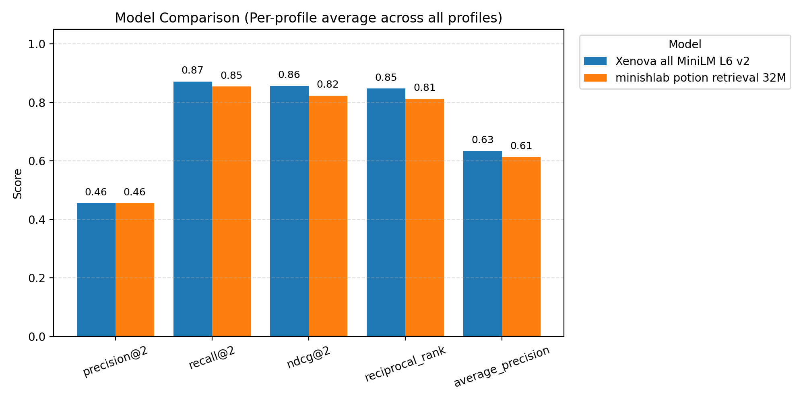
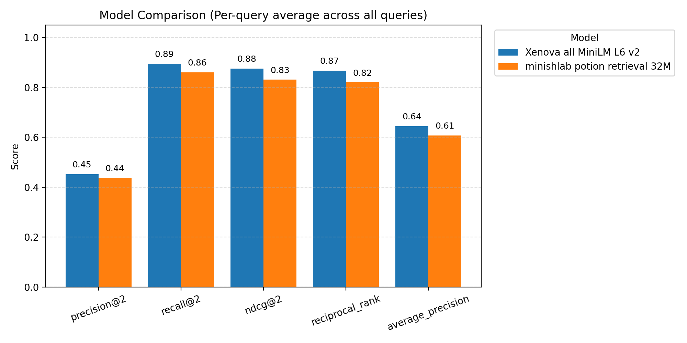

/Users/jichen/Documents/mozilla/smart_search/evaluation_pipeline_v2/results |
 |
| model_name | profile | Unnamed: 0 | index | precision@2 | recall@2 | ndcg@2 | reciprocal_rank | average_precision |
|---|---|---|---|---|---|---|---|---|
| Xenova_all_MiniLM_L6_v2 | 000_teenager | 0 | count | 100.0 | 100.0 | 100.0 | 100.0 | 100.0 |
| Xenova_all_MiniLM_L6_v2 | 000_teenager | 1 | mean | 0.49 | 0.98 | 0.9763 | 0.975 | 0.73 |
| Xenova_all_MiniLM_L6_v2 | 000_teenager | 2 | std | 0.0704 | 0.1407 | 0.145 | 0.1486 | 0.1161 |
| Xenova_all_MiniLM_L6_v2 | 000_teenager | 3 | min | 0.0 | 0.0 | 0.0 | 0.0 | 0.0 |
| Xenova_all_MiniLM_L6_v2 | 000_teenager | 4 | 25% | 0.5 | 1.0 | 1.0 | 1.0 | 0.75 |
| Xenova_all_MiniLM_L6_v2 | 000_teenager | 5 | 50% | 0.5 | 1.0 | 1.0 | 1.0 | 0.75 |
| Xenova_all_MiniLM_L6_v2 | 000_teenager | 6 | 75% | 0.5 | 1.0 | 1.0 | 1.0 | 0.75 |
| Xenova_all_MiniLM_L6_v2 | 000_teenager | 7 | max | 0.5 | 1.0 | 1.0 | 1.0 | 0.75 |
Source: results/000_teenager/evaluation_results/Xenova_all_MiniLM_L6_v2_traditional_eval_aggregate_metrics.csv
| model_name | profile | Unnamed: 0 | index | precision@2 | recall@2 | ndcg@2 | reciprocal_rank | average_precision |
|---|---|---|---|---|---|---|---|---|
| minishlab_potion_retrieval_32M | 000_teenager | 0 | count | 100.0 | 100.0 | 100.0 | 100.0 | 100.0 |
| minishlab_potion_retrieval_32M | 000_teenager | 1 | mean | 0.495 | 0.99 | 0.9752 | 0.97 | 0.7225 |
| minishlab_potion_retrieval_32M | 000_teenager | 2 | std | 0.05 | 0.1 | 0.1224 | 0.1389 | 0.1226 |
| minishlab_potion_retrieval_32M | 000_teenager | 3 | min | 0.0 | 0.0 | 0.0 | 0.0 | 0.0 |
| minishlab_potion_retrieval_32M | 000_teenager | 4 | 25% | 0.5 | 1.0 | 1.0 | 1.0 | 0.75 |
| minishlab_potion_retrieval_32M | 000_teenager | 5 | 50% | 0.5 | 1.0 | 1.0 | 1.0 | 0.75 |
| minishlab_potion_retrieval_32M | 000_teenager | 6 | 75% | 0.5 | 1.0 | 1.0 | 1.0 | 0.75 |
| minishlab_potion_retrieval_32M | 000_teenager | 7 | max | 0.5 | 1.0 | 1.0 | 1.0 | 0.75 |
Source: results/000_teenager/evaluation_results/minishlab_potion_retrieval_32M_traditional_eval_aggregate_metrics.csv
| model_name | profile | Unnamed: 0 | index | precision@2 | recall@2 | ndcg@2 | reciprocal_rank | average_precision |
|---|---|---|---|---|---|---|---|---|
| Xenova_all_MiniLM_L6_v2 | 001_software_engineer | 0 | count | 100.0 | 100.0 | 100.0 | 100.0 | 100.0 |
| Xenova_all_MiniLM_L6_v2 | 001_software_engineer | 1 | mean | 0.48 | 0.96 | 0.9563 | 0.955 | 0.715 |
| Xenova_all_MiniLM_L6_v2 | 001_software_engineer | 2 | std | 0.0985 | 0.1969 | 0.1996 | 0.2022 | 0.155 |
| Xenova_all_MiniLM_L6_v2 | 001_software_engineer | 3 | min | 0.0 | 0.0 | 0.0 | 0.0 | 0.0 |
| Xenova_all_MiniLM_L6_v2 | 001_software_engineer | 4 | 25% | 0.5 | 1.0 | 1.0 | 1.0 | 0.75 |
| Xenova_all_MiniLM_L6_v2 | 001_software_engineer | 5 | 50% | 0.5 | 1.0 | 1.0 | 1.0 | 0.75 |
| Xenova_all_MiniLM_L6_v2 | 001_software_engineer | 6 | 75% | 0.5 | 1.0 | 1.0 | 1.0 | 0.75 |
| Xenova_all_MiniLM_L6_v2 | 001_software_engineer | 7 | max | 0.5 | 1.0 | 1.0 | 1.0 | 0.75 |
Source: results/001_software_engineer/evaluation_results/Xenova_all_MiniLM_L6_v2_traditional_eval_aggregate_metrics.csv
| model_name | profile | Unnamed: 0 | index | precision@2 | recall@2 | ndcg@2 | reciprocal_rank | average_precision |
|---|---|---|---|---|---|---|---|---|
| minishlab_potion_retrieval_32M | 001_software_engineer | 0 | count | 100.0 | 100.0 | 100.0 | 100.0 | 100.0 |
| minishlab_potion_retrieval_32M | 001_software_engineer | 1 | mean | 0.445 | 0.89 | 0.8568 | 0.845 | 0.6225 |
| minishlab_potion_retrieval_32M | 001_software_engineer | 2 | std | 0.1572 | 0.3145 | 0.3206 | 0.331 | 0.2623 |
| minishlab_potion_retrieval_32M | 001_software_engineer | 3 | min | 0.0 | 0.0 | 0.0 | 0.0 | 0.0 |
| minishlab_potion_retrieval_32M | 001_software_engineer | 4 | 25% | 0.5 | 1.0 | 1.0 | 1.0 | 0.75 |
| minishlab_potion_retrieval_32M | 001_software_engineer | 5 | 50% | 0.5 | 1.0 | 1.0 | 1.0 | 0.75 |
| minishlab_potion_retrieval_32M | 001_software_engineer | 6 | 75% | 0.5 | 1.0 | 1.0 | 1.0 | 0.75 |
| minishlab_potion_retrieval_32M | 001_software_engineer | 7 | max | 0.5 | 1.0 | 1.0 | 1.0 | 0.75 |
Source: results/001_software_engineer/evaluation_results/minishlab_potion_retrieval_32M_traditional_eval_aggregate_metrics.csv
| model_name | profile | Unnamed: 0 | index | precision@2 | recall@2 | ndcg@2 | reciprocal_rank | average_precision |
|---|---|---|---|---|---|---|---|---|
| Xenova_all_MiniLM_L6_v2 | 002_software_engineer | 0 | count | 100.0 | 100.0 | 100.0 | 100.0 | 100.0 |
| Xenova_all_MiniLM_L6_v2 | 002_software_engineer | 1 | mean | 0.475 | 0.95 | 0.9426 | 0.94 | 0.7025 |
| Xenova_all_MiniLM_L6_v2 | 002_software_engineer | 2 | std | 0.1095 | 0.219 | 0.2235 | 0.2279 | 0.1766 |
| Xenova_all_MiniLM_L6_v2 | 002_software_engineer | 3 | min | 0.0 | 0.0 | 0.0 | 0.0 | 0.0 |
| Xenova_all_MiniLM_L6_v2 | 002_software_engineer | 4 | 25% | 0.5 | 1.0 | 1.0 | 1.0 | 0.75 |
| Xenova_all_MiniLM_L6_v2 | 002_software_engineer | 5 | 50% | 0.5 | 1.0 | 1.0 | 1.0 | 0.75 |
| Xenova_all_MiniLM_L6_v2 | 002_software_engineer | 6 | 75% | 0.5 | 1.0 | 1.0 | 1.0 | 0.75 |
| Xenova_all_MiniLM_L6_v2 | 002_software_engineer | 7 | max | 0.5 | 1.0 | 1.0 | 1.0 | 0.75 |
Source: results/002_software_engineer/evaluation_results/Xenova_all_MiniLM_L6_v2_traditional_eval_aggregate_metrics.csv
| model_name | profile | Unnamed: 0 | index | precision@2 | recall@2 | ndcg@2 | reciprocal_rank | average_precision |
|---|---|---|---|---|---|---|---|---|
| minishlab_potion_retrieval_32M | 002_software_engineer | 0 | count | 100.0 | 100.0 | 100.0 | 100.0 | 100.0 |
| minishlab_potion_retrieval_32M | 002_software_engineer | 1 | mean | 0.47 | 0.94 | 0.9252 | 0.92 | 0.685 |
| minishlab_potion_retrieval_32M | 002_software_engineer | 2 | std | 0.1193 | 0.2387 | 0.2459 | 0.2535 | 0.1998 |
| minishlab_potion_retrieval_32M | 002_software_engineer | 3 | min | 0.0 | 0.0 | 0.0 | 0.0 | 0.0 |
| minishlab_potion_retrieval_32M | 002_software_engineer | 4 | 25% | 0.5 | 1.0 | 1.0 | 1.0 | 0.75 |
| minishlab_potion_retrieval_32M | 002_software_engineer | 5 | 50% | 0.5 | 1.0 | 1.0 | 1.0 | 0.75 |
| minishlab_potion_retrieval_32M | 002_software_engineer | 6 | 75% | 0.5 | 1.0 | 1.0 | 1.0 | 0.75 |
| minishlab_potion_retrieval_32M | 002_software_engineer | 7 | max | 0.5 | 1.0 | 1.0 | 1.0 | 0.75 |
Source: results/002_software_engineer/evaluation_results/minishlab_potion_retrieval_32M_traditional_eval_aggregate_metrics.csv
| model_name | profile | Unnamed: 0 | index | precision@2 | recall@2 | ndcg@2 | reciprocal_rank | average_precision |
|---|---|---|---|---|---|---|---|---|
| Xenova_all_MiniLM_L6_v2 | 003_teenager | 0 | count | 100.0 | 100.0 | 100.0 | 100.0 | 100.0 |
| Xenova_all_MiniLM_L6_v2 | 003_teenager | 1 | mean | 0.455 | 0.91 | 0.8952 | 0.89 | 0.6625 |
| Xenova_all_MiniLM_L6_v2 | 003_teenager | 2 | std | 0.1438 | 0.2876 | 0.2921 | 0.298 | 0.2313 |
| Xenova_all_MiniLM_L6_v2 | 003_teenager | 3 | min | 0.0 | 0.0 | 0.0 | 0.0 | 0.0 |
| Xenova_all_MiniLM_L6_v2 | 003_teenager | 4 | 25% | 0.5 | 1.0 | 1.0 | 1.0 | 0.75 |
| Xenova_all_MiniLM_L6_v2 | 003_teenager | 5 | 50% | 0.5 | 1.0 | 1.0 | 1.0 | 0.75 |
| Xenova_all_MiniLM_L6_v2 | 003_teenager | 6 | 75% | 0.5 | 1.0 | 1.0 | 1.0 | 0.75 |
| Xenova_all_MiniLM_L6_v2 | 003_teenager | 7 | max | 0.5 | 1.0 | 1.0 | 1.0 | 0.75 |
Source: results/003_teenager/evaluation_results/Xenova_all_MiniLM_L6_v2_traditional_eval_aggregate_metrics.csv
| model_name | profile | Unnamed: 0 | index | precision@2 | recall@2 | ndcg@2 | reciprocal_rank | average_precision |
|---|---|---|---|---|---|---|---|---|
| minishlab_potion_retrieval_32M | 003_teenager | 0 | count | 100.0 | 100.0 | 100.0 | 100.0 | 100.0 |
| minishlab_potion_retrieval_32M | 003_teenager | 1 | mean | 0.415 | 0.83 | 0.7894 | 0.775 | 0.5675 |
| minishlab_potion_retrieval_32M | 003_teenager | 2 | std | 0.1888 | 0.3775 | 0.3769 | 0.3852 | 0.3012 |
| minishlab_potion_retrieval_32M | 003_teenager | 3 | min | 0.0 | 0.0 | 0.0 | 0.0 | 0.0 |
| minishlab_potion_retrieval_32M | 003_teenager | 4 | 25% | 0.5 | 1.0 | 0.6309 | 0.5 | 0.25 |
| minishlab_potion_retrieval_32M | 003_teenager | 5 | 50% | 0.5 | 1.0 | 1.0 | 1.0 | 0.75 |
| minishlab_potion_retrieval_32M | 003_teenager | 6 | 75% | 0.5 | 1.0 | 1.0 | 1.0 | 0.75 |
| minishlab_potion_retrieval_32M | 003_teenager | 7 | max | 0.5 | 1.0 | 1.0 | 1.0 | 0.75 |
Source: results/003_teenager/evaluation_results/minishlab_potion_retrieval_32M_traditional_eval_aggregate_metrics.csv
| model_name | profile | Unnamed: 0 | index | precision@2 | recall@2 | ndcg@2 | reciprocal_rank | average_precision |
|---|---|---|---|---|---|---|---|---|
| Xenova_all_MiniLM_L6_v2 | 004_high-tech_investor | 0 | count | 100.0 | 100.0 | 100.0 | 100.0 | 100.0 |
| Xenova_all_MiniLM_L6_v2 | 004_high-tech_investor | 1 | mean | 0.465 | 0.93 | 0.9079 | 0.9 | 0.6675 |
| Xenova_all_MiniLM_L6_v2 | 004_high-tech_investor | 2 | std | 0.1282 | 0.2564 | 0.2653 | 0.2752 | 0.2192 |
| Xenova_all_MiniLM_L6_v2 | 004_high-tech_investor | 3 | min | 0.0 | 0.0 | 0.0 | 0.0 | 0.0 |
| Xenova_all_MiniLM_L6_v2 | 004_high-tech_investor | 4 | 25% | 0.5 | 1.0 | 1.0 | 1.0 | 0.75 |
| Xenova_all_MiniLM_L6_v2 | 004_high-tech_investor | 5 | 50% | 0.5 | 1.0 | 1.0 | 1.0 | 0.75 |
| Xenova_all_MiniLM_L6_v2 | 004_high-tech_investor | 6 | 75% | 0.5 | 1.0 | 1.0 | 1.0 | 0.75 |
| Xenova_all_MiniLM_L6_v2 | 004_high-tech_investor | 7 | max | 0.5 | 1.0 | 1.0 | 1.0 | 0.75 |
Source: results/004_high-tech_investor/evaluation_results/Xenova_all_MiniLM_L6_v2_traditional_eval_aggregate_metrics.csv
| model_name | profile | Unnamed: 0 | index | precision@2 | recall@2 | ndcg@2 | reciprocal_rank | average_precision |
|---|---|---|---|---|---|---|---|---|
| minishlab_potion_retrieval_32M | 004_high-tech_investor | 0 | count | 100.0 | 100.0 | 100.0 | 100.0 | 100.0 |
| minishlab_potion_retrieval_32M | 004_high-tech_investor | 1 | mean | 0.415 | 0.83 | 0.7931 | 0.78 | 0.5725 |
| minishlab_potion_retrieval_32M | 004_high-tech_investor | 2 | std | 0.1888 | 0.3775 | 0.3771 | 0.3848 | 0.3 |
| minishlab_potion_retrieval_32M | 004_high-tech_investor | 3 | min | 0.0 | 0.0 | 0.0 | 0.0 | 0.0 |
| minishlab_potion_retrieval_32M | 004_high-tech_investor | 4 | 25% | 0.5 | 1.0 | 0.6309 | 0.5 | 0.25 |
| minishlab_potion_retrieval_32M | 004_high-tech_investor | 5 | 50% | 0.5 | 1.0 | 1.0 | 1.0 | 0.75 |
| minishlab_potion_retrieval_32M | 004_high-tech_investor | 6 | 75% | 0.5 | 1.0 | 1.0 | 1.0 | 0.75 |
| minishlab_potion_retrieval_32M | 004_high-tech_investor | 7 | max | 0.5 | 1.0 | 1.0 | 1.0 | 0.75 |
Source: results/004_high-tech_investor/evaluation_results/minishlab_potion_retrieval_32M_traditional_eval_aggregate_metrics.csv
| model_name | profile | Unnamed: 0 | index | precision@2 | recall@2 | ndcg@2 | reciprocal_rank | average_precision |
|---|---|---|---|---|---|---|---|---|
| Xenova_all_MiniLM_L6_v2 | 005_daily_wage_worker | 0 | count | 100.0 | 100.0 | 100.0 | 100.0 | 100.0 |
| Xenova_all_MiniLM_L6_v2 | 005_daily_wage_worker | 1 | mean | 0.475 | 0.95 | 0.9463 | 0.945 | 0.7075 |
| Xenova_all_MiniLM_L6_v2 | 005_daily_wage_worker | 2 | std | 0.1095 | 0.219 | 0.2213 | 0.2236 | 0.1706 |
| Xenova_all_MiniLM_L6_v2 | 005_daily_wage_worker | 3 | min | 0.0 | 0.0 | 0.0 | 0.0 | 0.0 |
| Xenova_all_MiniLM_L6_v2 | 005_daily_wage_worker | 4 | 25% | 0.5 | 1.0 | 1.0 | 1.0 | 0.75 |
| Xenova_all_MiniLM_L6_v2 | 005_daily_wage_worker | 5 | 50% | 0.5 | 1.0 | 1.0 | 1.0 | 0.75 |
| Xenova_all_MiniLM_L6_v2 | 005_daily_wage_worker | 6 | 75% | 0.5 | 1.0 | 1.0 | 1.0 | 0.75 |
| Xenova_all_MiniLM_L6_v2 | 005_daily_wage_worker | 7 | max | 0.5 | 1.0 | 1.0 | 1.0 | 0.75 |
Source: results/005_daily_wage_worker/evaluation_results/Xenova_all_MiniLM_L6_v2_traditional_eval_aggregate_metrics.csv
| model_name | profile | Unnamed: 0 | index | precision@2 | recall@2 | ndcg@2 | reciprocal_rank | average_precision |
|---|---|---|---|---|---|---|---|---|
| minishlab_potion_retrieval_32M | 005_daily_wage_worker | 0 | count | 100.0 | 100.0 | 100.0 | 100.0 | 100.0 |
| minishlab_potion_retrieval_32M | 005_daily_wage_worker | 1 | mean | 0.47 | 0.94 | 0.9289 | 0.925 | 0.69 |
| minishlab_potion_retrieval_32M | 005_daily_wage_worker | 2 | std | 0.1193 | 0.2387 | 0.2442 | 0.25 | 0.195 |
| minishlab_potion_retrieval_32M | 005_daily_wage_worker | 3 | min | 0.0 | 0.0 | 0.0 | 0.0 | 0.0 |
| minishlab_potion_retrieval_32M | 005_daily_wage_worker | 4 | 25% | 0.5 | 1.0 | 1.0 | 1.0 | 0.75 |
| minishlab_potion_retrieval_32M | 005_daily_wage_worker | 5 | 50% | 0.5 | 1.0 | 1.0 | 1.0 | 0.75 |
| minishlab_potion_retrieval_32M | 005_daily_wage_worker | 6 | 75% | 0.5 | 1.0 | 1.0 | 1.0 | 0.75 |
| minishlab_potion_retrieval_32M | 005_daily_wage_worker | 7 | max | 0.5 | 1.0 | 1.0 | 1.0 | 0.75 |
Source: results/005_daily_wage_worker/evaluation_results/minishlab_potion_retrieval_32M_traditional_eval_aggregate_metrics.csv
| model_name | profile | Unnamed: 0 | index | precision@2 | recall@2 | ndcg@2 | reciprocal_rank | average_precision |
|---|---|---|---|---|---|---|---|---|
| Xenova_all_MiniLM_L6_v2 | 006_school_teacher | 0 | count | 100.0 | 100.0 | 100.0 | 100.0 | 100.0 |
| Xenova_all_MiniLM_L6_v2 | 006_school_teacher | 1 | mean | 0.44 | 0.88 | 0.8652 | 0.86 | 0.64 |
| Xenova_all_MiniLM_L6_v2 | 006_school_teacher | 2 | std | 0.1633 | 0.3266 | 0.3292 | 0.3339 | 0.257 |
| Xenova_all_MiniLM_L6_v2 | 006_school_teacher | 3 | min | 0.0 | 0.0 | 0.0 | 0.0 | 0.0 |
| Xenova_all_MiniLM_L6_v2 | 006_school_teacher | 4 | 25% | 0.5 | 1.0 | 1.0 | 1.0 | 0.75 |
| Xenova_all_MiniLM_L6_v2 | 006_school_teacher | 5 | 50% | 0.5 | 1.0 | 1.0 | 1.0 | 0.75 |
| Xenova_all_MiniLM_L6_v2 | 006_school_teacher | 6 | 75% | 0.5 | 1.0 | 1.0 | 1.0 | 0.75 |
| Xenova_all_MiniLM_L6_v2 | 006_school_teacher | 7 | max | 0.5 | 1.0 | 1.0 | 1.0 | 0.75 |
Source: results/006_school_teacher/evaluation_results/Xenova_all_MiniLM_L6_v2_traditional_eval_aggregate_metrics.csv
| model_name | profile | Unnamed: 0 | index | precision@2 | recall@2 | ndcg@2 | reciprocal_rank | average_precision |
|---|---|---|---|---|---|---|---|---|
| minishlab_potion_retrieval_32M | 006_school_teacher | 0 | count | 100.0 | 100.0 | 100.0 | 100.0 | 100.0 |
| minishlab_potion_retrieval_32M | 006_school_teacher | 1 | mean | 0.41 | 0.82 | 0.7942 | 0.785 | 0.58 |
| minishlab_potion_retrieval_32M | 006_school_teacher | 2 | std | 0.1931 | 0.3861 | 0.3856 | 0.3909 | 0.3013 |
| minishlab_potion_retrieval_32M | 006_school_teacher | 3 | min | 0.0 | 0.0 | 0.0 | 0.0 | 0.0 |
| minishlab_potion_retrieval_32M | 006_school_teacher | 4 | 25% | 0.5 | 1.0 | 0.9077 | 0.875 | 0.625 |
| minishlab_potion_retrieval_32M | 006_school_teacher | 5 | 50% | 0.5 | 1.0 | 1.0 | 1.0 | 0.75 |
| minishlab_potion_retrieval_32M | 006_school_teacher | 6 | 75% | 0.5 | 1.0 | 1.0 | 1.0 | 0.75 |
| minishlab_potion_retrieval_32M | 006_school_teacher | 7 | max | 0.5 | 1.0 | 1.0 | 1.0 | 0.75 |
Source: results/006_school_teacher/evaluation_results/minishlab_potion_retrieval_32M_traditional_eval_aggregate_metrics.csv
| model_name | profile | Unnamed: 0 | index | precision@2 | recall@2 | ndcg@2 | reciprocal_rank | average_precision |
|---|---|---|---|---|---|---|---|---|
| Xenova_all_MiniLM_L6_v2 | 007_financial_consultant | 0 | count | 100.0 | 100.0 | 100.0 | 100.0 | 100.0 |
| Xenova_all_MiniLM_L6_v2 | 007_financial_consultant | 1 | mean | 0.495 | 0.99 | 0.9605 | 0.95 | 0.7025 |
| Xenova_all_MiniLM_L6_v2 | 007_financial_consultant | 2 | std | 0.05 | 0.1 | 0.1397 | 0.1667 | 0.1536 |
| Xenova_all_MiniLM_L6_v2 | 007_financial_consultant | 3 | min | 0.0 | 0.0 | 0.0 | 0.0 | 0.0 |
| Xenova_all_MiniLM_L6_v2 | 007_financial_consultant | 4 | 25% | 0.5 | 1.0 | 1.0 | 1.0 | 0.75 |
| Xenova_all_MiniLM_L6_v2 | 007_financial_consultant | 5 | 50% | 0.5 | 1.0 | 1.0 | 1.0 | 0.75 |
| Xenova_all_MiniLM_L6_v2 | 007_financial_consultant | 6 | 75% | 0.5 | 1.0 | 1.0 | 1.0 | 0.75 |
| Xenova_all_MiniLM_L6_v2 | 007_financial_consultant | 7 | max | 0.5 | 1.0 | 1.0 | 1.0 | 0.75 |
Source: results/007_financial_consultant/evaluation_results/Xenova_all_MiniLM_L6_v2_traditional_eval_aggregate_metrics.csv
| model_name | profile | Unnamed: 0 | index | precision@2 | recall@2 | ndcg@2 | reciprocal_rank | average_precision |
|---|---|---|---|---|---|---|---|---|
| minishlab_potion_retrieval_32M | 007_financial_consultant | 0 | count | 100.0 | 100.0 | 100.0 | 100.0 | 100.0 |
| minishlab_potion_retrieval_32M | 007_financial_consultant | 1 | mean | 0.485 | 0.97 | 0.9405 | 0.93 | 0.6875 |
| minishlab_potion_retrieval_32M | 007_financial_consultant | 2 | std | 0.0857 | 0.1714 | 0.1942 | 0.2134 | 0.1825 |
| minishlab_potion_retrieval_32M | 007_financial_consultant | 3 | min | 0.0 | 0.0 | 0.0 | 0.0 | 0.0 |
| minishlab_potion_retrieval_32M | 007_financial_consultant | 4 | 25% | 0.5 | 1.0 | 1.0 | 1.0 | 0.75 |
| minishlab_potion_retrieval_32M | 007_financial_consultant | 5 | 50% | 0.5 | 1.0 | 1.0 | 1.0 | 0.75 |
| minishlab_potion_retrieval_32M | 007_financial_consultant | 6 | 75% | 0.5 | 1.0 | 1.0 | 1.0 | 0.75 |
| minishlab_potion_retrieval_32M | 007_financial_consultant | 7 | max | 0.5 | 1.0 | 1.0 | 1.0 | 0.75 |
Source: results/007_financial_consultant/evaluation_results/minishlab_potion_retrieval_32M_traditional_eval_aggregate_metrics.csv
| model_name | profile | Unnamed: 0 | index | precision@2 | recall@2 | ndcg@2 | reciprocal_rank | average_precision |
|---|---|---|---|---|---|---|---|---|
| Xenova_all_MiniLM_L6_v2 | 008_health_advisor | 0 | count | 100.0 | 100.0 | 100.0 | 100.0 | 100.0 |
| Xenova_all_MiniLM_L6_v2 | 008_health_advisor | 1 | mean | 0.485 | 0.97 | 0.9589 | 0.955 | 0.7125 |
| Xenova_all_MiniLM_L6_v2 | 008_health_advisor | 2 | std | 0.0857 | 0.1714 | 0.1809 | 0.1893 | 0.1523 |
| Xenova_all_MiniLM_L6_v2 | 008_health_advisor | 3 | min | 0.0 | 0.0 | 0.0 | 0.0 | 0.0 |
| Xenova_all_MiniLM_L6_v2 | 008_health_advisor | 4 | 25% | 0.5 | 1.0 | 1.0 | 1.0 | 0.75 |
| Xenova_all_MiniLM_L6_v2 | 008_health_advisor | 5 | 50% | 0.5 | 1.0 | 1.0 | 1.0 | 0.75 |
| Xenova_all_MiniLM_L6_v2 | 008_health_advisor | 6 | 75% | 0.5 | 1.0 | 1.0 | 1.0 | 0.75 |
| Xenova_all_MiniLM_L6_v2 | 008_health_advisor | 7 | max | 0.5 | 1.0 | 1.0 | 1.0 | 0.75 |
Source: results/008_health_advisor/evaluation_results/Xenova_all_MiniLM_L6_v2_traditional_eval_aggregate_metrics.csv
| model_name | profile | Unnamed: 0 | index | precision@2 | recall@2 | ndcg@2 | reciprocal_rank | average_precision |
|---|---|---|---|---|---|---|---|---|
| minishlab_potion_retrieval_32M | 008_health_advisor | 0 | count | 100.0 | 100.0 | 100.0 | 100.0 | 100.0 |
| minishlab_potion_retrieval_32M | 008_health_advisor | 1 | mean | 0.46 | 0.92 | 0.9052 | 0.9 | 0.67 |
| minishlab_potion_retrieval_32M | 008_health_advisor | 2 | std | 0.1363 | 0.2727 | 0.2779 | 0.2843 | 0.2216 |
| minishlab_potion_retrieval_32M | 008_health_advisor | 3 | min | 0.0 | 0.0 | 0.0 | 0.0 | 0.0 |
| minishlab_potion_retrieval_32M | 008_health_advisor | 4 | 25% | 0.5 | 1.0 | 1.0 | 1.0 | 0.75 |
| minishlab_potion_retrieval_32M | 008_health_advisor | 5 | 50% | 0.5 | 1.0 | 1.0 | 1.0 | 0.75 |
| minishlab_potion_retrieval_32M | 008_health_advisor | 6 | 75% | 0.5 | 1.0 | 1.0 | 1.0 | 0.75 |
| minishlab_potion_retrieval_32M | 008_health_advisor | 7 | max | 0.5 | 1.0 | 1.0 | 1.0 | 0.75 |
Source: results/008_health_advisor/evaluation_results/minishlab_potion_retrieval_32M_traditional_eval_aggregate_metrics.csv
| model_name | profile | Unnamed: 0 | index | precision@2 | recall@2 | ndcg@2 | reciprocal_rank | average_precision |
|---|---|---|---|---|---|---|---|---|
| Xenova_all_MiniLM_L6_v2 | 009_risk-taker | 0 | count | 100.0 | 100.0 | 100.0 | 100.0 | 100.0 |
| Xenova_all_MiniLM_L6_v2 | 009_risk-taker | 1 | mean | 0.45 | 0.9 | 0.8889 | 0.885 | 0.66 |
| Xenova_all_MiniLM_L6_v2 | 009_risk-taker | 2 | std | 0.1508 | 0.3015 | 0.3044 | 0.3086 | 0.2371 |
| Xenova_all_MiniLM_L6_v2 | 009_risk-taker | 3 | min | 0.0 | 0.0 | 0.0 | 0.0 | 0.0 |
| Xenova_all_MiniLM_L6_v2 | 009_risk-taker | 4 | 25% | 0.5 | 1.0 | 1.0 | 1.0 | 0.75 |
| Xenova_all_MiniLM_L6_v2 | 009_risk-taker | 5 | 50% | 0.5 | 1.0 | 1.0 | 1.0 | 0.75 |
| Xenova_all_MiniLM_L6_v2 | 009_risk-taker | 6 | 75% | 0.5 | 1.0 | 1.0 | 1.0 | 0.75 |
| Xenova_all_MiniLM_L6_v2 | 009_risk-taker | 7 | max | 0.5 | 1.0 | 1.0 | 1.0 | 0.75 |
Source: results/009_risk-taker/evaluation_results/Xenova_all_MiniLM_L6_v2_traditional_eval_aggregate_metrics.csv
| model_name | profile | Unnamed: 0 | index | precision@2 | recall@2 | ndcg@2 | reciprocal_rank | average_precision |
|---|---|---|---|---|---|---|---|---|
| minishlab_potion_retrieval_32M | 009_risk-taker | 0 | count | 100.0 | 100.0 | 100.0 | 100.0 | 100.0 |
| minishlab_potion_retrieval_32M | 009_risk-taker | 1 | mean | 0.415 | 0.83 | 0.8005 | 0.79 | 0.5825 |
| minishlab_potion_retrieval_32M | 009_risk-taker | 2 | std | 0.1888 | 0.3775 | 0.3775 | 0.3839 | 0.2974 |
| minishlab_potion_retrieval_32M | 009_risk-taker | 3 | min | 0.0 | 0.0 | 0.0 | 0.0 | 0.0 |
| minishlab_potion_retrieval_32M | 009_risk-taker | 4 | 25% | 0.5 | 1.0 | 0.9077 | 0.875 | 0.625 |
| minishlab_potion_retrieval_32M | 009_risk-taker | 5 | 50% | 0.5 | 1.0 | 1.0 | 1.0 | 0.75 |
| minishlab_potion_retrieval_32M | 009_risk-taker | 6 | 75% | 0.5 | 1.0 | 1.0 | 1.0 | 0.75 |
| minishlab_potion_retrieval_32M | 009_risk-taker | 7 | max | 0.5 | 1.0 | 1.0 | 1.0 | 0.75 |
Source: results/009_risk-taker/evaluation_results/minishlab_potion_retrieval_32M_traditional_eval_aggregate_metrics.csv
| model_name | profile | Unnamed: 0 | index | precision@2 | recall@2 | ndcg@2 | reciprocal_rank | average_precision |
|---|---|---|---|---|---|---|---|---|
| Xenova_all_MiniLM_L6_v2 | 010_gaming_enthusiast | 0 | count | 100.0 | 100.0 | 100.0 | 100.0 | 100.0 |
| Xenova_all_MiniLM_L6_v2 | 010_gaming_enthusiast | 1 | mean | 0.465 | 0.93 | 0.9115 | 0.905 | 0.6725 |
| Xenova_all_MiniLM_L6_v2 | 010_gaming_enthusiast | 2 | std | 0.1282 | 0.2564 | 0.264 | 0.2724 | 0.2152 |
| Xenova_all_MiniLM_L6_v2 | 010_gaming_enthusiast | 3 | min | 0.0 | 0.0 | 0.0 | 0.0 | 0.0 |
| Xenova_all_MiniLM_L6_v2 | 010_gaming_enthusiast | 4 | 25% | 0.5 | 1.0 | 1.0 | 1.0 | 0.75 |
| Xenova_all_MiniLM_L6_v2 | 010_gaming_enthusiast | 5 | 50% | 0.5 | 1.0 | 1.0 | 1.0 | 0.75 |
| Xenova_all_MiniLM_L6_v2 | 010_gaming_enthusiast | 6 | 75% | 0.5 | 1.0 | 1.0 | 1.0 | 0.75 |
| Xenova_all_MiniLM_L6_v2 | 010_gaming_enthusiast | 7 | max | 0.5 | 1.0 | 1.0 | 1.0 | 0.75 |
Source: results/010_gaming_enthusiast/evaluation_results/Xenova_all_MiniLM_L6_v2_traditional_eval_aggregate_metrics.csv
| model_name | profile | Unnamed: 0 | index | precision@2 | recall@2 | ndcg@2 | reciprocal_rank | average_precision |
|---|---|---|---|---|---|---|---|---|
| minishlab_potion_retrieval_32M | 010_gaming_enthusiast | 0 | count | 100.0 | 100.0 | 100.0 | 100.0 | 100.0 |
| minishlab_potion_retrieval_32M | 010_gaming_enthusiast | 1 | mean | 0.435 | 0.87 | 0.8589 | 0.855 | 0.6375 |
| minishlab_potion_retrieval_32M | 010_gaming_enthusiast | 2 | std | 0.169 | 0.338 | 0.3396 | 0.343 | 0.262 |
| minishlab_potion_retrieval_32M | 010_gaming_enthusiast | 3 | min | 0.0 | 0.0 | 0.0 | 0.0 | 0.0 |
| minishlab_potion_retrieval_32M | 010_gaming_enthusiast | 4 | 25% | 0.5 | 1.0 | 1.0 | 1.0 | 0.75 |
| minishlab_potion_retrieval_32M | 010_gaming_enthusiast | 5 | 50% | 0.5 | 1.0 | 1.0 | 1.0 | 0.75 |
| minishlab_potion_retrieval_32M | 010_gaming_enthusiast | 6 | 75% | 0.5 | 1.0 | 1.0 | 1.0 | 0.75 |
| minishlab_potion_retrieval_32M | 010_gaming_enthusiast | 7 | max | 0.5 | 1.0 | 1.0 | 1.0 | 0.75 |
Source: results/010_gaming_enthusiast/evaluation_results/minishlab_potion_retrieval_32M_traditional_eval_aggregate_metrics.csv
| model_name | profile | Unnamed: 0 | index | precision@2 | recall@2 | ndcg@2 | reciprocal_rank | average_precision |
|---|---|---|---|---|---|---|---|---|
| Xenova_all_MiniLM_L6_v2 | 011_creative_hobbyist | 0 | count | 100.0 | 100.0 | 100.0 | 100.0 | 100.0 |
| Xenova_all_MiniLM_L6_v2 | 011_creative_hobbyist | 1 | mean | 0.455 | 0.91 | 0.8952 | 0.89 | 0.6625 |
| Xenova_all_MiniLM_L6_v2 | 011_creative_hobbyist | 2 | std | 0.1438 | 0.2876 | 0.2921 | 0.298 | 0.2313 |
| Xenova_all_MiniLM_L6_v2 | 011_creative_hobbyist | 3 | min | 0.0 | 0.0 | 0.0 | 0.0 | 0.0 |
| Xenova_all_MiniLM_L6_v2 | 011_creative_hobbyist | 4 | 25% | 0.5 | 1.0 | 1.0 | 1.0 | 0.75 |
| Xenova_all_MiniLM_L6_v2 | 011_creative_hobbyist | 5 | 50% | 0.5 | 1.0 | 1.0 | 1.0 | 0.75 |
| Xenova_all_MiniLM_L6_v2 | 011_creative_hobbyist | 6 | 75% | 0.5 | 1.0 | 1.0 | 1.0 | 0.75 |
| Xenova_all_MiniLM_L6_v2 | 011_creative_hobbyist | 7 | max | 0.5 | 1.0 | 1.0 | 1.0 | 0.75 |
Source: results/011_creative_hobbyist/evaluation_results/Xenova_all_MiniLM_L6_v2_traditional_eval_aggregate_metrics.csv
| model_name | profile | Unnamed: 0 | index | precision@2 | recall@2 | ndcg@2 | reciprocal_rank | average_precision |
|---|---|---|---|---|---|---|---|---|
| minishlab_potion_retrieval_32M | 011_creative_hobbyist | 0 | count | 100.0 | 100.0 | 100.0 | 100.0 | 100.0 |
| minishlab_potion_retrieval_32M | 011_creative_hobbyist | 1 | mean | 0.425 | 0.85 | 0.8242 | 0.815 | 0.6025 |
| minishlab_potion_retrieval_32M | 011_creative_hobbyist | 2 | std | 0.1794 | 0.3589 | 0.3604 | 0.3669 | 0.2845 |
| minishlab_potion_retrieval_32M | 011_creative_hobbyist | 3 | min | 0.0 | 0.0 | 0.0 | 0.0 | 0.0 |
| minishlab_potion_retrieval_32M | 011_creative_hobbyist | 4 | 25% | 0.5 | 1.0 | 1.0 | 1.0 | 0.75 |
| minishlab_potion_retrieval_32M | 011_creative_hobbyist | 5 | 50% | 0.5 | 1.0 | 1.0 | 1.0 | 0.75 |
| minishlab_potion_retrieval_32M | 011_creative_hobbyist | 6 | 75% | 0.5 | 1.0 | 1.0 | 1.0 | 0.75 |
| minishlab_potion_retrieval_32M | 011_creative_hobbyist | 7 | max | 0.5 | 1.0 | 1.0 | 1.0 | 0.75 |
Source: results/011_creative_hobbyist/evaluation_results/minishlab_potion_retrieval_32M_traditional_eval_aggregate_metrics.csv
| model_name | profile | Unnamed: 0 | index | precision@2 | recall@2 | ndcg@2 | reciprocal_rank | average_precision |
|---|---|---|---|---|---|---|---|---|
| Xenova_all_MiniLM_L6_v2 | 012_gaming_enthusiast | 0 | count | 100.0 | 100.0 | 100.0 | 100.0 | 100.0 |
| Xenova_all_MiniLM_L6_v2 | 012_gaming_enthusiast | 1 | mean | 0.475 | 0.95 | 0.9279 | 0.92 | 0.6825 |
| Xenova_all_MiniLM_L6_v2 | 012_gaming_enthusiast | 2 | std | 0.1095 | 0.219 | 0.2313 | 0.2433 | 0.1974 |
| Xenova_all_MiniLM_L6_v2 | 012_gaming_enthusiast | 3 | min | 0.0 | 0.0 | 0.0 | 0.0 | 0.0 |
| Xenova_all_MiniLM_L6_v2 | 012_gaming_enthusiast | 4 | 25% | 0.5 | 1.0 | 1.0 | 1.0 | 0.75 |
| Xenova_all_MiniLM_L6_v2 | 012_gaming_enthusiast | 5 | 50% | 0.5 | 1.0 | 1.0 | 1.0 | 0.75 |
| Xenova_all_MiniLM_L6_v2 | 012_gaming_enthusiast | 6 | 75% | 0.5 | 1.0 | 1.0 | 1.0 | 0.75 |
| Xenova_all_MiniLM_L6_v2 | 012_gaming_enthusiast | 7 | max | 0.5 | 1.0 | 1.0 | 1.0 | 0.75 |
Source: results/012_gaming_enthusiast/evaluation_results/Xenova_all_MiniLM_L6_v2_traditional_eval_aggregate_metrics.csv
| model_name | profile | Unnamed: 0 | index | precision@2 | recall@2 | ndcg@2 | reciprocal_rank | average_precision |
|---|---|---|---|---|---|---|---|---|
| minishlab_potion_retrieval_32M | 012_gaming_enthusiast | 0 | count | 100.0 | 100.0 | 100.0 | 100.0 | 100.0 |
| minishlab_potion_retrieval_32M | 012_gaming_enthusiast | 1 | mean | 0.455 | 0.91 | 0.8842 | 0.875 | 0.6475 |
| minishlab_potion_retrieval_32M | 012_gaming_enthusiast | 2 | std | 0.1438 | 0.2876 | 0.2949 | 0.3046 | 0.2412 |
| minishlab_potion_retrieval_32M | 012_gaming_enthusiast | 3 | min | 0.0 | 0.0 | 0.0 | 0.0 | 0.0 |
| minishlab_potion_retrieval_32M | 012_gaming_enthusiast | 4 | 25% | 0.5 | 1.0 | 1.0 | 1.0 | 0.75 |
| minishlab_potion_retrieval_32M | 012_gaming_enthusiast | 5 | 50% | 0.5 | 1.0 | 1.0 | 1.0 | 0.75 |
| minishlab_potion_retrieval_32M | 012_gaming_enthusiast | 6 | 75% | 0.5 | 1.0 | 1.0 | 1.0 | 0.75 |
| minishlab_potion_retrieval_32M | 012_gaming_enthusiast | 7 | max | 0.5 | 1.0 | 1.0 | 1.0 | 0.75 |
Source: results/012_gaming_enthusiast/evaluation_results/minishlab_potion_retrieval_32M_traditional_eval_aggregate_metrics.csv
| model_name | profile | Unnamed: 0 | index | precision@2 | recall@2 | ndcg@2 | reciprocal_rank | average_precision |
|---|---|---|---|---|---|---|---|---|
| Xenova_all_MiniLM_L6_v2 | 013_freelance_creative | 0 | count | 100.0 | 100.0 | 100.0 | 100.0 | 100.0 |
| Xenova_all_MiniLM_L6_v2 | 013_freelance_creative | 1 | mean | 0.46 | 0.92 | 0.9015 | 0.895 | 0.665 |
| Xenova_all_MiniLM_L6_v2 | 013_freelance_creative | 2 | std | 0.1363 | 0.2727 | 0.2791 | 0.2869 | 0.2254 |
| Xenova_all_MiniLM_L6_v2 | 013_freelance_creative | 3 | min | 0.0 | 0.0 | 0.0 | 0.0 | 0.0 |
| Xenova_all_MiniLM_L6_v2 | 013_freelance_creative | 4 | 25% | 0.5 | 1.0 | 1.0 | 1.0 | 0.75 |
| Xenova_all_MiniLM_L6_v2 | 013_freelance_creative | 5 | 50% | 0.5 | 1.0 | 1.0 | 1.0 | 0.75 |
| Xenova_all_MiniLM_L6_v2 | 013_freelance_creative | 6 | 75% | 0.5 | 1.0 | 1.0 | 1.0 | 0.75 |
| Xenova_all_MiniLM_L6_v2 | 013_freelance_creative | 7 | max | 0.5 | 1.0 | 1.0 | 1.0 | 0.75 |
Source: results/013_freelance_creative/evaluation_results/Xenova_all_MiniLM_L6_v2_traditional_eval_aggregate_metrics.csv
| model_name | profile | Unnamed: 0 | index | precision@2 | recall@2 | ndcg@2 | reciprocal_rank | average_precision |
|---|---|---|---|---|---|---|---|---|
| minishlab_potion_retrieval_32M | 013_freelance_creative | 0 | count | 100.0 | 100.0 | 100.0 | 100.0 | 100.0 |
| minishlab_potion_retrieval_32M | 013_freelance_creative | 1 | mean | 0.455 | 0.91 | 0.8842 | 0.875 | 0.6475 |
| minishlab_potion_retrieval_32M | 013_freelance_creative | 2 | std | 0.1438 | 0.2876 | 0.2949 | 0.3046 | 0.2412 |
| minishlab_potion_retrieval_32M | 013_freelance_creative | 3 | min | 0.0 | 0.0 | 0.0 | 0.0 | 0.0 |
| minishlab_potion_retrieval_32M | 013_freelance_creative | 4 | 25% | 0.5 | 1.0 | 1.0 | 1.0 | 0.75 |
| minishlab_potion_retrieval_32M | 013_freelance_creative | 5 | 50% | 0.5 | 1.0 | 1.0 | 1.0 | 0.75 |
| minishlab_potion_retrieval_32M | 013_freelance_creative | 6 | 75% | 0.5 | 1.0 | 1.0 | 1.0 | 0.75 |
| minishlab_potion_retrieval_32M | 013_freelance_creative | 7 | max | 0.5 | 1.0 | 1.0 | 1.0 | 0.75 |
Source: results/013_freelance_creative/evaluation_results/minishlab_potion_retrieval_32M_traditional_eval_aggregate_metrics.csv
| model_name | profile | Unnamed: 0 | index | precision@2 | recall@2 | ndcg@2 | reciprocal_rank | average_precision |
|---|---|---|---|---|---|---|---|---|
| Xenova_all_MiniLM_L6_v2 | 014_tech_enthusiast | 0 | count | 100.0 | 100.0 | 100.0 | 100.0 | 100.0 |
| Xenova_all_MiniLM_L6_v2 | 014_tech_enthusiast | 1 | mean | 0.45 | 0.9 | 0.8926 | 0.89 | 0.665 |
| Xenova_all_MiniLM_L6_v2 | 014_tech_enthusiast | 2 | std | 0.1508 | 0.3015 | 0.3035 | 0.3063 | 0.2336 |
| Xenova_all_MiniLM_L6_v2 | 014_tech_enthusiast | 3 | min | 0.0 | 0.0 | 0.0 | 0.0 | 0.0 |
| Xenova_all_MiniLM_L6_v2 | 014_tech_enthusiast | 4 | 25% | 0.5 | 1.0 | 1.0 | 1.0 | 0.75 |
| Xenova_all_MiniLM_L6_v2 | 014_tech_enthusiast | 5 | 50% | 0.5 | 1.0 | 1.0 | 1.0 | 0.75 |
| Xenova_all_MiniLM_L6_v2 | 014_tech_enthusiast | 6 | 75% | 0.5 | 1.0 | 1.0 | 1.0 | 0.75 |
| Xenova_all_MiniLM_L6_v2 | 014_tech_enthusiast | 7 | max | 0.5 | 1.0 | 1.0 | 1.0 | 0.75 |
Source: results/014_tech_enthusiast/evaluation_results/Xenova_all_MiniLM_L6_v2_traditional_eval_aggregate_metrics.csv
| model_name | profile | Unnamed: 0 | index | precision@2 | recall@2 | ndcg@2 | reciprocal_rank | average_precision |
|---|---|---|---|---|---|---|---|---|
| minishlab_potion_retrieval_32M | 014_tech_enthusiast | 0 | count | 100.0 | 100.0 | 100.0 | 100.0 | 100.0 |
| minishlab_potion_retrieval_32M | 014_tech_enthusiast | 1 | mean | 0.435 | 0.87 | 0.8552 | 0.85 | 0.6325 |
| minishlab_potion_retrieval_32M | 014_tech_enthusiast | 2 | std | 0.169 | 0.338 | 0.3401 | 0.3445 | 0.2646 |
| minishlab_potion_retrieval_32M | 014_tech_enthusiast | 3 | min | 0.0 | 0.0 | 0.0 | 0.0 | 0.0 |
| minishlab_potion_retrieval_32M | 014_tech_enthusiast | 4 | 25% | 0.5 | 1.0 | 1.0 | 1.0 | 0.75 |
| minishlab_potion_retrieval_32M | 014_tech_enthusiast | 5 | 50% | 0.5 | 1.0 | 1.0 | 1.0 | 0.75 |
| minishlab_potion_retrieval_32M | 014_tech_enthusiast | 6 | 75% | 0.5 | 1.0 | 1.0 | 1.0 | 0.75 |
| minishlab_potion_retrieval_32M | 014_tech_enthusiast | 7 | max | 0.5 | 1.0 | 1.0 | 1.0 | 0.75 |
Source: results/014_tech_enthusiast/evaluation_results/minishlab_potion_retrieval_32M_traditional_eval_aggregate_metrics.csv
| model_name | profile | Unnamed: 0 | index | precision@2 | recall@2 | ndcg@2 | reciprocal_rank | average_precision |
|---|---|---|---|---|---|---|---|---|
| Xenova_all_MiniLM_L6_v2 | 015_health_advisor | 0 | count | 100.0 | 100.0 | 100.0 | 100.0 | 100.0 |
| Xenova_all_MiniLM_L6_v2 | 015_health_advisor | 1 | mean | 0.45 | 0.9 | 0.8889 | 0.885 | 0.66 |
| Xenova_all_MiniLM_L6_v2 | 015_health_advisor | 2 | std | 0.1508 | 0.3015 | 0.3044 | 0.3086 | 0.2371 |
| Xenova_all_MiniLM_L6_v2 | 015_health_advisor | 3 | min | 0.0 | 0.0 | 0.0 | 0.0 | 0.0 |
| Xenova_all_MiniLM_L6_v2 | 015_health_advisor | 4 | 25% | 0.5 | 1.0 | 1.0 | 1.0 | 0.75 |
| Xenova_all_MiniLM_L6_v2 | 015_health_advisor | 5 | 50% | 0.5 | 1.0 | 1.0 | 1.0 | 0.75 |
| Xenova_all_MiniLM_L6_v2 | 015_health_advisor | 6 | 75% | 0.5 | 1.0 | 1.0 | 1.0 | 0.75 |
| Xenova_all_MiniLM_L6_v2 | 015_health_advisor | 7 | max | 0.5 | 1.0 | 1.0 | 1.0 | 0.75 |
Source: results/015_health_advisor/evaluation_results/Xenova_all_MiniLM_L6_v2_traditional_eval_aggregate_metrics.csv
| model_name | profile | Unnamed: 0 | index | precision@2 | recall@2 | ndcg@2 | reciprocal_rank | average_precision |
|---|---|---|---|---|---|---|---|---|
| minishlab_potion_retrieval_32M | 015_health_advisor | 0 | count | 100.0 | 100.0 | 100.0 | 100.0 | 100.0 |
| minishlab_potion_retrieval_32M | 015_health_advisor | 1 | mean | 0.44 | 0.88 | 0.8394 | 0.825 | 0.605 |
| minishlab_potion_retrieval_32M | 015_health_advisor | 2 | std | 0.1633 | 0.3266 | 0.3321 | 0.3436 | 0.2734 |
| minishlab_potion_retrieval_32M | 015_health_advisor | 3 | min | 0.0 | 0.0 | 0.0 | 0.0 | 0.0 |
| minishlab_potion_retrieval_32M | 015_health_advisor | 4 | 25% | 0.5 | 1.0 | 1.0 | 1.0 | 0.75 |
| minishlab_potion_retrieval_32M | 015_health_advisor | 5 | 50% | 0.5 | 1.0 | 1.0 | 1.0 | 0.75 |
| minishlab_potion_retrieval_32M | 015_health_advisor | 6 | 75% | 0.5 | 1.0 | 1.0 | 1.0 | 0.75 |
| minishlab_potion_retrieval_32M | 015_health_advisor | 7 | max | 0.5 | 1.0 | 1.0 | 1.0 | 0.75 |
Source: results/015_health_advisor/evaluation_results/minishlab_potion_retrieval_32M_traditional_eval_aggregate_metrics.csv
| model_name | profile | Unnamed: 0 | index | precision@2 | recall@2 | ndcg@2 | reciprocal_rank | average_precision |
|---|---|---|---|---|---|---|---|---|
| Xenova_all_MiniLM_L6_v2 | 016_daily_wage_worker | 0 | count | 100.0 | 100.0 | 100.0 | 100.0 | 100.0 |
| Xenova_all_MiniLM_L6_v2 | 016_daily_wage_worker | 1 | mean | 0.46 | 0.92 | 0.9015 | 0.895 | 0.665 |
| Xenova_all_MiniLM_L6_v2 | 016_daily_wage_worker | 2 | std | 0.1363 | 0.2727 | 0.2791 | 0.2869 | 0.2254 |
| Xenova_all_MiniLM_L6_v2 | 016_daily_wage_worker | 3 | min | 0.0 | 0.0 | 0.0 | 0.0 | 0.0 |
| Xenova_all_MiniLM_L6_v2 | 016_daily_wage_worker | 4 | 25% | 0.5 | 1.0 | 1.0 | 1.0 | 0.75 |
| Xenova_all_MiniLM_L6_v2 | 016_daily_wage_worker | 5 | 50% | 0.5 | 1.0 | 1.0 | 1.0 | 0.75 |
| Xenova_all_MiniLM_L6_v2 | 016_daily_wage_worker | 6 | 75% | 0.5 | 1.0 | 1.0 | 1.0 | 0.75 |
| Xenova_all_MiniLM_L6_v2 | 016_daily_wage_worker | 7 | max | 0.5 | 1.0 | 1.0 | 1.0 | 0.75 |
Source: results/016_daily_wage_worker/evaluation_results/Xenova_all_MiniLM_L6_v2_traditional_eval_aggregate_metrics.csv
| model_name | profile | Unnamed: 0 | index | precision@2 | recall@2 | ndcg@2 | reciprocal_rank | average_precision |
|---|---|---|---|---|---|---|---|---|
| minishlab_potion_retrieval_32M | 016_daily_wage_worker | 0 | count | 100.0 | 100.0 | 100.0 | 100.0 | 100.0 |
| minishlab_potion_retrieval_32M | 016_daily_wage_worker | 1 | mean | 0.44 | 0.88 | 0.8357 | 0.82 | 0.6 |
| minishlab_potion_retrieval_32M | 016_daily_wage_worker | 2 | std | 0.1633 | 0.3266 | 0.3324 | 0.3447 | 0.2752 |
| minishlab_potion_retrieval_32M | 016_daily_wage_worker | 3 | min | 0.0 | 0.0 | 0.0 | 0.0 | 0.0 |
| minishlab_potion_retrieval_32M | 016_daily_wage_worker | 4 | 25% | 0.5 | 1.0 | 1.0 | 1.0 | 0.75 |
| minishlab_potion_retrieval_32M | 016_daily_wage_worker | 5 | 50% | 0.5 | 1.0 | 1.0 | 1.0 | 0.75 |
| minishlab_potion_retrieval_32M | 016_daily_wage_worker | 6 | 75% | 0.5 | 1.0 | 1.0 | 1.0 | 0.75 |
| minishlab_potion_retrieval_32M | 016_daily_wage_worker | 7 | max | 0.5 | 1.0 | 1.0 | 1.0 | 0.75 |
Source: results/016_daily_wage_worker/evaluation_results/minishlab_potion_retrieval_32M_traditional_eval_aggregate_metrics.csv
| model_name | profile | Unnamed: 0 | index | precision@2 | recall@2 | ndcg@2 | reciprocal_rank | average_precision |
|---|---|---|---|---|---|---|---|---|
| Xenova_all_MiniLM_L6_v2 | 017_automotive_enthusiast | 0 | count | 100.0 | 100.0 | 100.0 | 100.0 | 100.0 |
| Xenova_all_MiniLM_L6_v2 | 017_automotive_enthusiast | 1 | mean | 0.445 | 0.89 | 0.8752 | 0.87 | 0.6475 |
| Xenova_all_MiniLM_L6_v2 | 017_automotive_enthusiast | 2 | std | 0.1572 | 0.3145 | 0.3176 | 0.3227 | 0.249 |
| Xenova_all_MiniLM_L6_v2 | 017_automotive_enthusiast | 3 | min | 0.0 | 0.0 | 0.0 | 0.0 | 0.0 |
| Xenova_all_MiniLM_L6_v2 | 017_automotive_enthusiast | 4 | 25% | 0.5 | 1.0 | 1.0 | 1.0 | 0.75 |
| Xenova_all_MiniLM_L6_v2 | 017_automotive_enthusiast | 5 | 50% | 0.5 | 1.0 | 1.0 | 1.0 | 0.75 |
| Xenova_all_MiniLM_L6_v2 | 017_automotive_enthusiast | 6 | 75% | 0.5 | 1.0 | 1.0 | 1.0 | 0.75 |
| Xenova_all_MiniLM_L6_v2 | 017_automotive_enthusiast | 7 | max | 0.5 | 1.0 | 1.0 | 1.0 | 0.75 |
Source: results/017_automotive_enthusiast/evaluation_results/Xenova_all_MiniLM_L6_v2_traditional_eval_aggregate_metrics.csv
| model_name | profile | Unnamed: 0 | index | precision@2 | recall@2 | ndcg@2 | reciprocal_rank | average_precision |
|---|---|---|---|---|---|---|---|---|
| minishlab_potion_retrieval_32M | 017_automotive_enthusiast | 0 | count | 100.0 | 100.0 | 100.0 | 100.0 | 100.0 |
| minishlab_potion_retrieval_32M | 017_automotive_enthusiast | 1 | mean | 0.435 | 0.87 | 0.8368 | 0.825 | 0.6075 |
| minishlab_potion_retrieval_32M | 017_automotive_enthusiast | 2 | std | 0.169 | 0.338 | 0.3417 | 0.3509 | 0.2758 |
| minishlab_potion_retrieval_32M | 017_automotive_enthusiast | 3 | min | 0.0 | 0.0 | 0.0 | 0.0 | 0.0 |
| minishlab_potion_retrieval_32M | 017_automotive_enthusiast | 4 | 25% | 0.5 | 1.0 | 1.0 | 1.0 | 0.75 |
| minishlab_potion_retrieval_32M | 017_automotive_enthusiast | 5 | 50% | 0.5 | 1.0 | 1.0 | 1.0 | 0.75 |
| minishlab_potion_retrieval_32M | 017_automotive_enthusiast | 6 | 75% | 0.5 | 1.0 | 1.0 | 1.0 | 0.75 |
| minishlab_potion_retrieval_32M | 017_automotive_enthusiast | 7 | max | 0.5 | 1.0 | 1.0 | 1.0 | 0.75 |
Source: results/017_automotive_enthusiast/evaluation_results/minishlab_potion_retrieval_32M_traditional_eval_aggregate_metrics.csv
| model_name | profile | Unnamed: 0 | index | precision@2 | recall@2 | ndcg@2 | reciprocal_rank | average_precision |
|---|---|---|---|---|---|---|---|---|
| Xenova_all_MiniLM_L6_v2 | 018_eco-friendly_enthusiast | 0 | count | 100.0 | 100.0 | 100.0 | 100.0 | 100.0 |
| Xenova_all_MiniLM_L6_v2 | 018_eco-friendly_enthusiast | 1 | mean | 0.49 | 0.98 | 0.9689 | 0.965 | 0.72 |
| Xenova_all_MiniLM_L6_v2 | 018_eco-friendly_enthusiast | 2 | std | 0.0704 | 0.1407 | 0.1528 | 0.1629 | 0.1343 |
| Xenova_all_MiniLM_L6_v2 | 018_eco-friendly_enthusiast | 3 | min | 0.0 | 0.0 | 0.0 | 0.0 | 0.0 |
| Xenova_all_MiniLM_L6_v2 | 018_eco-friendly_enthusiast | 4 | 25% | 0.5 | 1.0 | 1.0 | 1.0 | 0.75 |
| Xenova_all_MiniLM_L6_v2 | 018_eco-friendly_enthusiast | 5 | 50% | 0.5 | 1.0 | 1.0 | 1.0 | 0.75 |
| Xenova_all_MiniLM_L6_v2 | 018_eco-friendly_enthusiast | 6 | 75% | 0.5 | 1.0 | 1.0 | 1.0 | 0.75 |
| Xenova_all_MiniLM_L6_v2 | 018_eco-friendly_enthusiast | 7 | max | 0.5 | 1.0 | 1.0 | 1.0 | 0.75 |
Source: results/018_eco-friendly_enthusiast/evaluation_results/Xenova_all_MiniLM_L6_v2_traditional_eval_aggregate_metrics.csv
| model_name | profile | Unnamed: 0 | index | precision@2 | recall@2 | ndcg@2 | reciprocal_rank | average_precision |
|---|---|---|---|---|---|---|---|---|
| minishlab_potion_retrieval_32M | 018_eco-friendly_enthusiast | 0 | count | 100.0 | 100.0 | 100.0 | 100.0 | 100.0 |
| minishlab_potion_retrieval_32M | 018_eco-friendly_enthusiast | 1 | mean | 0.475 | 0.95 | 0.9242 | 0.915 | 0.6775 |
| minishlab_potion_retrieval_32M | 018_eco-friendly_enthusiast | 2 | std | 0.1095 | 0.219 | 0.2331 | 0.2467 | 0.2019 |
| minishlab_potion_retrieval_32M | 018_eco-friendly_enthusiast | 3 | min | 0.0 | 0.0 | 0.0 | 0.0 | 0.0 |
| minishlab_potion_retrieval_32M | 018_eco-friendly_enthusiast | 4 | 25% | 0.5 | 1.0 | 1.0 | 1.0 | 0.75 |
| minishlab_potion_retrieval_32M | 018_eco-friendly_enthusiast | 5 | 50% | 0.5 | 1.0 | 1.0 | 1.0 | 0.75 |
| minishlab_potion_retrieval_32M | 018_eco-friendly_enthusiast | 6 | 75% | 0.5 | 1.0 | 1.0 | 1.0 | 0.75 |
| minishlab_potion_retrieval_32M | 018_eco-friendly_enthusiast | 7 | max | 0.5 | 1.0 | 1.0 | 1.0 | 0.75 |
Source: results/018_eco-friendly_enthusiast/evaluation_results/minishlab_potion_retrieval_32M_traditional_eval_aggregate_metrics.csv
| model_name | profile | Unnamed: 0 | index | precision@2 | recall@2 | ndcg@2 | reciprocal_rank | average_precision |
|---|---|---|---|---|---|---|---|---|
| Xenova_all_MiniLM_L6_v2 | 019_social_butterfly | 0 | count | 100.0 | 100.0 | 100.0 | 100.0 | 100.0 |
| Xenova_all_MiniLM_L6_v2 | 019_social_butterfly | 1 | mean | 0.47 | 0.94 | 0.9252 | 0.92 | 0.685 |
| Xenova_all_MiniLM_L6_v2 | 019_social_butterfly | 2 | std | 0.1193 | 0.2387 | 0.2459 | 0.2535 | 0.1998 |
| Xenova_all_MiniLM_L6_v2 | 019_social_butterfly | 3 | min | 0.0 | 0.0 | 0.0 | 0.0 | 0.0 |
| Xenova_all_MiniLM_L6_v2 | 019_social_butterfly | 4 | 25% | 0.5 | 1.0 | 1.0 | 1.0 | 0.75 |
| Xenova_all_MiniLM_L6_v2 | 019_social_butterfly | 5 | 50% | 0.5 | 1.0 | 1.0 | 1.0 | 0.75 |
| Xenova_all_MiniLM_L6_v2 | 019_social_butterfly | 6 | 75% | 0.5 | 1.0 | 1.0 | 1.0 | 0.75 |
| Xenova_all_MiniLM_L6_v2 | 019_social_butterfly | 7 | max | 0.5 | 1.0 | 1.0 | 1.0 | 0.75 |
Source: results/019_social_butterfly/evaluation_results/Xenova_all_MiniLM_L6_v2_traditional_eval_aggregate_metrics.csv
| model_name | profile | Unnamed: 0 | index | precision@2 | recall@2 | ndcg@2 | reciprocal_rank | average_precision |
|---|---|---|---|---|---|---|---|---|
| minishlab_potion_retrieval_32M | 019_social_butterfly | 0 | count | 100.0 | 100.0 | 100.0 | 100.0 | 100.0 |
| minishlab_potion_retrieval_32M | 019_social_butterfly | 1 | mean | 0.445 | 0.89 | 0.8789 | 0.875 | 0.6525 |
| minishlab_potion_retrieval_32M | 019_social_butterfly | 2 | std | 0.1572 | 0.3145 | 0.3169 | 0.3208 | 0.2459 |
| minishlab_potion_retrieval_32M | 019_social_butterfly | 3 | min | 0.0 | 0.0 | 0.0 | 0.0 | 0.0 |
| minishlab_potion_retrieval_32M | 019_social_butterfly | 4 | 25% | 0.5 | 1.0 | 1.0 | 1.0 | 0.75 |
| minishlab_potion_retrieval_32M | 019_social_butterfly | 5 | 50% | 0.5 | 1.0 | 1.0 | 1.0 | 0.75 |
| minishlab_potion_retrieval_32M | 019_social_butterfly | 6 | 75% | 0.5 | 1.0 | 1.0 | 1.0 | 0.75 |
| minishlab_potion_retrieval_32M | 019_social_butterfly | 7 | max | 0.5 | 1.0 | 1.0 | 1.0 | 0.75 |
Source: results/019_social_butterfly/evaluation_results/minishlab_potion_retrieval_32M_traditional_eval_aggregate_metrics.csv
| model_name | profile | Unnamed: 0 | index | precision@2 | recall@2 | ndcg@2 | reciprocal_rank | average_precision |
|---|---|---|---|---|---|---|---|---|
| Xenova_all_MiniLM_L6_v2 | 020_entertainment_junkie | 0 | count | 100.0 | 100.0 | 100.0 | 100.0 | 100.0 |
| Xenova_all_MiniLM_L6_v2 | 020_entertainment_junkie | 1 | mean | 0.47 | 0.94 | 0.9326 | 0.93 | 0.695 |
| Xenova_all_MiniLM_L6_v2 | 020_entertainment_junkie | 2 | std | 0.1193 | 0.2387 | 0.2424 | 0.2464 | 0.19 |
| Xenova_all_MiniLM_L6_v2 | 020_entertainment_junkie | 3 | min | 0.0 | 0.0 | 0.0 | 0.0 | 0.0 |
| Xenova_all_MiniLM_L6_v2 | 020_entertainment_junkie | 4 | 25% | 0.5 | 1.0 | 1.0 | 1.0 | 0.75 |
| Xenova_all_MiniLM_L6_v2 | 020_entertainment_junkie | 5 | 50% | 0.5 | 1.0 | 1.0 | 1.0 | 0.75 |
| Xenova_all_MiniLM_L6_v2 | 020_entertainment_junkie | 6 | 75% | 0.5 | 1.0 | 1.0 | 1.0 | 0.75 |
| Xenova_all_MiniLM_L6_v2 | 020_entertainment_junkie | 7 | max | 0.5 | 1.0 | 1.0 | 1.0 | 0.75 |
Source: results/020_entertainment_junkie/evaluation_results/Xenova_all_MiniLM_L6_v2_traditional_eval_aggregate_metrics.csv
| model_name | profile | Unnamed: 0 | index | precision@2 | recall@2 | ndcg@2 | reciprocal_rank | average_precision |
|---|---|---|---|---|---|---|---|---|
| minishlab_potion_retrieval_32M | 020_entertainment_junkie | 0 | count | 100.0 | 100.0 | 100.0 | 100.0 | 100.0 |
| minishlab_potion_retrieval_32M | 020_entertainment_junkie | 1 | mean | 0.445 | 0.89 | 0.8642 | 0.855 | 0.6325 |
| minishlab_potion_retrieval_32M | 020_entertainment_junkie | 2 | std | 0.1572 | 0.3145 | 0.3195 | 0.3279 | 0.2574 |
| minishlab_potion_retrieval_32M | 020_entertainment_junkie | 3 | min | 0.0 | 0.0 | 0.0 | 0.0 | 0.0 |
| minishlab_potion_retrieval_32M | 020_entertainment_junkie | 4 | 25% | 0.5 | 1.0 | 1.0 | 1.0 | 0.75 |
| minishlab_potion_retrieval_32M | 020_entertainment_junkie | 5 | 50% | 0.5 | 1.0 | 1.0 | 1.0 | 0.75 |
| minishlab_potion_retrieval_32M | 020_entertainment_junkie | 6 | 75% | 0.5 | 1.0 | 1.0 | 1.0 | 0.75 |
| minishlab_potion_retrieval_32M | 020_entertainment_junkie | 7 | max | 0.5 | 1.0 | 1.0 | 1.0 | 0.75 |
Source: results/020_entertainment_junkie/evaluation_results/minishlab_potion_retrieval_32M_traditional_eval_aggregate_metrics.csv
| model_name | profile | Unnamed: 0 | index | precision@2 | recall@2 | ndcg@2 | reciprocal_rank | average_precision |
|---|---|---|---|---|---|---|---|---|
| Xenova_all_MiniLM_L6_v2 | 021_urban_planner | 0 | count | 100.0 | 100.0 | 100.0 | 100.0 | 100.0 |
| Xenova_all_MiniLM_L6_v2 | 021_urban_planner | 1 | mean | 0.48 | 0.96 | 0.9526 | 0.95 | 0.71 |
| Xenova_all_MiniLM_L6_v2 | 021_urban_planner | 2 | std | 0.0985 | 0.1969 | 0.2022 | 0.2072 | 0.1617 |
| Xenova_all_MiniLM_L6_v2 | 021_urban_planner | 3 | min | 0.0 | 0.0 | 0.0 | 0.0 | 0.0 |
| Xenova_all_MiniLM_L6_v2 | 021_urban_planner | 4 | 25% | 0.5 | 1.0 | 1.0 | 1.0 | 0.75 |
| Xenova_all_MiniLM_L6_v2 | 021_urban_planner | 5 | 50% | 0.5 | 1.0 | 1.0 | 1.0 | 0.75 |
| Xenova_all_MiniLM_L6_v2 | 021_urban_planner | 6 | 75% | 0.5 | 1.0 | 1.0 | 1.0 | 0.75 |
| Xenova_all_MiniLM_L6_v2 | 021_urban_planner | 7 | max | 0.5 | 1.0 | 1.0 | 1.0 | 0.75 |
Source: results/021_urban_planner/evaluation_results/Xenova_all_MiniLM_L6_v2_traditional_eval_aggregate_metrics.csv
| model_name | profile | Unnamed: 0 | index | precision@2 | recall@2 | ndcg@2 | reciprocal_rank | average_precision |
|---|---|---|---|---|---|---|---|---|
| minishlab_potion_retrieval_32M | 021_urban_planner | 0 | count | 100.0 | 100.0 | 100.0 | 100.0 | 100.0 |
| minishlab_potion_retrieval_32M | 021_urban_planner | 1 | mean | 0.47 | 0.94 | 0.9031 | 0.89 | 0.655 |
| minishlab_potion_retrieval_32M | 021_urban_planner | 2 | std | 0.1193 | 0.2387 | 0.2547 | 0.2714 | 0.2241 |
| minishlab_potion_retrieval_32M | 021_urban_planner | 3 | min | 0.0 | 0.0 | 0.0 | 0.0 | 0.0 |
| minishlab_potion_retrieval_32M | 021_urban_planner | 4 | 25% | 0.5 | 1.0 | 1.0 | 1.0 | 0.75 |
| minishlab_potion_retrieval_32M | 021_urban_planner | 5 | 50% | 0.5 | 1.0 | 1.0 | 1.0 | 0.75 |
| minishlab_potion_retrieval_32M | 021_urban_planner | 6 | 75% | 0.5 | 1.0 | 1.0 | 1.0 | 0.75 |
| minishlab_potion_retrieval_32M | 021_urban_planner | 7 | max | 0.5 | 1.0 | 1.0 | 1.0 | 0.75 |
Source: results/021_urban_planner/evaluation_results/minishlab_potion_retrieval_32M_traditional_eval_aggregate_metrics.csv
| model_name | profile | Unnamed: 0 | index | precision@2 | recall@2 | ndcg@2 | reciprocal_rank | average_precision |
|---|---|---|---|---|---|---|---|---|
| Xenova_all_MiniLM_L6_v2 | 022_government_clerk | 0 | count | 100.0 | 100.0 | 100.0 | 100.0 | 100.0 |
| Xenova_all_MiniLM_L6_v2 | 022_government_clerk | 1 | mean | 0.485 | 0.97 | 0.9552 | 0.95 | 0.7075 |
| Xenova_all_MiniLM_L6_v2 | 022_government_clerk | 2 | std | 0.0857 | 0.1714 | 0.1838 | 0.1946 | 0.1591 |
| Xenova_all_MiniLM_L6_v2 | 022_government_clerk | 3 | min | 0.0 | 0.0 | 0.0 | 0.0 | 0.0 |
| Xenova_all_MiniLM_L6_v2 | 022_government_clerk | 4 | 25% | 0.5 | 1.0 | 1.0 | 1.0 | 0.75 |
| Xenova_all_MiniLM_L6_v2 | 022_government_clerk | 5 | 50% | 0.5 | 1.0 | 1.0 | 1.0 | 0.75 |
| Xenova_all_MiniLM_L6_v2 | 022_government_clerk | 6 | 75% | 0.5 | 1.0 | 1.0 | 1.0 | 0.75 |
| Xenova_all_MiniLM_L6_v2 | 022_government_clerk | 7 | max | 0.5 | 1.0 | 1.0 | 1.0 | 0.75 |
Source: results/022_government_clerk/evaluation_results/Xenova_all_MiniLM_L6_v2_traditional_eval_aggregate_metrics.csv
| model_name | profile | Unnamed: 0 | index | precision@2 | recall@2 | ndcg@2 | reciprocal_rank | average_precision |
|---|---|---|---|---|---|---|---|---|
| minishlab_potion_retrieval_32M | 022_government_clerk | 0 | count | 100.0 | 100.0 | 100.0 | 100.0 | 100.0 |
| minishlab_potion_retrieval_32M | 022_government_clerk | 1 | mean | 0.445 | 0.89 | 0.8605 | 0.85 | 0.6275 |
| minishlab_potion_retrieval_32M | 022_government_clerk | 2 | std | 0.1572 | 0.3145 | 0.3201 | 0.3295 | 0.2599 |
| minishlab_potion_retrieval_32M | 022_government_clerk | 3 | min | 0.0 | 0.0 | 0.0 | 0.0 | 0.0 |
| minishlab_potion_retrieval_32M | 022_government_clerk | 4 | 25% | 0.5 | 1.0 | 1.0 | 1.0 | 0.75 |
| minishlab_potion_retrieval_32M | 022_government_clerk | 5 | 50% | 0.5 | 1.0 | 1.0 | 1.0 | 0.75 |
| minishlab_potion_retrieval_32M | 022_government_clerk | 6 | 75% | 0.5 | 1.0 | 1.0 | 1.0 | 0.75 |
| minishlab_potion_retrieval_32M | 022_government_clerk | 7 | max | 0.5 | 1.0 | 1.0 | 1.0 | 0.75 |
Source: results/022_government_clerk/evaluation_results/minishlab_potion_retrieval_32M_traditional_eval_aggregate_metrics.csv
| model_name | profile | Unnamed: 0 | index | precision@2 | recall@2 | ndcg@2 | reciprocal_rank | average_precision |
|---|---|---|---|---|---|---|---|---|
| Xenova_all_MiniLM_L6_v2 | 023_pet_lover | 0 | count | 100.0 | 100.0 | 100.0 | 100.0 | 100.0 |
| Xenova_all_MiniLM_L6_v2 | 023_pet_lover | 1 | mean | 0.48 | 0.96 | 0.9342 | 0.925 | 0.685 |
| Xenova_all_MiniLM_L6_v2 | 023_pet_lover | 2 | std | 0.0985 | 0.1969 | 0.2137 | 0.2289 | 0.1901 |
| Xenova_all_MiniLM_L6_v2 | 023_pet_lover | 3 | min | 0.0 | 0.0 | 0.0 | 0.0 | 0.0 |
| Xenova_all_MiniLM_L6_v2 | 023_pet_lover | 4 | 25% | 0.5 | 1.0 | 1.0 | 1.0 | 0.75 |
| Xenova_all_MiniLM_L6_v2 | 023_pet_lover | 5 | 50% | 0.5 | 1.0 | 1.0 | 1.0 | 0.75 |
| Xenova_all_MiniLM_L6_v2 | 023_pet_lover | 6 | 75% | 0.5 | 1.0 | 1.0 | 1.0 | 0.75 |
| Xenova_all_MiniLM_L6_v2 | 023_pet_lover | 7 | max | 0.5 | 1.0 | 1.0 | 1.0 | 0.75 |
Source: results/023_pet_lover/evaluation_results/Xenova_all_MiniLM_L6_v2_traditional_eval_aggregate_metrics.csv
| model_name | profile | Unnamed: 0 | index | precision@2 | recall@2 | ndcg@2 | reciprocal_rank | average_precision |
|---|---|---|---|---|---|---|---|---|
| minishlab_potion_retrieval_32M | 023_pet_lover | 0 | count | 100.0 | 100.0 | 100.0 | 100.0 | 100.0 |
| minishlab_potion_retrieval_32M | 023_pet_lover | 1 | mean | 0.455 | 0.91 | 0.8842 | 0.875 | 0.6475 |
| minishlab_potion_retrieval_32M | 023_pet_lover | 2 | std | 0.1438 | 0.2876 | 0.2949 | 0.3046 | 0.2412 |
| minishlab_potion_retrieval_32M | 023_pet_lover | 3 | min | 0.0 | 0.0 | 0.0 | 0.0 | 0.0 |
| minishlab_potion_retrieval_32M | 023_pet_lover | 4 | 25% | 0.5 | 1.0 | 1.0 | 1.0 | 0.75 |
| minishlab_potion_retrieval_32M | 023_pet_lover | 5 | 50% | 0.5 | 1.0 | 1.0 | 1.0 | 0.75 |
| minishlab_potion_retrieval_32M | 023_pet_lover | 6 | 75% | 0.5 | 1.0 | 1.0 | 1.0 | 0.75 |
| minishlab_potion_retrieval_32M | 023_pet_lover | 7 | max | 0.5 | 1.0 | 1.0 | 1.0 | 0.75 |
Source: results/023_pet_lover/evaluation_results/minishlab_potion_retrieval_32M_traditional_eval_aggregate_metrics.csv
| model_name | profile | Unnamed: 0 | index | precision@2 | recall@2 | ndcg@2 | reciprocal_rank | average_precision |
|---|---|---|---|---|---|---|---|---|
| Xenova_all_MiniLM_L6_v2 | 024_academia_researcher | 0 | count | 100.0 | 100.0 | 100.0 | 100.0 | 100.0 |
| Xenova_all_MiniLM_L6_v2 | 024_academia_researcher | 1 | mean | 0.445 | 0.89 | 0.8605 | 0.85 | 0.6275 |
| Xenova_all_MiniLM_L6_v2 | 024_academia_researcher | 2 | std | 0.1572 | 0.3145 | 0.3201 | 0.3295 | 0.2599 |
| Xenova_all_MiniLM_L6_v2 | 024_academia_researcher | 3 | min | 0.0 | 0.0 | 0.0 | 0.0 | 0.0 |
| Xenova_all_MiniLM_L6_v2 | 024_academia_researcher | 4 | 25% | 0.5 | 1.0 | 1.0 | 1.0 | 0.75 |
| Xenova_all_MiniLM_L6_v2 | 024_academia_researcher | 5 | 50% | 0.5 | 1.0 | 1.0 | 1.0 | 0.75 |
| Xenova_all_MiniLM_L6_v2 | 024_academia_researcher | 6 | 75% | 0.5 | 1.0 | 1.0 | 1.0 | 0.75 |
| Xenova_all_MiniLM_L6_v2 | 024_academia_researcher | 7 | max | 0.5 | 1.0 | 1.0 | 1.0 | 0.75 |
Source: results/024_academia_researcher/evaluation_results/Xenova_all_MiniLM_L6_v2_traditional_eval_aggregate_metrics.csv
| model_name | profile | Unnamed: 0 | index | precision@2 | recall@2 | ndcg@2 | reciprocal_rank | average_precision |
|---|---|---|---|---|---|---|---|---|
| minishlab_potion_retrieval_32M | 024_academia_researcher | 0 | count | 100.0 | 100.0 | 100.0 | 100.0 | 100.0 |
| minishlab_potion_retrieval_32M | 024_academia_researcher | 1 | mean | 0.415 | 0.83 | 0.8152 | 0.81 | 0.6025 |
| minishlab_potion_retrieval_32M | 024_academia_researcher | 2 | std | 0.1888 | 0.3775 | 0.3778 | 0.3813 | 0.2911 |
| minishlab_potion_retrieval_32M | 024_academia_researcher | 3 | min | 0.0 | 0.0 | 0.0 | 0.0 | 0.0 |
| minishlab_potion_retrieval_32M | 024_academia_researcher | 4 | 25% | 0.5 | 1.0 | 1.0 | 1.0 | 0.75 |
| minishlab_potion_retrieval_32M | 024_academia_researcher | 5 | 50% | 0.5 | 1.0 | 1.0 | 1.0 | 0.75 |
| minishlab_potion_retrieval_32M | 024_academia_researcher | 6 | 75% | 0.5 | 1.0 | 1.0 | 1.0 | 0.75 |
| minishlab_potion_retrieval_32M | 024_academia_researcher | 7 | max | 0.5 | 1.0 | 1.0 | 1.0 | 0.75 |
Source: results/024_academia_researcher/evaluation_results/minishlab_potion_retrieval_32M_traditional_eval_aggregate_metrics.csv
| model_name | profile | Unnamed: 0 | index | precision@2 | recall@2 | ndcg@2 | reciprocal_rank | average_precision |
|---|---|---|---|---|---|---|---|---|
| Xenova_all_MiniLM_L6_v2 | 025_creative_hobbyist | 0 | count | 37.0 | 37.0 | 37.0 | 37.0 | 37.0 |
| Xenova_all_MiniLM_L6_v2 | 025_creative_hobbyist | 1 | mean | 0.3649 | 0.7297 | 0.6898 | 0.6757 | 0.4932 |
| Xenova_all_MiniLM_L6_v2 | 025_creative_hobbyist | 2 | std | 0.2251 | 0.4502 | 0.4405 | 0.4444 | 0.341 |
| Xenova_all_MiniLM_L6_v2 | 025_creative_hobbyist | 3 | min | 0.0 | 0.0 | 0.0 | 0.0 | 0.0 |
| Xenova_all_MiniLM_L6_v2 | 025_creative_hobbyist | 4 | 25% | 0.0 | 0.0 | 0.0 | 0.0 | 0.0 |
| Xenova_all_MiniLM_L6_v2 | 025_creative_hobbyist | 5 | 50% | 0.5 | 1.0 | 1.0 | 1.0 | 0.75 |
| Xenova_all_MiniLM_L6_v2 | 025_creative_hobbyist | 6 | 75% | 0.5 | 1.0 | 1.0 | 1.0 | 0.75 |
| Xenova_all_MiniLM_L6_v2 | 025_creative_hobbyist | 7 | max | 0.5 | 1.0 | 1.0 | 1.0 | 0.75 |
Source: results/025_creative_hobbyist/evaluation_results/Xenova_all_MiniLM_L6_v2_traditional_eval_aggregate_metrics.csv
| model_name | profile | Unnamed: 0 | index | precision@2 | recall@2 | ndcg@2 | reciprocal_rank | average_precision |
|---|---|---|---|---|---|---|---|---|
| minishlab_potion_retrieval_32M | 025_creative_hobbyist | 0 | count | 37.0 | 37.0 | 37.0 | 37.0 | 37.0 |
| minishlab_potion_retrieval_32M | 025_creative_hobbyist | 1 | mean | 0.3378 | 0.6757 | 0.6059 | 0.5811 | 0.4122 |
| minishlab_potion_retrieval_32M | 025_creative_hobbyist | 2 | std | 0.2373 | 0.4746 | 0.4474 | 0.449 | 0.3447 |
| minishlab_potion_retrieval_32M | 025_creative_hobbyist | 3 | min | 0.0 | 0.0 | 0.0 | 0.0 | 0.0 |
| minishlab_potion_retrieval_32M | 025_creative_hobbyist | 4 | 25% | 0.0 | 0.0 | 0.0 | 0.0 | 0.0 |
| minishlab_potion_retrieval_32M | 025_creative_hobbyist | 5 | 50% | 0.5 | 1.0 | 0.6309 | 0.5 | 0.25 |
| minishlab_potion_retrieval_32M | 025_creative_hobbyist | 6 | 75% | 0.5 | 1.0 | 1.0 | 1.0 | 0.75 |
| minishlab_potion_retrieval_32M | 025_creative_hobbyist | 7 | max | 0.5 | 1.0 | 1.0 | 1.0 | 0.75 |
Source: results/025_creative_hobbyist/evaluation_results/minishlab_potion_retrieval_32M_traditional_eval_aggregate_metrics.csv
| model_name | profile | Unnamed: 0 | index | precision@2 | recall@2 | ndcg@2 | reciprocal_rank | average_precision |
|---|---|---|---|---|---|---|---|---|
| Xenova_all_MiniLM_L6_v2 | Australia-AU_0 | 0 | count | 50.0 | 50.0 | 50.0 | 50.0 | 50.0 |
| Xenova_all_MiniLM_L6_v2 | Australia-AU_0 | 1 | mean | 0.47 | 0.94 | 0.9105 | 0.9 | 0.665 |
| Xenova_all_MiniLM_L6_v2 | Australia-AU_0 | 2 | std | 0.1199 | 0.2399 | 0.2533 | 0.2673 | 0.2179 |
| Xenova_all_MiniLM_L6_v2 | Australia-AU_0 | 3 | min | 0.0 | 0.0 | 0.0 | 0.0 | 0.0 |
| Xenova_all_MiniLM_L6_v2 | Australia-AU_0 | 4 | 25% | 0.5 | 1.0 | 1.0 | 1.0 | 0.75 |
| Xenova_all_MiniLM_L6_v2 | Australia-AU_0 | 5 | 50% | 0.5 | 1.0 | 1.0 | 1.0 | 0.75 |
| Xenova_all_MiniLM_L6_v2 | Australia-AU_0 | 6 | 75% | 0.5 | 1.0 | 1.0 | 1.0 | 0.75 |
| Xenova_all_MiniLM_L6_v2 | Australia-AU_0 | 7 | max | 0.5 | 1.0 | 1.0 | 1.0 | 0.75 |
Source: results/Australia-AU_0/evaluation_results/Xenova_all_MiniLM_L6_v2_traditional_eval_aggregate_metrics.csv
| model_name | profile | Unnamed: 0 | index | precision@2 | recall@2 | ndcg@2 | reciprocal_rank | average_precision |
|---|---|---|---|---|---|---|---|---|
| minishlab_potion_retrieval_32M | Australia-AU_0 | 0 | count | 50.0 | 50.0 | 50.0 | 50.0 | 50.0 |
| minishlab_potion_retrieval_32M | Australia-AU_0 | 1 | mean | 0.45 | 0.9 | 0.8926 | 0.89 | 0.665 |
| minishlab_potion_retrieval_32M | Australia-AU_0 | 2 | std | 0.1515 | 0.303 | 0.305 | 0.3079 | 0.2348 |
| minishlab_potion_retrieval_32M | Australia-AU_0 | 3 | min | 0.0 | 0.0 | 0.0 | 0.0 | 0.0 |
| minishlab_potion_retrieval_32M | Australia-AU_0 | 4 | 25% | 0.5 | 1.0 | 1.0 | 1.0 | 0.75 |
| minishlab_potion_retrieval_32M | Australia-AU_0 | 5 | 50% | 0.5 | 1.0 | 1.0 | 1.0 | 0.75 |
| minishlab_potion_retrieval_32M | Australia-AU_0 | 6 | 75% | 0.5 | 1.0 | 1.0 | 1.0 | 0.75 |
| minishlab_potion_retrieval_32M | Australia-AU_0 | 7 | max | 0.5 | 1.0 | 1.0 | 1.0 | 0.75 |
Source: results/Australia-AU_0/evaluation_results/minishlab_potion_retrieval_32M_traditional_eval_aggregate_metrics.csv
| model_name | profile | Unnamed: 0 | index | precision@2 | recall@2 | ndcg@2 | reciprocal_rank | average_precision |
|---|---|---|---|---|---|---|---|---|
| Xenova_all_MiniLM_L6_v2 | Australia-AU_1 | 0 | count | 50.0 | 50.0 | 50.0 | 50.0 | 50.0 |
| Xenova_all_MiniLM_L6_v2 | Australia-AU_1 | 1 | mean | 0.47 | 0.94 | 0.8809 | 0.86 | 0.625 |
| Xenova_all_MiniLM_L6_v2 | Australia-AU_1 | 2 | std | 0.1199 | 0.2399 | 0.2627 | 0.2864 | 0.2435 |
| Xenova_all_MiniLM_L6_v2 | Australia-AU_1 | 3 | min | 0.0 | 0.0 | 0.0 | 0.0 | 0.0 |
| Xenova_all_MiniLM_L6_v2 | Australia-AU_1 | 4 | 25% | 0.5 | 1.0 | 1.0 | 1.0 | 0.75 |
| Xenova_all_MiniLM_L6_v2 | Australia-AU_1 | 5 | 50% | 0.5 | 1.0 | 1.0 | 1.0 | 0.75 |
| Xenova_all_MiniLM_L6_v2 | Australia-AU_1 | 6 | 75% | 0.5 | 1.0 | 1.0 | 1.0 | 0.75 |
| Xenova_all_MiniLM_L6_v2 | Australia-AU_1 | 7 | max | 0.5 | 1.0 | 1.0 | 1.0 | 0.75 |
Source: results/Australia-AU_1/evaluation_results/Xenova_all_MiniLM_L6_v2_traditional_eval_aggregate_metrics.csv
| model_name | profile | Unnamed: 0 | index | precision@2 | recall@2 | ndcg@2 | reciprocal_rank | average_precision |
|---|---|---|---|---|---|---|---|---|
| minishlab_potion_retrieval_32M | Australia-AU_1 | 0 | count | 50.0 | 50.0 | 50.0 | 50.0 | 50.0 |
| minishlab_potion_retrieval_32M | Australia-AU_1 | 1 | mean | 0.42 | 0.84 | 0.7809 | 0.76 | 0.55 |
| minishlab_potion_retrieval_32M | Australia-AU_1 | 2 | std | 0.1852 | 0.3703 | 0.3695 | 0.3812 | 0.303 |
| minishlab_potion_retrieval_32M | Australia-AU_1 | 3 | min | 0.0 | 0.0 | 0.0 | 0.0 | 0.0 |
| minishlab_potion_retrieval_32M | Australia-AU_1 | 4 | 25% | 0.5 | 1.0 | 0.6309 | 0.5 | 0.25 |
| minishlab_potion_retrieval_32M | Australia-AU_1 | 5 | 50% | 0.5 | 1.0 | 1.0 | 1.0 | 0.75 |
| minishlab_potion_retrieval_32M | Australia-AU_1 | 6 | 75% | 0.5 | 1.0 | 1.0 | 1.0 | 0.75 |
| minishlab_potion_retrieval_32M | Australia-AU_1 | 7 | max | 0.5 | 1.0 | 1.0 | 1.0 | 0.75 |
Source: results/Australia-AU_1/evaluation_results/minishlab_potion_retrieval_32M_traditional_eval_aggregate_metrics.csv
| model_name | profile | Unnamed: 0 | index | precision@2 | recall@2 | ndcg@2 | reciprocal_rank | average_precision |
|---|---|---|---|---|---|---|---|---|
| Xenova_all_MiniLM_L6_v2 | Australia-AU_2 | 0 | count | 49.0 | 49.0 | 49.0 | 49.0 | 49.0 |
| Xenova_all_MiniLM_L6_v2 | Australia-AU_2 | 1 | mean | 0.449 | 0.898 | 0.8603 | 0.8469 | 0.6224 |
| Xenova_all_MiniLM_L6_v2 | Australia-AU_2 | 2 | std | 0.1529 | 0.3058 | 0.3137 | 0.326 | 0.2608 |
| Xenova_all_MiniLM_L6_v2 | Australia-AU_2 | 3 | min | 0.0 | 0.0 | 0.0 | 0.0 | 0.0 |
| Xenova_all_MiniLM_L6_v2 | Australia-AU_2 | 4 | 25% | 0.5 | 1.0 | 1.0 | 1.0 | 0.75 |
| Xenova_all_MiniLM_L6_v2 | Australia-AU_2 | 5 | 50% | 0.5 | 1.0 | 1.0 | 1.0 | 0.75 |
| Xenova_all_MiniLM_L6_v2 | Australia-AU_2 | 6 | 75% | 0.5 | 1.0 | 1.0 | 1.0 | 0.75 |
| Xenova_all_MiniLM_L6_v2 | Australia-AU_2 | 7 | max | 0.5 | 1.0 | 1.0 | 1.0 | 0.75 |
Source: results/Australia-AU_2/evaluation_results/Xenova_all_MiniLM_L6_v2_traditional_eval_aggregate_metrics.csv
| model_name | profile | Unnamed: 0 | index | precision@2 | recall@2 | ndcg@2 | reciprocal_rank | average_precision |
|---|---|---|---|---|---|---|---|---|
| minishlab_potion_retrieval_32M | Australia-AU_2 | 0 | count | 49.0 | 49.0 | 49.0 | 49.0 | 49.0 |
| minishlab_potion_retrieval_32M | Australia-AU_2 | 1 | mean | 0.4184 | 0.8367 | 0.8141 | 0.8061 | 0.5969 |
| minishlab_potion_retrieval_32M | Australia-AU_2 | 2 | std | 0.1867 | 0.3734 | 0.3741 | 0.3794 | 0.2923 |
| minishlab_potion_retrieval_32M | Australia-AU_2 | 3 | min | 0.0 | 0.0 | 0.0 | 0.0 | 0.0 |
| minishlab_potion_retrieval_32M | Australia-AU_2 | 4 | 25% | 0.5 | 1.0 | 1.0 | 1.0 | 0.75 |
| minishlab_potion_retrieval_32M | Australia-AU_2 | 5 | 50% | 0.5 | 1.0 | 1.0 | 1.0 | 0.75 |
| minishlab_potion_retrieval_32M | Australia-AU_2 | 6 | 75% | 0.5 | 1.0 | 1.0 | 1.0 | 0.75 |
| minishlab_potion_retrieval_32M | Australia-AU_2 | 7 | max | 0.5 | 1.0 | 1.0 | 1.0 | 0.75 |
Source: results/Australia-AU_2/evaluation_results/minishlab_potion_retrieval_32M_traditional_eval_aggregate_metrics.csv
| model_name | profile | Unnamed: 0 | index | precision@2 | recall@2 | ndcg@2 | reciprocal_rank | average_precision |
|---|---|---|---|---|---|---|---|---|
| Xenova_all_MiniLM_L6_v2 | Australia-AU_3 | 0 | count | 50.0 | 50.0 | 50.0 | 50.0 | 50.0 |
| Xenova_all_MiniLM_L6_v2 | Australia-AU_3 | 1 | mean | 0.44 | 0.88 | 0.8505 | 0.84 | 0.62 |
| Xenova_all_MiniLM_L6_v2 | Australia-AU_3 | 2 | std | 0.1641 | 0.3283 | 0.3328 | 0.3417 | 0.2684 |
| Xenova_all_MiniLM_L6_v2 | Australia-AU_3 | 3 | min | 0.0 | 0.0 | 0.0 | 0.0 | 0.0 |
| Xenova_all_MiniLM_L6_v2 | Australia-AU_3 | 4 | 25% | 0.5 | 1.0 | 1.0 | 1.0 | 0.75 |
| Xenova_all_MiniLM_L6_v2 | Australia-AU_3 | 5 | 50% | 0.5 | 1.0 | 1.0 | 1.0 | 0.75 |
| Xenova_all_MiniLM_L6_v2 | Australia-AU_3 | 6 | 75% | 0.5 | 1.0 | 1.0 | 1.0 | 0.75 |
| Xenova_all_MiniLM_L6_v2 | Australia-AU_3 | 7 | max | 0.5 | 1.0 | 1.0 | 1.0 | 0.75 |
Source: results/Australia-AU_3/evaluation_results/Xenova_all_MiniLM_L6_v2_traditional_eval_aggregate_metrics.csv
| model_name | profile | Unnamed: 0 | index | precision@2 | recall@2 | ndcg@2 | reciprocal_rank | average_precision |
|---|---|---|---|---|---|---|---|---|
| minishlab_potion_retrieval_32M | Australia-AU_3 | 0 | count | 50.0 | 50.0 | 50.0 | 50.0 | 50.0 |
| minishlab_potion_retrieval_32M | Australia-AU_3 | 1 | mean | 0.4 | 0.8 | 0.7779 | 0.77 | 0.57 |
| minishlab_potion_retrieval_32M | Australia-AU_3 | 2 | std | 0.202 | 0.4041 | 0.4026 | 0.4067 | 0.3115 |
| minishlab_potion_retrieval_32M | Australia-AU_3 | 3 | min | 0.0 | 0.0 | 0.0 | 0.0 | 0.0 |
| minishlab_potion_retrieval_32M | Australia-AU_3 | 4 | 25% | 0.5 | 1.0 | 0.7232 | 0.625 | 0.375 |
| minishlab_potion_retrieval_32M | Australia-AU_3 | 5 | 50% | 0.5 | 1.0 | 1.0 | 1.0 | 0.75 |
| minishlab_potion_retrieval_32M | Australia-AU_3 | 6 | 75% | 0.5 | 1.0 | 1.0 | 1.0 | 0.75 |
| minishlab_potion_retrieval_32M | Australia-AU_3 | 7 | max | 0.5 | 1.0 | 1.0 | 1.0 | 0.75 |
Source: results/Australia-AU_3/evaluation_results/minishlab_potion_retrieval_32M_traditional_eval_aggregate_metrics.csv
| model_name | profile | Unnamed: 0 | index | precision@2 | recall@2 | ndcg@2 | reciprocal_rank | average_precision |
|---|---|---|---|---|---|---|---|---|
| Xenova_all_MiniLM_L6_v2 | Australia-AU_4 | 0 | count | 50.0 | 50.0 | 50.0 | 50.0 | 50.0 |
| Xenova_all_MiniLM_L6_v2 | Australia-AU_4 | 1 | mean | 0.45 | 0.9 | 0.8779 | 0.87 | 0.645 |
| Xenova_all_MiniLM_L6_v2 | Australia-AU_4 | 2 | std | 0.1515 | 0.303 | 0.3085 | 0.3164 | 0.2479 |
| Xenova_all_MiniLM_L6_v2 | Australia-AU_4 | 3 | min | 0.0 | 0.0 | 0.0 | 0.0 | 0.0 |
| Xenova_all_MiniLM_L6_v2 | Australia-AU_4 | 4 | 25% | 0.5 | 1.0 | 1.0 | 1.0 | 0.75 |
| Xenova_all_MiniLM_L6_v2 | Australia-AU_4 | 5 | 50% | 0.5 | 1.0 | 1.0 | 1.0 | 0.75 |
| Xenova_all_MiniLM_L6_v2 | Australia-AU_4 | 6 | 75% | 0.5 | 1.0 | 1.0 | 1.0 | 0.75 |
| Xenova_all_MiniLM_L6_v2 | Australia-AU_4 | 7 | max | 0.5 | 1.0 | 1.0 | 1.0 | 0.75 |
Source: results/Australia-AU_4/evaluation_results/Xenova_all_MiniLM_L6_v2_traditional_eval_aggregate_metrics.csv
| model_name | profile | Unnamed: 0 | index | precision@2 | recall@2 | ndcg@2 | reciprocal_rank | average_precision |
|---|---|---|---|---|---|---|---|---|
| minishlab_potion_retrieval_32M | Australia-AU_4 | 0 | count | 50.0 | 50.0 | 50.0 | 50.0 | 50.0 |
| minishlab_potion_retrieval_32M | Australia-AU_4 | 1 | mean | 0.43 | 0.86 | 0.8379 | 0.83 | 0.615 |
| minishlab_potion_retrieval_32M | Australia-AU_4 | 2 | std | 0.1753 | 0.3505 | 0.3527 | 0.3587 | 0.2776 |
| minishlab_potion_retrieval_32M | Australia-AU_4 | 3 | min | 0.0 | 0.0 | 0.0 | 0.0 | 0.0 |
| minishlab_potion_retrieval_32M | Australia-AU_4 | 4 | 25% | 0.5 | 1.0 | 1.0 | 1.0 | 0.75 |
| minishlab_potion_retrieval_32M | Australia-AU_4 | 5 | 50% | 0.5 | 1.0 | 1.0 | 1.0 | 0.75 |
| minishlab_potion_retrieval_32M | Australia-AU_4 | 6 | 75% | 0.5 | 1.0 | 1.0 | 1.0 | 0.75 |
| minishlab_potion_retrieval_32M | Australia-AU_4 | 7 | max | 0.5 | 1.0 | 1.0 | 1.0 | 0.75 |
Source: results/Australia-AU_4/evaluation_results/minishlab_potion_retrieval_32M_traditional_eval_aggregate_metrics.csv
| model_name | profile | Unnamed: 0 | index | precision@2 | recall@2 | ndcg@2 | reciprocal_rank | average_precision |
|---|---|---|---|---|---|---|---|---|
| Xenova_all_MiniLM_L6_v2 | Australia-AU_5 | 0 | count | 50.0 | 50.0 | 50.0 | 50.0 | 50.0 |
| Xenova_all_MiniLM_L6_v2 | Australia-AU_5 | 1 | mean | 0.48 | 0.96 | 0.9452 | 0.94 | 0.7 |
| Xenova_all_MiniLM_L6_v2 | Australia-AU_5 | 2 | std | 0.099 | 0.1979 | 0.2081 | 0.2176 | 0.175 |
| Xenova_all_MiniLM_L6_v2 | Australia-AU_5 | 3 | min | 0.0 | 0.0 | 0.0 | 0.0 | 0.0 |
| Xenova_all_MiniLM_L6_v2 | Australia-AU_5 | 4 | 25% | 0.5 | 1.0 | 1.0 | 1.0 | 0.75 |
| Xenova_all_MiniLM_L6_v2 | Australia-AU_5 | 5 | 50% | 0.5 | 1.0 | 1.0 | 1.0 | 0.75 |
| Xenova_all_MiniLM_L6_v2 | Australia-AU_5 | 6 | 75% | 0.5 | 1.0 | 1.0 | 1.0 | 0.75 |
| Xenova_all_MiniLM_L6_v2 | Australia-AU_5 | 7 | max | 0.5 | 1.0 | 1.0 | 1.0 | 0.75 |
Source: results/Australia-AU_5/evaluation_results/Xenova_all_MiniLM_L6_v2_traditional_eval_aggregate_metrics.csv
| model_name | profile | Unnamed: 0 | index | precision@2 | recall@2 | ndcg@2 | reciprocal_rank | average_precision |
|---|---|---|---|---|---|---|---|---|
| minishlab_potion_retrieval_32M | Australia-AU_5 | 0 | count | 50.0 | 50.0 | 50.0 | 50.0 | 50.0 |
| minishlab_potion_retrieval_32M | Australia-AU_5 | 1 | mean | 0.45 | 0.9 | 0.8336 | 0.81 | 0.585 |
| minishlab_potion_retrieval_32M | Australia-AU_5 | 2 | std | 0.1515 | 0.303 | 0.3143 | 0.3334 | 0.2748 |
| minishlab_potion_retrieval_32M | Australia-AU_5 | 3 | min | 0.0 | 0.0 | 0.0 | 0.0 | 0.0 |
| minishlab_potion_retrieval_32M | Australia-AU_5 | 4 | 25% | 0.5 | 1.0 | 0.6309 | 0.5 | 0.25 |
| minishlab_potion_retrieval_32M | Australia-AU_5 | 5 | 50% | 0.5 | 1.0 | 1.0 | 1.0 | 0.75 |
| minishlab_potion_retrieval_32M | Australia-AU_5 | 6 | 75% | 0.5 | 1.0 | 1.0 | 1.0 | 0.75 |
| minishlab_potion_retrieval_32M | Australia-AU_5 | 7 | max | 0.5 | 1.0 | 1.0 | 1.0 | 0.75 |
Source: results/Australia-AU_5/evaluation_results/minishlab_potion_retrieval_32M_traditional_eval_aggregate_metrics.csv
| model_name | profile | Unnamed: 0 | index | precision@2 | recall@2 | ndcg@2 | reciprocal_rank | average_precision |
|---|---|---|---|---|---|---|---|---|
| Xenova_all_MiniLM_L6_v2 | Australia-AU_6 | 0 | count | 50.0 | 50.0 | 50.0 | 50.0 | 50.0 |
| Xenova_all_MiniLM_L6_v2 | Australia-AU_6 | 1 | mean | 0.44 | 0.88 | 0.8357 | 0.82 | 0.6 |
| Xenova_all_MiniLM_L6_v2 | Australia-AU_6 | 2 | std | 0.1641 | 0.3283 | 0.334 | 0.3464 | 0.2766 |
| Xenova_all_MiniLM_L6_v2 | Australia-AU_6 | 3 | min | 0.0 | 0.0 | 0.0 | 0.0 | 0.0 |
| Xenova_all_MiniLM_L6_v2 | Australia-AU_6 | 4 | 25% | 0.5 | 1.0 | 1.0 | 1.0 | 0.75 |
| Xenova_all_MiniLM_L6_v2 | Australia-AU_6 | 5 | 50% | 0.5 | 1.0 | 1.0 | 1.0 | 0.75 |
| Xenova_all_MiniLM_L6_v2 | Australia-AU_6 | 6 | 75% | 0.5 | 1.0 | 1.0 | 1.0 | 0.75 |
| Xenova_all_MiniLM_L6_v2 | Australia-AU_6 | 7 | max | 0.5 | 1.0 | 1.0 | 1.0 | 0.75 |
Source: results/Australia-AU_6/evaluation_results/Xenova_all_MiniLM_L6_v2_traditional_eval_aggregate_metrics.csv
| model_name | profile | Unnamed: 0 | index | precision@2 | recall@2 | ndcg@2 | reciprocal_rank | average_precision |
|---|---|---|---|---|---|---|---|---|
| minishlab_potion_retrieval_32M | Australia-AU_6 | 0 | count | 50.0 | 50.0 | 50.0 | 50.0 | 50.0 |
| minishlab_potion_retrieval_32M | Australia-AU_6 | 1 | mean | 0.43 | 0.86 | 0.8231 | 0.81 | 0.595 |
| minishlab_potion_retrieval_32M | Australia-AU_6 | 2 | std | 0.1753 | 0.3505 | 0.3533 | 0.3627 | 0.2852 |
| minishlab_potion_retrieval_32M | Australia-AU_6 | 3 | min | 0.0 | 0.0 | 0.0 | 0.0 | 0.0 |
| minishlab_potion_retrieval_32M | Australia-AU_6 | 4 | 25% | 0.5 | 1.0 | 1.0 | 1.0 | 0.75 |
| minishlab_potion_retrieval_32M | Australia-AU_6 | 5 | 50% | 0.5 | 1.0 | 1.0 | 1.0 | 0.75 |
| minishlab_potion_retrieval_32M | Australia-AU_6 | 6 | 75% | 0.5 | 1.0 | 1.0 | 1.0 | 0.75 |
| minishlab_potion_retrieval_32M | Australia-AU_6 | 7 | max | 0.5 | 1.0 | 1.0 | 1.0 | 0.75 |
Source: results/Australia-AU_6/evaluation_results/minishlab_potion_retrieval_32M_traditional_eval_aggregate_metrics.csv
| model_name | profile | Unnamed: 0 | index | precision@2 | recall@2 | ndcg@2 | reciprocal_rank | average_precision |
|---|---|---|---|---|---|---|---|---|
| Xenova_all_MiniLM_L6_v2 | Australia-AU_7 | 0 | count | 50.0 | 50.0 | 50.0 | 50.0 | 50.0 |
| Xenova_all_MiniLM_L6_v2 | Australia-AU_7 | 1 | mean | 0.46 | 0.92 | 0.9052 | 0.9 | 0.67 |
| Xenova_all_MiniLM_L6_v2 | Australia-AU_7 | 2 | std | 0.137 | 0.274 | 0.2793 | 0.2857 | 0.2227 |
| Xenova_all_MiniLM_L6_v2 | Australia-AU_7 | 3 | min | 0.0 | 0.0 | 0.0 | 0.0 | 0.0 |
| Xenova_all_MiniLM_L6_v2 | Australia-AU_7 | 4 | 25% | 0.5 | 1.0 | 1.0 | 1.0 | 0.75 |
| Xenova_all_MiniLM_L6_v2 | Australia-AU_7 | 5 | 50% | 0.5 | 1.0 | 1.0 | 1.0 | 0.75 |
| Xenova_all_MiniLM_L6_v2 | Australia-AU_7 | 6 | 75% | 0.5 | 1.0 | 1.0 | 1.0 | 0.75 |
| Xenova_all_MiniLM_L6_v2 | Australia-AU_7 | 7 | max | 0.5 | 1.0 | 1.0 | 1.0 | 0.75 |
Source: results/Australia-AU_7/evaluation_results/Xenova_all_MiniLM_L6_v2_traditional_eval_aggregate_metrics.csv
| model_name | profile | Unnamed: 0 | index | precision@2 | recall@2 | ndcg@2 | reciprocal_rank | average_precision |
|---|---|---|---|---|---|---|---|---|
| minishlab_potion_retrieval_32M | Australia-AU_7 | 0 | count | 50.0 | 50.0 | 50.0 | 50.0 | 50.0 |
| minishlab_potion_retrieval_32M | Australia-AU_7 | 1 | mean | 0.44 | 0.88 | 0.8652 | 0.86 | 0.64 |
| minishlab_potion_retrieval_32M | Australia-AU_7 | 2 | std | 0.1641 | 0.3283 | 0.3309 | 0.3356 | 0.2583 |
| minishlab_potion_retrieval_32M | Australia-AU_7 | 3 | min | 0.0 | 0.0 | 0.0 | 0.0 | 0.0 |
| minishlab_potion_retrieval_32M | Australia-AU_7 | 4 | 25% | 0.5 | 1.0 | 1.0 | 1.0 | 0.75 |
| minishlab_potion_retrieval_32M | Australia-AU_7 | 5 | 50% | 0.5 | 1.0 | 1.0 | 1.0 | 0.75 |
| minishlab_potion_retrieval_32M | Australia-AU_7 | 6 | 75% | 0.5 | 1.0 | 1.0 | 1.0 | 0.75 |
| minishlab_potion_retrieval_32M | Australia-AU_7 | 7 | max | 0.5 | 1.0 | 1.0 | 1.0 | 0.75 |
Source: results/Australia-AU_7/evaluation_results/minishlab_potion_retrieval_32M_traditional_eval_aggregate_metrics.csv
| model_name | profile | Unnamed: 0 | index | precision@2 | recall@2 | ndcg@2 | reciprocal_rank | average_precision |
|---|---|---|---|---|---|---|---|---|
| Xenova_all_MiniLM_L6_v2 | Australia-AU_8 | 0 | count | 50.0 | 50.0 | 50.0 | 50.0 | 50.0 |
| Xenova_all_MiniLM_L6_v2 | Australia-AU_8 | 1 | mean | 0.46 | 0.92 | 0.8905 | 0.88 | 0.65 |
| Xenova_all_MiniLM_L6_v2 | Australia-AU_8 | 2 | std | 0.137 | 0.274 | 0.2837 | 0.2955 | 0.2369 |
| Xenova_all_MiniLM_L6_v2 | Australia-AU_8 | 3 | min | 0.0 | 0.0 | 0.0 | 0.0 | 0.0 |
| Xenova_all_MiniLM_L6_v2 | Australia-AU_8 | 4 | 25% | 0.5 | 1.0 | 1.0 | 1.0 | 0.75 |
| Xenova_all_MiniLM_L6_v2 | Australia-AU_8 | 5 | 50% | 0.5 | 1.0 | 1.0 | 1.0 | 0.75 |
| Xenova_all_MiniLM_L6_v2 | Australia-AU_8 | 6 | 75% | 0.5 | 1.0 | 1.0 | 1.0 | 0.75 |
| Xenova_all_MiniLM_L6_v2 | Australia-AU_8 | 7 | max | 0.5 | 1.0 | 1.0 | 1.0 | 0.75 |
Source: results/Australia-AU_8/evaluation_results/Xenova_all_MiniLM_L6_v2_traditional_eval_aggregate_metrics.csv
| model_name | profile | Unnamed: 0 | index | precision@2 | recall@2 | ndcg@2 | reciprocal_rank | average_precision |
|---|---|---|---|---|---|---|---|---|
| minishlab_potion_retrieval_32M | Australia-AU_8 | 0 | count | 50.0 | 50.0 | 50.0 | 50.0 | 50.0 |
| minishlab_potion_retrieval_32M | Australia-AU_8 | 1 | mean | 0.44 | 0.88 | 0.8431 | 0.83 | 0.61 |
| minishlab_potion_retrieval_32M | Australia-AU_8 | 2 | std | 0.1641 | 0.3283 | 0.3335 | 0.3442 | 0.2727 |
| minishlab_potion_retrieval_32M | Australia-AU_8 | 3 | min | 0.0 | 0.0 | 0.0 | 0.0 | 0.0 |
| minishlab_potion_retrieval_32M | Australia-AU_8 | 4 | 25% | 0.5 | 1.0 | 1.0 | 1.0 | 0.75 |
| minishlab_potion_retrieval_32M | Australia-AU_8 | 5 | 50% | 0.5 | 1.0 | 1.0 | 1.0 | 0.75 |
| minishlab_potion_retrieval_32M | Australia-AU_8 | 6 | 75% | 0.5 | 1.0 | 1.0 | 1.0 | 0.75 |
| minishlab_potion_retrieval_32M | Australia-AU_8 | 7 | max | 0.5 | 1.0 | 1.0 | 1.0 | 0.75 |
Source: results/Australia-AU_8/evaluation_results/minishlab_potion_retrieval_32M_traditional_eval_aggregate_metrics.csv
| model_name | profile | Unnamed: 0 | index | precision@2 | recall@2 | ndcg@2 | reciprocal_rank | average_precision |
|---|---|---|---|---|---|---|---|---|
| Xenova_all_MiniLM_L6_v2 | Australia-AU_9 | 0 | count | 49.0 | 49.0 | 49.0 | 49.0 | 49.0 |
| Xenova_all_MiniLM_L6_v2 | Australia-AU_9 | 1 | mean | 0.4694 | 0.9286 | 0.9086 | 0.898 | 0.6633 |
| Xenova_all_MiniLM_L6_v2 | Australia-AU_9 | 2 | std | 0.1211 | 0.25 | 0.2556 | 0.2696 | 0.2198 |
| Xenova_all_MiniLM_L6_v2 | Australia-AU_9 | 3 | min | 0.0 | 0.0 | 0.0 | 0.0 | 0.0 |
| Xenova_all_MiniLM_L6_v2 | Australia-AU_9 | 4 | 25% | 0.5 | 1.0 | 1.0 | 1.0 | 0.75 |
| Xenova_all_MiniLM_L6_v2 | Australia-AU_9 | 5 | 50% | 0.5 | 1.0 | 1.0 | 1.0 | 0.75 |
| Xenova_all_MiniLM_L6_v2 | Australia-AU_9 | 6 | 75% | 0.5 | 1.0 | 1.0 | 1.0 | 0.75 |
| Xenova_all_MiniLM_L6_v2 | Australia-AU_9 | 7 | max | 0.5 | 1.0 | 1.0 | 1.0 | 0.75 |
Source: results/Australia-AU_9/evaluation_results/Xenova_all_MiniLM_L6_v2_traditional_eval_aggregate_metrics.csv
| model_name | profile | Unnamed: 0 | index | precision@2 | recall@2 | ndcg@2 | reciprocal_rank | average_precision |
|---|---|---|---|---|---|---|---|---|
| minishlab_potion_retrieval_32M | Australia-AU_9 | 0 | count | 49.0 | 49.0 | 49.0 | 49.0 | 49.0 |
| minishlab_potion_retrieval_32M | Australia-AU_9 | 1 | mean | 0.4184 | 0.8265 | 0.7915 | 0.7755 | 0.5663 |
| minishlab_potion_retrieval_32M | Australia-AU_9 | 2 | std | 0.1867 | 0.3757 | 0.3733 | 0.3827 | 0.3009 |
| minishlab_potion_retrieval_32M | Australia-AU_9 | 3 | min | 0.0 | 0.0 | 0.0 | 0.0 | 0.0 |
| minishlab_potion_retrieval_32M | Australia-AU_9 | 4 | 25% | 0.5 | 1.0 | 0.6309 | 0.5 | 0.25 |
| minishlab_potion_retrieval_32M | Australia-AU_9 | 5 | 50% | 0.5 | 1.0 | 1.0 | 1.0 | 0.75 |
| minishlab_potion_retrieval_32M | Australia-AU_9 | 6 | 75% | 0.5 | 1.0 | 1.0 | 1.0 | 0.75 |
| minishlab_potion_retrieval_32M | Australia-AU_9 | 7 | max | 0.5 | 1.0 | 1.0 | 1.0 | 0.75 |
Source: results/Australia-AU_9/evaluation_results/minishlab_potion_retrieval_32M_traditional_eval_aggregate_metrics.csv
| model_name | profile | Unnamed: 0 | index | precision@2 | recall@2 | ndcg@2 | reciprocal_rank | average_precision |
|---|---|---|---|---|---|---|---|---|
| Xenova_all_MiniLM_L6_v2 | Canada-CA_0 | 0 | count | 50.0 | 50.0 | 50.0 | 50.0 | 50.0 |
| Xenova_all_MiniLM_L6_v2 | Canada-CA_0 | 1 | mean | 0.42 | 0.84 | 0.8252 | 0.82 | 0.61 |
| Xenova_all_MiniLM_L6_v2 | Canada-CA_0 | 2 | std | 0.1852 | 0.3703 | 0.371 | 0.3747 | 0.2864 |
| Xenova_all_MiniLM_L6_v2 | Canada-CA_0 | 3 | min | 0.0 | 0.0 | 0.0 | 0.0 | 0.0 |
| Xenova_all_MiniLM_L6_v2 | Canada-CA_0 | 4 | 25% | 0.5 | 1.0 | 1.0 | 1.0 | 0.75 |
| Xenova_all_MiniLM_L6_v2 | Canada-CA_0 | 5 | 50% | 0.5 | 1.0 | 1.0 | 1.0 | 0.75 |
| Xenova_all_MiniLM_L6_v2 | Canada-CA_0 | 6 | 75% | 0.5 | 1.0 | 1.0 | 1.0 | 0.75 |
| Xenova_all_MiniLM_L6_v2 | Canada-CA_0 | 7 | max | 0.5 | 1.0 | 1.0 | 1.0 | 0.75 |
Source: results/Canada-CA_0/evaluation_results/Xenova_all_MiniLM_L6_v2_traditional_eval_aggregate_metrics.csv
| model_name | profile | Unnamed: 0 | index | precision@2 | recall@2 | ndcg@2 | reciprocal_rank | average_precision |
|---|---|---|---|---|---|---|---|---|
| minishlab_potion_retrieval_32M | Canada-CA_0 | 0 | count | 50.0 | 50.0 | 50.0 | 50.0 | 50.0 |
| minishlab_potion_retrieval_32M | Canada-CA_0 | 1 | mean | 0.42 | 0.84 | 0.7957 | 0.78 | 0.57 |
| minishlab_potion_retrieval_32M | Canada-CA_0 | 2 | std | 0.1852 | 0.3703 | 0.3706 | 0.3801 | 0.299 |
| minishlab_potion_retrieval_32M | Canada-CA_0 | 3 | min | 0.0 | 0.0 | 0.0 | 0.0 | 0.0 |
| minishlab_potion_retrieval_32M | Canada-CA_0 | 4 | 25% | 0.5 | 1.0 | 0.6309 | 0.5 | 0.25 |
| minishlab_potion_retrieval_32M | Canada-CA_0 | 5 | 50% | 0.5 | 1.0 | 1.0 | 1.0 | 0.75 |
| minishlab_potion_retrieval_32M | Canada-CA_0 | 6 | 75% | 0.5 | 1.0 | 1.0 | 1.0 | 0.75 |
| minishlab_potion_retrieval_32M | Canada-CA_0 | 7 | max | 0.5 | 1.0 | 1.0 | 1.0 | 0.75 |
Source: results/Canada-CA_0/evaluation_results/minishlab_potion_retrieval_32M_traditional_eval_aggregate_metrics.csv
| model_name | profile | Unnamed: 0 | index | precision@2 | recall@2 | ndcg@2 | reciprocal_rank | average_precision |
|---|---|---|---|---|---|---|---|---|
| Xenova_all_MiniLM_L6_v2 | Canada-CA_1 | 0 | count | 50.0 | 50.0 | 50.0 | 50.0 | 50.0 |
| Xenova_all_MiniLM_L6_v2 | Canada-CA_1 | 1 | mean | 0.41 | 0.82 | 0.8052 | 0.8 | 0.595 |
| Xenova_all_MiniLM_L6_v2 | Canada-CA_1 | 2 | std | 0.194 | 0.3881 | 0.388 | 0.3912 | 0.2983 |
| Xenova_all_MiniLM_L6_v2 | Canada-CA_1 | 3 | min | 0.0 | 0.0 | 0.0 | 0.0 | 0.0 |
| Xenova_all_MiniLM_L6_v2 | Canada-CA_1 | 4 | 25% | 0.5 | 1.0 | 1.0 | 1.0 | 0.75 |
| Xenova_all_MiniLM_L6_v2 | Canada-CA_1 | 5 | 50% | 0.5 | 1.0 | 1.0 | 1.0 | 0.75 |
| Xenova_all_MiniLM_L6_v2 | Canada-CA_1 | 6 | 75% | 0.5 | 1.0 | 1.0 | 1.0 | 0.75 |
| Xenova_all_MiniLM_L6_v2 | Canada-CA_1 | 7 | max | 0.5 | 1.0 | 1.0 | 1.0 | 0.75 |
Source: results/Canada-CA_1/evaluation_results/Xenova_all_MiniLM_L6_v2_traditional_eval_aggregate_metrics.csv
| model_name | profile | Unnamed: 0 | index | precision@2 | recall@2 | ndcg@2 | reciprocal_rank | average_precision |
|---|---|---|---|---|---|---|---|---|
| minishlab_potion_retrieval_32M | Canada-CA_1 | 0 | count | 50.0 | 50.0 | 50.0 | 50.0 | 50.0 |
| minishlab_potion_retrieval_32M | Canada-CA_1 | 1 | mean | 0.4 | 0.8 | 0.7631 | 0.75 | 0.55 |
| minishlab_potion_retrieval_32M | Canada-CA_1 | 2 | std | 0.202 | 0.4041 | 0.4009 | 0.4072 | 0.3154 |
| minishlab_potion_retrieval_32M | Canada-CA_1 | 3 | min | 0.0 | 0.0 | 0.0 | 0.0 | 0.0 |
| minishlab_potion_retrieval_32M | Canada-CA_1 | 4 | 25% | 0.5 | 1.0 | 0.6309 | 0.5 | 0.25 |
| minishlab_potion_retrieval_32M | Canada-CA_1 | 5 | 50% | 0.5 | 1.0 | 1.0 | 1.0 | 0.75 |
| minishlab_potion_retrieval_32M | Canada-CA_1 | 6 | 75% | 0.5 | 1.0 | 1.0 | 1.0 | 0.75 |
| minishlab_potion_retrieval_32M | Canada-CA_1 | 7 | max | 0.5 | 1.0 | 1.0 | 1.0 | 0.75 |
Source: results/Canada-CA_1/evaluation_results/minishlab_potion_retrieval_32M_traditional_eval_aggregate_metrics.csv
| model_name | profile | Unnamed: 0 | index | precision@2 | recall@2 | ndcg@2 | reciprocal_rank | average_precision |
|---|---|---|---|---|---|---|---|---|
| Xenova_all_MiniLM_L6_v2 | Canada-CA_2 | 0 | count | 50.0 | 50.0 | 50.0 | 50.0 | 50.0 |
| Xenova_all_MiniLM_L6_v2 | Canada-CA_2 | 1 | mean | 0.44 | 0.88 | 0.8431 | 0.83 | 0.61 |
| Xenova_all_MiniLM_L6_v2 | Canada-CA_2 | 2 | std | 0.1641 | 0.3283 | 0.3335 | 0.3442 | 0.2727 |
| Xenova_all_MiniLM_L6_v2 | Canada-CA_2 | 3 | min | 0.0 | 0.0 | 0.0 | 0.0 | 0.0 |
| Xenova_all_MiniLM_L6_v2 | Canada-CA_2 | 4 | 25% | 0.5 | 1.0 | 1.0 | 1.0 | 0.75 |
| Xenova_all_MiniLM_L6_v2 | Canada-CA_2 | 5 | 50% | 0.5 | 1.0 | 1.0 | 1.0 | 0.75 |
| Xenova_all_MiniLM_L6_v2 | Canada-CA_2 | 6 | 75% | 0.5 | 1.0 | 1.0 | 1.0 | 0.75 |
| Xenova_all_MiniLM_L6_v2 | Canada-CA_2 | 7 | max | 0.5 | 1.0 | 1.0 | 1.0 | 0.75 |
Source: results/Canada-CA_2/evaluation_results/Xenova_all_MiniLM_L6_v2_traditional_eval_aggregate_metrics.csv
| model_name | profile | Unnamed: 0 | index | precision@2 | recall@2 | ndcg@2 | reciprocal_rank | average_precision |
|---|---|---|---|---|---|---|---|---|
| minishlab_potion_retrieval_32M | Canada-CA_2 | 0 | count | 50.0 | 50.0 | 50.0 | 50.0 | 50.0 |
| minishlab_potion_retrieval_32M | Canada-CA_2 | 1 | mean | 0.42 | 0.84 | 0.8179 | 0.81 | 0.6 |
| minishlab_potion_retrieval_32M | Canada-CA_2 | 2 | std | 0.1852 | 0.3703 | 0.3711 | 0.3765 | 0.2901 |
| minishlab_potion_retrieval_32M | Canada-CA_2 | 3 | min | 0.0 | 0.0 | 0.0 | 0.0 | 0.0 |
| minishlab_potion_retrieval_32M | Canada-CA_2 | 4 | 25% | 0.5 | 1.0 | 1.0 | 1.0 | 0.75 |
| minishlab_potion_retrieval_32M | Canada-CA_2 | 5 | 50% | 0.5 | 1.0 | 1.0 | 1.0 | 0.75 |
| minishlab_potion_retrieval_32M | Canada-CA_2 | 6 | 75% | 0.5 | 1.0 | 1.0 | 1.0 | 0.75 |
| minishlab_potion_retrieval_32M | Canada-CA_2 | 7 | max | 0.5 | 1.0 | 1.0 | 1.0 | 0.75 |
Source: results/Canada-CA_2/evaluation_results/minishlab_potion_retrieval_32M_traditional_eval_aggregate_metrics.csv
| model_name | profile | Unnamed: 0 | index | precision@2 | recall@2 | ndcg@2 | reciprocal_rank | average_precision |
|---|---|---|---|---|---|---|---|---|
| Xenova_all_MiniLM_L6_v2 | Canada-CA_3 | 0 | count | 50.0 | 50.0 | 50.0 | 50.0 | 50.0 |
| Xenova_all_MiniLM_L6_v2 | Canada-CA_3 | 1 | mean | 0.48 | 0.96 | 0.9379 | 0.93 | 0.69 |
| Xenova_all_MiniLM_L6_v2 | Canada-CA_3 | 2 | std | 0.099 | 0.1979 | 0.2126 | 0.2261 | 0.186 |
| Xenova_all_MiniLM_L6_v2 | Canada-CA_3 | 3 | min | 0.0 | 0.0 | 0.0 | 0.0 | 0.0 |
| Xenova_all_MiniLM_L6_v2 | Canada-CA_3 | 4 | 25% | 0.5 | 1.0 | 1.0 | 1.0 | 0.75 |
| Xenova_all_MiniLM_L6_v2 | Canada-CA_3 | 5 | 50% | 0.5 | 1.0 | 1.0 | 1.0 | 0.75 |
| Xenova_all_MiniLM_L6_v2 | Canada-CA_3 | 6 | 75% | 0.5 | 1.0 | 1.0 | 1.0 | 0.75 |
| Xenova_all_MiniLM_L6_v2 | Canada-CA_3 | 7 | max | 0.5 | 1.0 | 1.0 | 1.0 | 0.75 |
Source: results/Canada-CA_3/evaluation_results/Xenova_all_MiniLM_L6_v2_traditional_eval_aggregate_metrics.csv
| model_name | profile | Unnamed: 0 | index | precision@2 | recall@2 | ndcg@2 | reciprocal_rank | average_precision |
|---|---|---|---|---|---|---|---|---|
| minishlab_potion_retrieval_32M | Canada-CA_3 | 0 | count | 50.0 | 50.0 | 50.0 | 50.0 | 50.0 |
| minishlab_potion_retrieval_32M | Canada-CA_3 | 1 | mean | 0.47 | 0.94 | 0.9031 | 0.89 | 0.655 |
| minishlab_potion_retrieval_32M | Canada-CA_3 | 2 | std | 0.1199 | 0.2399 | 0.256 | 0.2727 | 0.2253 |
| minishlab_potion_retrieval_32M | Canada-CA_3 | 3 | min | 0.0 | 0.0 | 0.0 | 0.0 | 0.0 |
| minishlab_potion_retrieval_32M | Canada-CA_3 | 4 | 25% | 0.5 | 1.0 | 1.0 | 1.0 | 0.75 |
| minishlab_potion_retrieval_32M | Canada-CA_3 | 5 | 50% | 0.5 | 1.0 | 1.0 | 1.0 | 0.75 |
| minishlab_potion_retrieval_32M | Canada-CA_3 | 6 | 75% | 0.5 | 1.0 | 1.0 | 1.0 | 0.75 |
| minishlab_potion_retrieval_32M | Canada-CA_3 | 7 | max | 0.5 | 1.0 | 1.0 | 1.0 | 0.75 |
Source: results/Canada-CA_3/evaluation_results/minishlab_potion_retrieval_32M_traditional_eval_aggregate_metrics.csv
| model_name | profile | Unnamed: 0 | index | precision@2 | recall@2 | ndcg@2 | reciprocal_rank | average_precision |
|---|---|---|---|---|---|---|---|---|
| Xenova_all_MiniLM_L6_v2 | Canada-CA_4 | 0 | count | 49.0 | 49.0 | 49.0 | 49.0 | 49.0 |
| Xenova_all_MiniLM_L6_v2 | Canada-CA_4 | 1 | mean | 0.449 | 0.8878 | 0.8603 | 0.8469 | 0.6224 |
| Xenova_all_MiniLM_L6_v2 | Canada-CA_4 | 2 | std | 0.1529 | 0.3107 | 0.3137 | 0.326 | 0.2608 |
| Xenova_all_MiniLM_L6_v2 | Canada-CA_4 | 3 | min | 0.0 | 0.0 | 0.0 | 0.0 | 0.0 |
| Xenova_all_MiniLM_L6_v2 | Canada-CA_4 | 4 | 25% | 0.5 | 1.0 | 1.0 | 1.0 | 0.75 |
| Xenova_all_MiniLM_L6_v2 | Canada-CA_4 | 5 | 50% | 0.5 | 1.0 | 1.0 | 1.0 | 0.75 |
| Xenova_all_MiniLM_L6_v2 | Canada-CA_4 | 6 | 75% | 0.5 | 1.0 | 1.0 | 1.0 | 0.75 |
| Xenova_all_MiniLM_L6_v2 | Canada-CA_4 | 7 | max | 0.5 | 1.0 | 1.0 | 1.0 | 0.75 |
Source: results/Canada-CA_4/evaluation_results/Xenova_all_MiniLM_L6_v2_traditional_eval_aggregate_metrics.csv
| model_name | profile | Unnamed: 0 | index | precision@2 | recall@2 | ndcg@2 | reciprocal_rank | average_precision |
|---|---|---|---|---|---|---|---|---|
| minishlab_potion_retrieval_32M | Canada-CA_4 | 0 | count | 49.0 | 49.0 | 49.0 | 49.0 | 49.0 |
| minishlab_potion_retrieval_32M | Canada-CA_4 | 1 | mean | 0.4592 | 0.9082 | 0.8581 | 0.8367 | 0.6071 |
| minishlab_potion_retrieval_32M | Canada-CA_4 | 2 | std | 0.1383 | 0.2827 | 0.2924 | 0.3127 | 0.2602 |
| minishlab_potion_retrieval_32M | Canada-CA_4 | 3 | min | 0.0 | 0.0 | 0.0 | 0.0 | 0.0 |
| minishlab_potion_retrieval_32M | Canada-CA_4 | 4 | 25% | 0.5 | 1.0 | 1.0 | 1.0 | 0.75 |
| minishlab_potion_retrieval_32M | Canada-CA_4 | 5 | 50% | 0.5 | 1.0 | 1.0 | 1.0 | 0.75 |
| minishlab_potion_retrieval_32M | Canada-CA_4 | 6 | 75% | 0.5 | 1.0 | 1.0 | 1.0 | 0.75 |
| minishlab_potion_retrieval_32M | Canada-CA_4 | 7 | max | 0.5 | 1.0 | 1.0 | 1.0 | 0.75 |
Source: results/Canada-CA_4/evaluation_results/minishlab_potion_retrieval_32M_traditional_eval_aggregate_metrics.csv
| model_name | profile | Unnamed: 0 | index | precision@2 | recall@2 | ndcg@2 | reciprocal_rank | average_precision |
|---|---|---|---|---|---|---|---|---|
| Xenova_all_MiniLM_L6_v2 | Canada-CA_5 | 0 | count | 50.0 | 50.0 | 50.0 | 50.0 | 50.0 |
| Xenova_all_MiniLM_L6_v2 | Canada-CA_5 | 1 | mean | 0.43 | 0.86 | 0.8305 | 0.82 | 0.605 |
| Xenova_all_MiniLM_L6_v2 | Canada-CA_5 | 2 | std | 0.1753 | 0.3505 | 0.3531 | 0.3608 | 0.2816 |
| Xenova_all_MiniLM_L6_v2 | Canada-CA_5 | 3 | min | 0.0 | 0.0 | 0.0 | 0.0 | 0.0 |
| Xenova_all_MiniLM_L6_v2 | Canada-CA_5 | 4 | 25% | 0.5 | 1.0 | 1.0 | 1.0 | 0.75 |
| Xenova_all_MiniLM_L6_v2 | Canada-CA_5 | 5 | 50% | 0.5 | 1.0 | 1.0 | 1.0 | 0.75 |
| Xenova_all_MiniLM_L6_v2 | Canada-CA_5 | 6 | 75% | 0.5 | 1.0 | 1.0 | 1.0 | 0.75 |
| Xenova_all_MiniLM_L6_v2 | Canada-CA_5 | 7 | max | 0.5 | 1.0 | 1.0 | 1.0 | 0.75 |
Source: results/Canada-CA_5/evaluation_results/Xenova_all_MiniLM_L6_v2_traditional_eval_aggregate_metrics.csv
| model_name | profile | Unnamed: 0 | index | precision@2 | recall@2 | ndcg@2 | reciprocal_rank | average_precision |
|---|---|---|---|---|---|---|---|---|
| minishlab_potion_retrieval_32M | Canada-CA_5 | 0 | count | 50.0 | 50.0 | 50.0 | 50.0 | 50.0 |
| minishlab_potion_retrieval_32M | Canada-CA_5 | 1 | mean | 0.41 | 0.82 | 0.8126 | 0.81 | 0.605 |
| minishlab_potion_retrieval_32M | Canada-CA_5 | 2 | std | 0.194 | 0.3881 | 0.3881 | 0.3898 | 0.2949 |
| minishlab_potion_retrieval_32M | Canada-CA_5 | 3 | min | 0.0 | 0.0 | 0.0 | 0.0 | 0.0 |
| minishlab_potion_retrieval_32M | Canada-CA_5 | 4 | 25% | 0.5 | 1.0 | 1.0 | 1.0 | 0.75 |
| minishlab_potion_retrieval_32M | Canada-CA_5 | 5 | 50% | 0.5 | 1.0 | 1.0 | 1.0 | 0.75 |
| minishlab_potion_retrieval_32M | Canada-CA_5 | 6 | 75% | 0.5 | 1.0 | 1.0 | 1.0 | 0.75 |
| minishlab_potion_retrieval_32M | Canada-CA_5 | 7 | max | 0.5 | 1.0 | 1.0 | 1.0 | 0.75 |
Source: results/Canada-CA_5/evaluation_results/minishlab_potion_retrieval_32M_traditional_eval_aggregate_metrics.csv
| model_name | profile | Unnamed: 0 | index | precision@2 | recall@2 | ndcg@2 | reciprocal_rank | average_precision |
|---|---|---|---|---|---|---|---|---|
| Xenova_all_MiniLM_L6_v2 | Canada-CA_6 | 0 | count | 50.0 | 50.0 | 50.0 | 50.0 | 50.0 |
| Xenova_all_MiniLM_L6_v2 | Canada-CA_6 | 1 | mean | 0.44 | 0.88 | 0.8431 | 0.83 | 0.61 |
| Xenova_all_MiniLM_L6_v2 | Canada-CA_6 | 2 | std | 0.1641 | 0.3283 | 0.3335 | 0.3442 | 0.2727 |
| Xenova_all_MiniLM_L6_v2 | Canada-CA_6 | 3 | min | 0.0 | 0.0 | 0.0 | 0.0 | 0.0 |
| Xenova_all_MiniLM_L6_v2 | Canada-CA_6 | 4 | 25% | 0.5 | 1.0 | 1.0 | 1.0 | 0.75 |
| Xenova_all_MiniLM_L6_v2 | Canada-CA_6 | 5 | 50% | 0.5 | 1.0 | 1.0 | 1.0 | 0.75 |
| Xenova_all_MiniLM_L6_v2 | Canada-CA_6 | 6 | 75% | 0.5 | 1.0 | 1.0 | 1.0 | 0.75 |
| Xenova_all_MiniLM_L6_v2 | Canada-CA_6 | 7 | max | 0.5 | 1.0 | 1.0 | 1.0 | 0.75 |
Source: results/Canada-CA_6/evaluation_results/Xenova_all_MiniLM_L6_v2_traditional_eval_aggregate_metrics.csv
| model_name | profile | Unnamed: 0 | index | precision@2 | recall@2 | ndcg@2 | reciprocal_rank | average_precision |
|---|---|---|---|---|---|---|---|---|
| minishlab_potion_retrieval_32M | Canada-CA_6 | 0 | count | 50.0 | 50.0 | 50.0 | 50.0 | 50.0 |
| minishlab_potion_retrieval_32M | Canada-CA_6 | 1 | mean | 0.44 | 0.88 | 0.8283 | 0.81 | 0.59 |
| minishlab_potion_retrieval_32M | Canada-CA_6 | 2 | std | 0.1641 | 0.3283 | 0.3344 | 0.3483 | 0.2801 |
| minishlab_potion_retrieval_32M | Canada-CA_6 | 3 | min | 0.0 | 0.0 | 0.0 | 0.0 | 0.0 |
| minishlab_potion_retrieval_32M | Canada-CA_6 | 4 | 25% | 0.5 | 1.0 | 0.7232 | 0.625 | 0.375 |
| minishlab_potion_retrieval_32M | Canada-CA_6 | 5 | 50% | 0.5 | 1.0 | 1.0 | 1.0 | 0.75 |
| minishlab_potion_retrieval_32M | Canada-CA_6 | 6 | 75% | 0.5 | 1.0 | 1.0 | 1.0 | 0.75 |
| minishlab_potion_retrieval_32M | Canada-CA_6 | 7 | max | 0.5 | 1.0 | 1.0 | 1.0 | 0.75 |
Source: results/Canada-CA_6/evaluation_results/minishlab_potion_retrieval_32M_traditional_eval_aggregate_metrics.csv
| model_name | profile | Unnamed: 0 | index | precision@2 | recall@2 | ndcg@2 | reciprocal_rank | average_precision |
|---|---|---|---|---|---|---|---|---|
| Xenova_all_MiniLM_L6_v2 | Canada-CA_7 | 0 | count | 50.0 | 50.0 | 50.0 | 50.0 | 50.0 |
| Xenova_all_MiniLM_L6_v2 | Canada-CA_7 | 1 | mean | 0.47 | 0.94 | 0.8957 | 0.88 | 0.645 |
| Xenova_all_MiniLM_L6_v2 | Canada-CA_7 | 2 | std | 0.1199 | 0.2399 | 0.2585 | 0.2777 | 0.232 |
| Xenova_all_MiniLM_L6_v2 | Canada-CA_7 | 3 | min | 0.0 | 0.0 | 0.0 | 0.0 | 0.0 |
| Xenova_all_MiniLM_L6_v2 | Canada-CA_7 | 4 | 25% | 0.5 | 1.0 | 1.0 | 1.0 | 0.75 |
| Xenova_all_MiniLM_L6_v2 | Canada-CA_7 | 5 | 50% | 0.5 | 1.0 | 1.0 | 1.0 | 0.75 |
| Xenova_all_MiniLM_L6_v2 | Canada-CA_7 | 6 | 75% | 0.5 | 1.0 | 1.0 | 1.0 | 0.75 |
| Xenova_all_MiniLM_L6_v2 | Canada-CA_7 | 7 | max | 0.5 | 1.0 | 1.0 | 1.0 | 0.75 |
Source: results/Canada-CA_7/evaluation_results/Xenova_all_MiniLM_L6_v2_traditional_eval_aggregate_metrics.csv
| model_name | profile | Unnamed: 0 | index | precision@2 | recall@2 | ndcg@2 | reciprocal_rank | average_precision |
|---|---|---|---|---|---|---|---|---|
| minishlab_potion_retrieval_32M | Canada-CA_7 | 0 | count | 50.0 | 50.0 | 50.0 | 50.0 | 50.0 |
| minishlab_potion_retrieval_32M | Canada-CA_7 | 1 | mean | 0.46 | 0.92 | 0.8831 | 0.87 | 0.64 |
| minishlab_potion_retrieval_32M | Canada-CA_7 | 2 | std | 0.137 | 0.274 | 0.2856 | 0.2998 | 0.2431 |
| minishlab_potion_retrieval_32M | Canada-CA_7 | 3 | min | 0.0 | 0.0 | 0.0 | 0.0 | 0.0 |
| minishlab_potion_retrieval_32M | Canada-CA_7 | 4 | 25% | 0.5 | 1.0 | 1.0 | 1.0 | 0.75 |
| minishlab_potion_retrieval_32M | Canada-CA_7 | 5 | 50% | 0.5 | 1.0 | 1.0 | 1.0 | 0.75 |
| minishlab_potion_retrieval_32M | Canada-CA_7 | 6 | 75% | 0.5 | 1.0 | 1.0 | 1.0 | 0.75 |
| minishlab_potion_retrieval_32M | Canada-CA_7 | 7 | max | 0.5 | 1.0 | 1.0 | 1.0 | 0.75 |
Source: results/Canada-CA_7/evaluation_results/minishlab_potion_retrieval_32M_traditional_eval_aggregate_metrics.csv
| model_name | profile | Unnamed: 0 | index | precision@2 | recall@2 | ndcg@2 | reciprocal_rank | average_precision |
|---|---|---|---|---|---|---|---|---|
| Xenova_all_MiniLM_L6_v2 | Canada-CA_8 | 0 | count | 50.0 | 50.0 | 50.0 | 50.0 | 50.0 |
| Xenova_all_MiniLM_L6_v2 | Canada-CA_8 | 1 | mean | 0.46 | 0.92 | 0.8979 | 0.89 | 0.66 |
| Xenova_all_MiniLM_L6_v2 | Canada-CA_8 | 2 | std | 0.137 | 0.274 | 0.2816 | 0.2908 | 0.2301 |
| Xenova_all_MiniLM_L6_v2 | Canada-CA_8 | 3 | min | 0.0 | 0.0 | 0.0 | 0.0 | 0.0 |
| Xenova_all_MiniLM_L6_v2 | Canada-CA_8 | 4 | 25% | 0.5 | 1.0 | 1.0 | 1.0 | 0.75 |
| Xenova_all_MiniLM_L6_v2 | Canada-CA_8 | 5 | 50% | 0.5 | 1.0 | 1.0 | 1.0 | 0.75 |
| Xenova_all_MiniLM_L6_v2 | Canada-CA_8 | 6 | 75% | 0.5 | 1.0 | 1.0 | 1.0 | 0.75 |
| Xenova_all_MiniLM_L6_v2 | Canada-CA_8 | 7 | max | 0.5 | 1.0 | 1.0 | 1.0 | 0.75 |
Source: results/Canada-CA_8/evaluation_results/Xenova_all_MiniLM_L6_v2_traditional_eval_aggregate_metrics.csv
| model_name | profile | Unnamed: 0 | index | precision@2 | recall@2 | ndcg@2 | reciprocal_rank | average_precision |
|---|---|---|---|---|---|---|---|---|
| minishlab_potion_retrieval_32M | Canada-CA_8 | 0 | count | 50.0 | 50.0 | 50.0 | 50.0 | 50.0 |
| minishlab_potion_retrieval_32M | Canada-CA_8 | 1 | mean | 0.46 | 0.92 | 0.8831 | 0.87 | 0.64 |
| minishlab_potion_retrieval_32M | Canada-CA_8 | 2 | std | 0.137 | 0.274 | 0.2856 | 0.2998 | 0.2431 |
| minishlab_potion_retrieval_32M | Canada-CA_8 | 3 | min | 0.0 | 0.0 | 0.0 | 0.0 | 0.0 |
| minishlab_potion_retrieval_32M | Canada-CA_8 | 4 | 25% | 0.5 | 1.0 | 1.0 | 1.0 | 0.75 |
| minishlab_potion_retrieval_32M | Canada-CA_8 | 5 | 50% | 0.5 | 1.0 | 1.0 | 1.0 | 0.75 |
| minishlab_potion_retrieval_32M | Canada-CA_8 | 6 | 75% | 0.5 | 1.0 | 1.0 | 1.0 | 0.75 |
| minishlab_potion_retrieval_32M | Canada-CA_8 | 7 | max | 0.5 | 1.0 | 1.0 | 1.0 | 0.75 |
Source: results/Canada-CA_8/evaluation_results/minishlab_potion_retrieval_32M_traditional_eval_aggregate_metrics.csv
| model_name | profile | Unnamed: 0 | index | precision@2 | recall@2 | ndcg@2 | reciprocal_rank | average_precision |
|---|---|---|---|---|---|---|---|---|
| Xenova_all_MiniLM_L6_v2 | Canada-CA_9 | 0 | count | 50.0 | 50.0 | 50.0 | 50.0 | 50.0 |
| Xenova_all_MiniLM_L6_v2 | Canada-CA_9 | 1 | mean | 0.42 | 0.84 | 0.8031 | 0.79 | 0.58 |
| Xenova_all_MiniLM_L6_v2 | Canada-CA_9 | 2 | std | 0.1852 | 0.3703 | 0.3709 | 0.3792 | 0.2964 |
| Xenova_all_MiniLM_L6_v2 | Canada-CA_9 | 3 | min | 0.0 | 0.0 | 0.0 | 0.0 | 0.0 |
| Xenova_all_MiniLM_L6_v2 | Canada-CA_9 | 4 | 25% | 0.5 | 1.0 | 0.7232 | 0.625 | 0.375 |
| Xenova_all_MiniLM_L6_v2 | Canada-CA_9 | 5 | 50% | 0.5 | 1.0 | 1.0 | 1.0 | 0.75 |
| Xenova_all_MiniLM_L6_v2 | Canada-CA_9 | 6 | 75% | 0.5 | 1.0 | 1.0 | 1.0 | 0.75 |
| Xenova_all_MiniLM_L6_v2 | Canada-CA_9 | 7 | max | 0.5 | 1.0 | 1.0 | 1.0 | 0.75 |
Source: results/Canada-CA_9/evaluation_results/Xenova_all_MiniLM_L6_v2_traditional_eval_aggregate_metrics.csv
| model_name | profile | Unnamed: 0 | index | precision@2 | recall@2 | ndcg@2 | reciprocal_rank | average_precision |
|---|---|---|---|---|---|---|---|---|
| minishlab_potion_retrieval_32M | Canada-CA_9 | 0 | count | 50.0 | 50.0 | 50.0 | 50.0 | 50.0 |
| minishlab_potion_retrieval_32M | Canada-CA_9 | 1 | mean | 0.41 | 0.82 | 0.7905 | 0.78 | 0.575 |
| minishlab_potion_retrieval_32M | Canada-CA_9 | 2 | std | 0.194 | 0.3881 | 0.3873 | 0.3933 | 0.3041 |
| minishlab_potion_retrieval_32M | Canada-CA_9 | 3 | min | 0.0 | 0.0 | 0.0 | 0.0 | 0.0 |
| minishlab_potion_retrieval_32M | Canada-CA_9 | 4 | 25% | 0.5 | 1.0 | 0.7232 | 0.625 | 0.375 |
| minishlab_potion_retrieval_32M | Canada-CA_9 | 5 | 50% | 0.5 | 1.0 | 1.0 | 1.0 | 0.75 |
| minishlab_potion_retrieval_32M | Canada-CA_9 | 6 | 75% | 0.5 | 1.0 | 1.0 | 1.0 | 0.75 |
| minishlab_potion_retrieval_32M | Canada-CA_9 | 7 | max | 0.5 | 1.0 | 1.0 | 1.0 | 0.75 |
Source: results/Canada-CA_9/evaluation_results/minishlab_potion_retrieval_32M_traditional_eval_aggregate_metrics.csv
| model_name | profile | Unnamed: 0 | index | precision@2 | recall@2 | ndcg@2 | reciprocal_rank | average_precision |
|---|---|---|---|---|---|---|---|---|
| Xenova_all_MiniLM_L6_v2 | United_Kingdom-GB_0 | 0 | count | 50.0 | 50.0 | 50.0 | 50.0 | 50.0 |
| Xenova_all_MiniLM_L6_v2 | United_Kingdom-GB_0 | 1 | mean | 0.4 | 0.8 | 0.7705 | 0.76 | 0.56 |
| Xenova_all_MiniLM_L6_v2 | United_Kingdom-GB_0 | 2 | std | 0.202 | 0.4041 | 0.4018 | 0.4071 | 0.3136 |
| Xenova_all_MiniLM_L6_v2 | United_Kingdom-GB_0 | 3 | min | 0.0 | 0.0 | 0.0 | 0.0 | 0.0 |
| Xenova_all_MiniLM_L6_v2 | United_Kingdom-GB_0 | 4 | 25% | 0.5 | 1.0 | 0.6309 | 0.5 | 0.25 |
| Xenova_all_MiniLM_L6_v2 | United_Kingdom-GB_0 | 5 | 50% | 0.5 | 1.0 | 1.0 | 1.0 | 0.75 |
| Xenova_all_MiniLM_L6_v2 | United_Kingdom-GB_0 | 6 | 75% | 0.5 | 1.0 | 1.0 | 1.0 | 0.75 |
| Xenova_all_MiniLM_L6_v2 | United_Kingdom-GB_0 | 7 | max | 0.5 | 1.0 | 1.0 | 1.0 | 0.75 |
Source: results/United_Kingdom-GB_0/evaluation_results/Xenova_all_MiniLM_L6_v2_traditional_eval_aggregate_metrics.csv
| model_name | profile | Unnamed: 0 | index | precision@2 | recall@2 | ndcg@2 | reciprocal_rank | average_precision |
|---|---|---|---|---|---|---|---|---|
| minishlab_potion_retrieval_32M | United_Kingdom-GB_0 | 0 | count | 50.0 | 50.0 | 50.0 | 50.0 | 50.0 |
| minishlab_potion_retrieval_32M | United_Kingdom-GB_0 | 1 | mean | 0.43 | 0.86 | 0.8231 | 0.81 | 0.595 |
| minishlab_potion_retrieval_32M | United_Kingdom-GB_0 | 2 | std | 0.1753 | 0.3505 | 0.3533 | 0.3627 | 0.2852 |
| minishlab_potion_retrieval_32M | United_Kingdom-GB_0 | 3 | min | 0.0 | 0.0 | 0.0 | 0.0 | 0.0 |
| minishlab_potion_retrieval_32M | United_Kingdom-GB_0 | 4 | 25% | 0.5 | 1.0 | 1.0 | 1.0 | 0.75 |
| minishlab_potion_retrieval_32M | United_Kingdom-GB_0 | 5 | 50% | 0.5 | 1.0 | 1.0 | 1.0 | 0.75 |
| minishlab_potion_retrieval_32M | United_Kingdom-GB_0 | 6 | 75% | 0.5 | 1.0 | 1.0 | 1.0 | 0.75 |
| minishlab_potion_retrieval_32M | United_Kingdom-GB_0 | 7 | max | 0.5 | 1.0 | 1.0 | 1.0 | 0.75 |
Source: results/United_Kingdom-GB_0/evaluation_results/minishlab_potion_retrieval_32M_traditional_eval_aggregate_metrics.csv
| model_name | profile | Unnamed: 0 | index | precision@2 | recall@2 | ndcg@2 | reciprocal_rank | average_precision |
|---|---|---|---|---|---|---|---|---|
| Xenova_all_MiniLM_L6_v2 | United_Kingdom-GB_1 | 0 | count | 50.0 | 50.0 | 50.0 | 50.0 | 50.0 |
| Xenova_all_MiniLM_L6_v2 | United_Kingdom-GB_1 | 1 | mean | 0.41 | 0.82 | 0.7905 | 0.78 | 0.575 |
| Xenova_all_MiniLM_L6_v2 | United_Kingdom-GB_1 | 2 | std | 0.194 | 0.3881 | 0.3873 | 0.3933 | 0.3041 |
| Xenova_all_MiniLM_L6_v2 | United_Kingdom-GB_1 | 3 | min | 0.0 | 0.0 | 0.0 | 0.0 | 0.0 |
| Xenova_all_MiniLM_L6_v2 | United_Kingdom-GB_1 | 4 | 25% | 0.5 | 1.0 | 0.7232 | 0.625 | 0.375 |
| Xenova_all_MiniLM_L6_v2 | United_Kingdom-GB_1 | 5 | 50% | 0.5 | 1.0 | 1.0 | 1.0 | 0.75 |
| Xenova_all_MiniLM_L6_v2 | United_Kingdom-GB_1 | 6 | 75% | 0.5 | 1.0 | 1.0 | 1.0 | 0.75 |
| Xenova_all_MiniLM_L6_v2 | United_Kingdom-GB_1 | 7 | max | 0.5 | 1.0 | 1.0 | 1.0 | 0.75 |
Source: results/United_Kingdom-GB_1/evaluation_results/Xenova_all_MiniLM_L6_v2_traditional_eval_aggregate_metrics.csv
| model_name | profile | Unnamed: 0 | index | precision@2 | recall@2 | ndcg@2 | reciprocal_rank | average_precision |
|---|---|---|---|---|---|---|---|---|
| minishlab_potion_retrieval_32M | United_Kingdom-GB_1 | 0 | count | 50.0 | 50.0 | 50.0 | 50.0 | 50.0 |
| minishlab_potion_retrieval_32M | United_Kingdom-GB_1 | 1 | mean | 0.41 | 0.82 | 0.7905 | 0.78 | 0.575 |
| minishlab_potion_retrieval_32M | United_Kingdom-GB_1 | 2 | std | 0.194 | 0.3881 | 0.3873 | 0.3933 | 0.3041 |
| minishlab_potion_retrieval_32M | United_Kingdom-GB_1 | 3 | min | 0.0 | 0.0 | 0.0 | 0.0 | 0.0 |
| minishlab_potion_retrieval_32M | United_Kingdom-GB_1 | 4 | 25% | 0.5 | 1.0 | 0.7232 | 0.625 | 0.375 |
| minishlab_potion_retrieval_32M | United_Kingdom-GB_1 | 5 | 50% | 0.5 | 1.0 | 1.0 | 1.0 | 0.75 |
| minishlab_potion_retrieval_32M | United_Kingdom-GB_1 | 6 | 75% | 0.5 | 1.0 | 1.0 | 1.0 | 0.75 |
| minishlab_potion_retrieval_32M | United_Kingdom-GB_1 | 7 | max | 0.5 | 1.0 | 1.0 | 1.0 | 0.75 |
Source: results/United_Kingdom-GB_1/evaluation_results/minishlab_potion_retrieval_32M_traditional_eval_aggregate_metrics.csv
| model_name | profile | Unnamed: 0 | index | precision@2 | recall@2 | ndcg@2 | reciprocal_rank | average_precision |
|---|---|---|---|---|---|---|---|---|
| Xenova_all_MiniLM_L6_v2 | United_Kingdom-GB_2 | 0 | count | 50.0 | 50.0 | 50.0 | 50.0 | 50.0 |
| Xenova_all_MiniLM_L6_v2 | United_Kingdom-GB_2 | 1 | mean | 0.42 | 0.84 | 0.8252 | 0.82 | 0.61 |
| Xenova_all_MiniLM_L6_v2 | United_Kingdom-GB_2 | 2 | std | 0.1852 | 0.3703 | 0.371 | 0.3747 | 0.2864 |
| Xenova_all_MiniLM_L6_v2 | United_Kingdom-GB_2 | 3 | min | 0.0 | 0.0 | 0.0 | 0.0 | 0.0 |
| Xenova_all_MiniLM_L6_v2 | United_Kingdom-GB_2 | 4 | 25% | 0.5 | 1.0 | 1.0 | 1.0 | 0.75 |
| Xenova_all_MiniLM_L6_v2 | United_Kingdom-GB_2 | 5 | 50% | 0.5 | 1.0 | 1.0 | 1.0 | 0.75 |
| Xenova_all_MiniLM_L6_v2 | United_Kingdom-GB_2 | 6 | 75% | 0.5 | 1.0 | 1.0 | 1.0 | 0.75 |
| Xenova_all_MiniLM_L6_v2 | United_Kingdom-GB_2 | 7 | max | 0.5 | 1.0 | 1.0 | 1.0 | 0.75 |
Source: results/United_Kingdom-GB_2/evaluation_results/Xenova_all_MiniLM_L6_v2_traditional_eval_aggregate_metrics.csv
| model_name | profile | Unnamed: 0 | index | precision@2 | recall@2 | ndcg@2 | reciprocal_rank | average_precision |
|---|---|---|---|---|---|---|---|---|
| minishlab_potion_retrieval_32M | United_Kingdom-GB_2 | 0 | count | 50.0 | 50.0 | 50.0 | 50.0 | 50.0 |
| minishlab_potion_retrieval_32M | United_Kingdom-GB_2 | 1 | mean | 0.41 | 0.82 | 0.7757 | 0.76 | 0.555 |
| minishlab_potion_retrieval_32M | United_Kingdom-GB_2 | 2 | std | 0.194 | 0.3881 | 0.386 | 0.3943 | 0.3084 |
| minishlab_potion_retrieval_32M | United_Kingdom-GB_2 | 3 | min | 0.0 | 0.0 | 0.0 | 0.0 | 0.0 |
| minishlab_potion_retrieval_32M | United_Kingdom-GB_2 | 4 | 25% | 0.5 | 1.0 | 0.6309 | 0.5 | 0.25 |
| minishlab_potion_retrieval_32M | United_Kingdom-GB_2 | 5 | 50% | 0.5 | 1.0 | 1.0 | 1.0 | 0.75 |
| minishlab_potion_retrieval_32M | United_Kingdom-GB_2 | 6 | 75% | 0.5 | 1.0 | 1.0 | 1.0 | 0.75 |
| minishlab_potion_retrieval_32M | United_Kingdom-GB_2 | 7 | max | 0.5 | 1.0 | 1.0 | 1.0 | 0.75 |
Source: results/United_Kingdom-GB_2/evaluation_results/minishlab_potion_retrieval_32M_traditional_eval_aggregate_metrics.csv
| model_name | profile | Unnamed: 0 | index | precision@2 | recall@2 | ndcg@2 | reciprocal_rank | average_precision |
|---|---|---|---|---|---|---|---|---|
| Xenova_all_MiniLM_L6_v2 | United_Kingdom-GB_3 | 0 | count | 50.0 | 50.0 | 50.0 | 50.0 | 50.0 |
| Xenova_all_MiniLM_L6_v2 | United_Kingdom-GB_3 | 1 | mean | 0.39 | 0.78 | 0.7505 | 0.74 | 0.545 |
| Xenova_all_MiniLM_L6_v2 | United_Kingdom-GB_3 | 2 | std | 0.2092 | 0.4185 | 0.4148 | 0.4194 | 0.3222 |
| Xenova_all_MiniLM_L6_v2 | United_Kingdom-GB_3 | 3 | min | 0.0 | 0.0 | 0.0 | 0.0 | 0.0 |
| Xenova_all_MiniLM_L6_v2 | United_Kingdom-GB_3 | 4 | 25% | 0.5 | 1.0 | 0.6309 | 0.5 | 0.25 |
| Xenova_all_MiniLM_L6_v2 | United_Kingdom-GB_3 | 5 | 50% | 0.5 | 1.0 | 1.0 | 1.0 | 0.75 |
| Xenova_all_MiniLM_L6_v2 | United_Kingdom-GB_3 | 6 | 75% | 0.5 | 1.0 | 1.0 | 1.0 | 0.75 |
| Xenova_all_MiniLM_L6_v2 | United_Kingdom-GB_3 | 7 | max | 0.5 | 1.0 | 1.0 | 1.0 | 0.75 |
Source: results/United_Kingdom-GB_3/evaluation_results/Xenova_all_MiniLM_L6_v2_traditional_eval_aggregate_metrics.csv
| model_name | profile | Unnamed: 0 | index | precision@2 | recall@2 | ndcg@2 | reciprocal_rank | average_precision |
|---|---|---|---|---|---|---|---|---|
| minishlab_potion_retrieval_32M | United_Kingdom-GB_3 | 0 | count | 50.0 | 50.0 | 50.0 | 50.0 | 50.0 |
| minishlab_potion_retrieval_32M | United_Kingdom-GB_3 | 1 | mean | 0.37 | 0.74 | 0.7105 | 0.7 | 0.515 |
| minishlab_potion_retrieval_32M | United_Kingdom-GB_3 | 2 | std | 0.2215 | 0.4431 | 0.4369 | 0.4403 | 0.3366 |
| minishlab_potion_retrieval_32M | United_Kingdom-GB_3 | 3 | min | 0.0 | 0.0 | 0.0 | 0.0 | 0.0 |
| minishlab_potion_retrieval_32M | United_Kingdom-GB_3 | 4 | 25% | 0.125 | 0.25 | 0.1577 | 0.125 | 0.0625 |
| minishlab_potion_retrieval_32M | United_Kingdom-GB_3 | 5 | 50% | 0.5 | 1.0 | 1.0 | 1.0 | 0.75 |
| minishlab_potion_retrieval_32M | United_Kingdom-GB_3 | 6 | 75% | 0.5 | 1.0 | 1.0 | 1.0 | 0.75 |
| minishlab_potion_retrieval_32M | United_Kingdom-GB_3 | 7 | max | 0.5 | 1.0 | 1.0 | 1.0 | 0.75 |
Source: results/United_Kingdom-GB_3/evaluation_results/minishlab_potion_retrieval_32M_traditional_eval_aggregate_metrics.csv
| model_name | profile | Unnamed: 0 | index | precision@2 | recall@2 | ndcg@2 | reciprocal_rank | average_precision |
|---|---|---|---|---|---|---|---|---|
| Xenova_all_MiniLM_L6_v2 | United_Kingdom-GB_4 | 0 | count | 50.0 | 50.0 | 50.0 | 50.0 | 50.0 |
| Xenova_all_MiniLM_L6_v2 | United_Kingdom-GB_4 | 1 | mean | 0.39 | 0.78 | 0.7431 | 0.73 | 0.535 |
| Xenova_all_MiniLM_L6_v2 | United_Kingdom-GB_4 | 2 | std | 0.2092 | 0.4185 | 0.4136 | 0.4191 | 0.3234 |
| Xenova_all_MiniLM_L6_v2 | United_Kingdom-GB_4 | 3 | min | 0.0 | 0.0 | 0.0 | 0.0 | 0.0 |
| Xenova_all_MiniLM_L6_v2 | United_Kingdom-GB_4 | 4 | 25% | 0.5 | 1.0 | 0.6309 | 0.5 | 0.25 |
| Xenova_all_MiniLM_L6_v2 | United_Kingdom-GB_4 | 5 | 50% | 0.5 | 1.0 | 1.0 | 1.0 | 0.75 |
| Xenova_all_MiniLM_L6_v2 | United_Kingdom-GB_4 | 6 | 75% | 0.5 | 1.0 | 1.0 | 1.0 | 0.75 |
| Xenova_all_MiniLM_L6_v2 | United_Kingdom-GB_4 | 7 | max | 0.5 | 1.0 | 1.0 | 1.0 | 0.75 |
Source: results/United_Kingdom-GB_4/evaluation_results/Xenova_all_MiniLM_L6_v2_traditional_eval_aggregate_metrics.csv
| model_name | profile | Unnamed: 0 | index | precision@2 | recall@2 | ndcg@2 | reciprocal_rank | average_precision |
|---|---|---|---|---|---|---|---|---|
| minishlab_potion_retrieval_32M | United_Kingdom-GB_4 | 0 | count | 50.0 | 50.0 | 50.0 | 50.0 | 50.0 |
| minishlab_potion_retrieval_32M | United_Kingdom-GB_4 | 1 | mean | 0.39 | 0.78 | 0.7652 | 0.76 | 0.565 |
| minishlab_potion_retrieval_32M | United_Kingdom-GB_4 | 2 | std | 0.2092 | 0.4185 | 0.4169 | 0.4194 | 0.3187 |
| minishlab_potion_retrieval_32M | United_Kingdom-GB_4 | 3 | min | 0.0 | 0.0 | 0.0 | 0.0 | 0.0 |
| minishlab_potion_retrieval_32M | United_Kingdom-GB_4 | 4 | 25% | 0.5 | 1.0 | 0.7232 | 0.625 | 0.375 |
| minishlab_potion_retrieval_32M | United_Kingdom-GB_4 | 5 | 50% | 0.5 | 1.0 | 1.0 | 1.0 | 0.75 |
| minishlab_potion_retrieval_32M | United_Kingdom-GB_4 | 6 | 75% | 0.5 | 1.0 | 1.0 | 1.0 | 0.75 |
| minishlab_potion_retrieval_32M | United_Kingdom-GB_4 | 7 | max | 0.5 | 1.0 | 1.0 | 1.0 | 0.75 |
Source: results/United_Kingdom-GB_4/evaluation_results/minishlab_potion_retrieval_32M_traditional_eval_aggregate_metrics.csv
| model_name | profile | Unnamed: 0 | index | precision@2 | recall@2 | ndcg@2 | reciprocal_rank | average_precision |
|---|---|---|---|---|---|---|---|---|
| Xenova_all_MiniLM_L6_v2 | United_Kingdom-GB_5 | 0 | count | 50.0 | 50.0 | 50.0 | 50.0 | 50.0 |
| Xenova_all_MiniLM_L6_v2 | United_Kingdom-GB_5 | 1 | mean | 0.42 | 0.84 | 0.8252 | 0.82 | 0.61 |
| Xenova_all_MiniLM_L6_v2 | United_Kingdom-GB_5 | 2 | std | 0.1852 | 0.3703 | 0.371 | 0.3747 | 0.2864 |
| Xenova_all_MiniLM_L6_v2 | United_Kingdom-GB_5 | 3 | min | 0.0 | 0.0 | 0.0 | 0.0 | 0.0 |
| Xenova_all_MiniLM_L6_v2 | United_Kingdom-GB_5 | 4 | 25% | 0.5 | 1.0 | 1.0 | 1.0 | 0.75 |
| Xenova_all_MiniLM_L6_v2 | United_Kingdom-GB_5 | 5 | 50% | 0.5 | 1.0 | 1.0 | 1.0 | 0.75 |
| Xenova_all_MiniLM_L6_v2 | United_Kingdom-GB_5 | 6 | 75% | 0.5 | 1.0 | 1.0 | 1.0 | 0.75 |
| Xenova_all_MiniLM_L6_v2 | United_Kingdom-GB_5 | 7 | max | 0.5 | 1.0 | 1.0 | 1.0 | 0.75 |
Source: results/United_Kingdom-GB_5/evaluation_results/Xenova_all_MiniLM_L6_v2_traditional_eval_aggregate_metrics.csv
| model_name | profile | Unnamed: 0 | index | precision@2 | recall@2 | ndcg@2 | reciprocal_rank | average_precision |
|---|---|---|---|---|---|---|---|---|
| minishlab_potion_retrieval_32M | United_Kingdom-GB_5 | 0 | count | 50.0 | 50.0 | 50.0 | 50.0 | 50.0 |
| minishlab_potion_retrieval_32M | United_Kingdom-GB_5 | 1 | mean | 0.44 | 0.88 | 0.8579 | 0.85 | 0.63 |
| minishlab_potion_retrieval_32M | United_Kingdom-GB_5 | 2 | std | 0.1641 | 0.3283 | 0.3319 | 0.3388 | 0.2636 |
| minishlab_potion_retrieval_32M | United_Kingdom-GB_5 | 3 | min | 0.0 | 0.0 | 0.0 | 0.0 | 0.0 |
| minishlab_potion_retrieval_32M | United_Kingdom-GB_5 | 4 | 25% | 0.5 | 1.0 | 1.0 | 1.0 | 0.75 |
| minishlab_potion_retrieval_32M | United_Kingdom-GB_5 | 5 | 50% | 0.5 | 1.0 | 1.0 | 1.0 | 0.75 |
| minishlab_potion_retrieval_32M | United_Kingdom-GB_5 | 6 | 75% | 0.5 | 1.0 | 1.0 | 1.0 | 0.75 |
| minishlab_potion_retrieval_32M | United_Kingdom-GB_5 | 7 | max | 0.5 | 1.0 | 1.0 | 1.0 | 0.75 |
Source: results/United_Kingdom-GB_5/evaluation_results/minishlab_potion_retrieval_32M_traditional_eval_aggregate_metrics.csv
| model_name | profile | Unnamed: 0 | index | precision@2 | recall@2 | ndcg@2 | reciprocal_rank | average_precision |
|---|---|---|---|---|---|---|---|---|
| Xenova_all_MiniLM_L6_v2 | United_Kingdom-GB_6 | 0 | count | 50.0 | 50.0 | 50.0 | 50.0 | 50.0 |
| Xenova_all_MiniLM_L6_v2 | United_Kingdom-GB_6 | 1 | mean | 0.44 | 0.88 | 0.8431 | 0.83 | 0.61 |
| Xenova_all_MiniLM_L6_v2 | United_Kingdom-GB_6 | 2 | std | 0.1641 | 0.3283 | 0.3335 | 0.3442 | 0.2727 |
| Xenova_all_MiniLM_L6_v2 | United_Kingdom-GB_6 | 3 | min | 0.0 | 0.0 | 0.0 | 0.0 | 0.0 |
| Xenova_all_MiniLM_L6_v2 | United_Kingdom-GB_6 | 4 | 25% | 0.5 | 1.0 | 1.0 | 1.0 | 0.75 |
| Xenova_all_MiniLM_L6_v2 | United_Kingdom-GB_6 | 5 | 50% | 0.5 | 1.0 | 1.0 | 1.0 | 0.75 |
| Xenova_all_MiniLM_L6_v2 | United_Kingdom-GB_6 | 6 | 75% | 0.5 | 1.0 | 1.0 | 1.0 | 0.75 |
| Xenova_all_MiniLM_L6_v2 | United_Kingdom-GB_6 | 7 | max | 0.5 | 1.0 | 1.0 | 1.0 | 0.75 |
Source: results/United_Kingdom-GB_6/evaluation_results/Xenova_all_MiniLM_L6_v2_traditional_eval_aggregate_metrics.csv
| model_name | profile | Unnamed: 0 | index | precision@2 | recall@2 | ndcg@2 | reciprocal_rank | average_precision |
|---|---|---|---|---|---|---|---|---|
| minishlab_potion_retrieval_32M | United_Kingdom-GB_6 | 0 | count | 50.0 | 50.0 | 50.0 | 50.0 | 50.0 |
| minishlab_potion_retrieval_32M | United_Kingdom-GB_6 | 1 | mean | 0.43 | 0.86 | 0.8305 | 0.82 | 0.605 |
| minishlab_potion_retrieval_32M | United_Kingdom-GB_6 | 2 | std | 0.1753 | 0.3505 | 0.3531 | 0.3608 | 0.2816 |
| minishlab_potion_retrieval_32M | United_Kingdom-GB_6 | 3 | min | 0.0 | 0.0 | 0.0 | 0.0 | 0.0 |
| minishlab_potion_retrieval_32M | United_Kingdom-GB_6 | 4 | 25% | 0.5 | 1.0 | 1.0 | 1.0 | 0.75 |
| minishlab_potion_retrieval_32M | United_Kingdom-GB_6 | 5 | 50% | 0.5 | 1.0 | 1.0 | 1.0 | 0.75 |
| minishlab_potion_retrieval_32M | United_Kingdom-GB_6 | 6 | 75% | 0.5 | 1.0 | 1.0 | 1.0 | 0.75 |
| minishlab_potion_retrieval_32M | United_Kingdom-GB_6 | 7 | max | 0.5 | 1.0 | 1.0 | 1.0 | 0.75 |
Source: results/United_Kingdom-GB_6/evaluation_results/minishlab_potion_retrieval_32M_traditional_eval_aggregate_metrics.csv
| model_name | profile | Unnamed: 0 | index | precision@2 | recall@2 | ndcg@2 | reciprocal_rank | average_precision |
|---|---|---|---|---|---|---|---|---|
| Xenova_all_MiniLM_L6_v2 | United_Kingdom-GB_7 | 0 | count | 50.0 | 50.0 | 50.0 | 50.0 | 50.0 |
| Xenova_all_MiniLM_L6_v2 | United_Kingdom-GB_7 | 1 | mean | 0.44 | 0.88 | 0.8431 | 0.83 | 0.61 |
| Xenova_all_MiniLM_L6_v2 | United_Kingdom-GB_7 | 2 | std | 0.1641 | 0.3283 | 0.3335 | 0.3442 | 0.2727 |
| Xenova_all_MiniLM_L6_v2 | United_Kingdom-GB_7 | 3 | min | 0.0 | 0.0 | 0.0 | 0.0 | 0.0 |
| Xenova_all_MiniLM_L6_v2 | United_Kingdom-GB_7 | 4 | 25% | 0.5 | 1.0 | 1.0 | 1.0 | 0.75 |
| Xenova_all_MiniLM_L6_v2 | United_Kingdom-GB_7 | 5 | 50% | 0.5 | 1.0 | 1.0 | 1.0 | 0.75 |
| Xenova_all_MiniLM_L6_v2 | United_Kingdom-GB_7 | 6 | 75% | 0.5 | 1.0 | 1.0 | 1.0 | 0.75 |
| Xenova_all_MiniLM_L6_v2 | United_Kingdom-GB_7 | 7 | max | 0.5 | 1.0 | 1.0 | 1.0 | 0.75 |
Source: results/United_Kingdom-GB_7/evaluation_results/Xenova_all_MiniLM_L6_v2_traditional_eval_aggregate_metrics.csv
| model_name | profile | Unnamed: 0 | index | precision@2 | recall@2 | ndcg@2 | reciprocal_rank | average_precision |
|---|---|---|---|---|---|---|---|---|
| minishlab_potion_retrieval_32M | United_Kingdom-GB_7 | 0 | count | 50.0 | 50.0 | 50.0 | 50.0 | 50.0 |
| minishlab_potion_retrieval_32M | United_Kingdom-GB_7 | 1 | mean | 0.42 | 0.84 | 0.7883 | 0.77 | 0.56 |
| minishlab_potion_retrieval_32M | United_Kingdom-GB_7 | 2 | std | 0.1852 | 0.3703 | 0.3701 | 0.3808 | 0.3012 |
| minishlab_potion_retrieval_32M | United_Kingdom-GB_7 | 3 | min | 0.0 | 0.0 | 0.0 | 0.0 | 0.0 |
| minishlab_potion_retrieval_32M | United_Kingdom-GB_7 | 4 | 25% | 0.5 | 1.0 | 0.6309 | 0.5 | 0.25 |
| minishlab_potion_retrieval_32M | United_Kingdom-GB_7 | 5 | 50% | 0.5 | 1.0 | 1.0 | 1.0 | 0.75 |
| minishlab_potion_retrieval_32M | United_Kingdom-GB_7 | 6 | 75% | 0.5 | 1.0 | 1.0 | 1.0 | 0.75 |
| minishlab_potion_retrieval_32M | United_Kingdom-GB_7 | 7 | max | 0.5 | 1.0 | 1.0 | 1.0 | 0.75 |
Source: results/United_Kingdom-GB_7/evaluation_results/minishlab_potion_retrieval_32M_traditional_eval_aggregate_metrics.csv
| model_name | profile | Unnamed: 0 | index | precision@2 | recall@2 | ndcg@2 | reciprocal_rank | average_precision |
|---|---|---|---|---|---|---|---|---|
| Xenova_all_MiniLM_L6_v2 | United_Kingdom-GB_8 | 0 | count | 50.0 | 50.0 | 50.0 | 50.0 | 50.0 |
| Xenova_all_MiniLM_L6_v2 | United_Kingdom-GB_8 | 1 | mean | 0.41 | 0.82 | 0.7757 | 0.76 | 0.555 |
| Xenova_all_MiniLM_L6_v2 | United_Kingdom-GB_8 | 2 | std | 0.194 | 0.3881 | 0.386 | 0.3943 | 0.3084 |
| Xenova_all_MiniLM_L6_v2 | United_Kingdom-GB_8 | 3 | min | 0.0 | 0.0 | 0.0 | 0.0 | 0.0 |
| Xenova_all_MiniLM_L6_v2 | United_Kingdom-GB_8 | 4 | 25% | 0.5 | 1.0 | 0.6309 | 0.5 | 0.25 |
| Xenova_all_MiniLM_L6_v2 | United_Kingdom-GB_8 | 5 | 50% | 0.5 | 1.0 | 1.0 | 1.0 | 0.75 |
| Xenova_all_MiniLM_L6_v2 | United_Kingdom-GB_8 | 6 | 75% | 0.5 | 1.0 | 1.0 | 1.0 | 0.75 |
| Xenova_all_MiniLM_L6_v2 | United_Kingdom-GB_8 | 7 | max | 0.5 | 1.0 | 1.0 | 1.0 | 0.75 |
Source: results/United_Kingdom-GB_8/evaluation_results/Xenova_all_MiniLM_L6_v2_traditional_eval_aggregate_metrics.csv
| model_name | profile | Unnamed: 0 | index | precision@2 | recall@2 | ndcg@2 | reciprocal_rank | average_precision |
|---|---|---|---|---|---|---|---|---|
| minishlab_potion_retrieval_32M | United_Kingdom-GB_8 | 0 | count | 50.0 | 50.0 | 50.0 | 50.0 | 50.0 |
| minishlab_potion_retrieval_32M | United_Kingdom-GB_8 | 1 | mean | 0.37 | 0.74 | 0.7179 | 0.71 | 0.525 |
| minishlab_potion_retrieval_32M | United_Kingdom-GB_8 | 2 | std | 0.2215 | 0.4431 | 0.4387 | 0.4414 | 0.336 |
| minishlab_potion_retrieval_32M | United_Kingdom-GB_8 | 3 | min | 0.0 | 0.0 | 0.0 | 0.0 | 0.0 |
| minishlab_potion_retrieval_32M | United_Kingdom-GB_8 | 4 | 25% | 0.125 | 0.25 | 0.1577 | 0.125 | 0.0625 |
| minishlab_potion_retrieval_32M | United_Kingdom-GB_8 | 5 | 50% | 0.5 | 1.0 | 1.0 | 1.0 | 0.75 |
| minishlab_potion_retrieval_32M | United_Kingdom-GB_8 | 6 | 75% | 0.5 | 1.0 | 1.0 | 1.0 | 0.75 |
| minishlab_potion_retrieval_32M | United_Kingdom-GB_8 | 7 | max | 0.5 | 1.0 | 1.0 | 1.0 | 0.75 |
Source: results/United_Kingdom-GB_8/evaluation_results/minishlab_potion_retrieval_32M_traditional_eval_aggregate_metrics.csv
| model_name | profile | Unnamed: 0 | index | precision@2 | recall@2 | ndcg@2 | reciprocal_rank | average_precision |
|---|---|---|---|---|---|---|---|---|
| Xenova_all_MiniLM_L6_v2 | United_Kingdom-GB_9 | 0 | count | 50.0 | 50.0 | 50.0 | 50.0 | 50.0 |
| Xenova_all_MiniLM_L6_v2 | United_Kingdom-GB_9 | 1 | mean | 0.41 | 0.82 | 0.7462 | 0.72 | 0.515 |
| Xenova_all_MiniLM_L6_v2 | United_Kingdom-GB_9 | 2 | std | 0.194 | 0.3881 | 0.3818 | 0.3933 | 0.313 |
| Xenova_all_MiniLM_L6_v2 | United_Kingdom-GB_9 | 3 | min | 0.0 | 0.0 | 0.0 | 0.0 | 0.0 |
| Xenova_all_MiniLM_L6_v2 | United_Kingdom-GB_9 | 4 | 25% | 0.5 | 1.0 | 0.6309 | 0.5 | 0.25 |
| Xenova_all_MiniLM_L6_v2 | United_Kingdom-GB_9 | 5 | 50% | 0.5 | 1.0 | 1.0 | 1.0 | 0.75 |
| Xenova_all_MiniLM_L6_v2 | United_Kingdom-GB_9 | 6 | 75% | 0.5 | 1.0 | 1.0 | 1.0 | 0.75 |
| Xenova_all_MiniLM_L6_v2 | United_Kingdom-GB_9 | 7 | max | 0.5 | 1.0 | 1.0 | 1.0 | 0.75 |
Source: results/United_Kingdom-GB_9/evaluation_results/Xenova_all_MiniLM_L6_v2_traditional_eval_aggregate_metrics.csv
| model_name | profile | Unnamed: 0 | index | precision@2 | recall@2 | ndcg@2 | reciprocal_rank | average_precision |
|---|---|---|---|---|---|---|---|---|
| minishlab_potion_retrieval_32M | United_Kingdom-GB_9 | 0 | count | 50.0 | 50.0 | 50.0 | 50.0 | 50.0 |
| minishlab_potion_retrieval_32M | United_Kingdom-GB_9 | 1 | mean | 0.39 | 0.78 | 0.7209 | 0.7 | 0.505 |
| minishlab_potion_retrieval_32M | United_Kingdom-GB_9 | 2 | std | 0.2092 | 0.4185 | 0.409 | 0.4165 | 0.3253 |
| minishlab_potion_retrieval_32M | United_Kingdom-GB_9 | 3 | min | 0.0 | 0.0 | 0.0 | 0.0 | 0.0 |
| minishlab_potion_retrieval_32M | United_Kingdom-GB_9 | 4 | 25% | 0.5 | 1.0 | 0.6309 | 0.5 | 0.25 |
| minishlab_potion_retrieval_32M | United_Kingdom-GB_9 | 5 | 50% | 0.5 | 1.0 | 1.0 | 1.0 | 0.75 |
| minishlab_potion_retrieval_32M | United_Kingdom-GB_9 | 6 | 75% | 0.5 | 1.0 | 1.0 | 1.0 | 0.75 |
| minishlab_potion_retrieval_32M | United_Kingdom-GB_9 | 7 | max | 0.5 | 1.0 | 1.0 | 1.0 | 0.75 |
Source: results/United_Kingdom-GB_9/evaluation_results/minishlab_potion_retrieval_32M_traditional_eval_aggregate_metrics.csv
| model_name | profile | Unnamed: 0 | index | precision@2 | recall@2 | ndcg@2 | reciprocal_rank | average_precision |
|---|---|---|---|---|---|---|---|---|
| Xenova_all_MiniLM_L6_v2 | United_States-US_0 | 0 | count | 50.0 | 50.0 | 50.0 | 50.0 | 50.0 |
| Xenova_all_MiniLM_L6_v2 | United_States-US_0 | 1 | mean | 0.38 | 0.76 | 0.7305 | 0.72 | 0.53 |
| Xenova_all_MiniLM_L6_v2 | United_States-US_0 | 2 | std | 0.2157 | 0.4314 | 0.4265 | 0.4305 | 0.3298 |
| Xenova_all_MiniLM_L6_v2 | United_States-US_0 | 3 | min | 0.0 | 0.0 | 0.0 | 0.0 | 0.0 |
| Xenova_all_MiniLM_L6_v2 | United_States-US_0 | 4 | 25% | 0.5 | 1.0 | 0.6309 | 0.5 | 0.25 |
| Xenova_all_MiniLM_L6_v2 | United_States-US_0 | 5 | 50% | 0.5 | 1.0 | 1.0 | 1.0 | 0.75 |
| Xenova_all_MiniLM_L6_v2 | United_States-US_0 | 6 | 75% | 0.5 | 1.0 | 1.0 | 1.0 | 0.75 |
| Xenova_all_MiniLM_L6_v2 | United_States-US_0 | 7 | max | 0.5 | 1.0 | 1.0 | 1.0 | 0.75 |
Source: results/United_States-US_0/evaluation_results/Xenova_all_MiniLM_L6_v2_traditional_eval_aggregate_metrics.csv
| model_name | profile | Unnamed: 0 | index | precision@2 | recall@2 | ndcg@2 | reciprocal_rank | average_precision |
|---|---|---|---|---|---|---|---|---|
| minishlab_potion_retrieval_32M | United_States-US_0 | 0 | count | 50.0 | 50.0 | 50.0 | 50.0 | 50.0 |
| minishlab_potion_retrieval_32M | United_States-US_0 | 1 | mean | 0.37 | 0.74 | 0.6809 | 0.66 | 0.475 |
| minishlab_potion_retrieval_32M | United_States-US_0 | 2 | std | 0.2215 | 0.4431 | 0.4286 | 0.4338 | 0.336 |
| minishlab_potion_retrieval_32M | United_States-US_0 | 3 | min | 0.0 | 0.0 | 0.0 | 0.0 | 0.0 |
| minishlab_potion_retrieval_32M | United_States-US_0 | 4 | 25% | 0.125 | 0.25 | 0.1577 | 0.125 | 0.0625 |
| minishlab_potion_retrieval_32M | United_States-US_0 | 5 | 50% | 0.5 | 1.0 | 1.0 | 1.0 | 0.75 |
| minishlab_potion_retrieval_32M | United_States-US_0 | 6 | 75% | 0.5 | 1.0 | 1.0 | 1.0 | 0.75 |
| minishlab_potion_retrieval_32M | United_States-US_0 | 7 | max | 0.5 | 1.0 | 1.0 | 1.0 | 0.75 |
Source: results/United_States-US_0/evaluation_results/minishlab_potion_retrieval_32M_traditional_eval_aggregate_metrics.csv
| model_name | profile | Unnamed: 0 | index | precision@2 | recall@2 | ndcg@2 | reciprocal_rank | average_precision |
|---|---|---|---|---|---|---|---|---|
| Xenova_all_MiniLM_L6_v2 | United_States-US_1 | 0 | count | 49.0 | 49.0 | 49.0 | 49.0 | 49.0 |
| Xenova_all_MiniLM_L6_v2 | United_States-US_1 | 1 | mean | 0.4286 | 0.8571 | 0.812 | 0.7959 | 0.5816 |
| Xenova_all_MiniLM_L6_v2 | United_States-US_1 | 2 | std | 0.1768 | 0.3536 | 0.356 | 0.3668 | 0.2904 |
| Xenova_all_MiniLM_L6_v2 | United_States-US_1 | 3 | min | 0.0 | 0.0 | 0.0 | 0.0 | 0.0 |
| Xenova_all_MiniLM_L6_v2 | United_States-US_1 | 4 | 25% | 0.5 | 1.0 | 0.6309 | 0.5 | 0.25 |
| Xenova_all_MiniLM_L6_v2 | United_States-US_1 | 5 | 50% | 0.5 | 1.0 | 1.0 | 1.0 | 0.75 |
| Xenova_all_MiniLM_L6_v2 | United_States-US_1 | 6 | 75% | 0.5 | 1.0 | 1.0 | 1.0 | 0.75 |
| Xenova_all_MiniLM_L6_v2 | United_States-US_1 | 7 | max | 0.5 | 1.0 | 1.0 | 1.0 | 0.75 |
Source: results/United_States-US_1/evaluation_results/Xenova_all_MiniLM_L6_v2_traditional_eval_aggregate_metrics.csv
| model_name | profile | Unnamed: 0 | index | precision@2 | recall@2 | ndcg@2 | reciprocal_rank | average_precision |
|---|---|---|---|---|---|---|---|---|
| minishlab_potion_retrieval_32M | United_States-US_1 | 0 | count | 49.0 | 49.0 | 49.0 | 49.0 | 49.0 |
| minishlab_potion_retrieval_32M | United_States-US_1 | 1 | mean | 0.3878 | 0.7755 | 0.7153 | 0.6939 | 0.5 |
| minishlab_potion_retrieval_32M | United_States-US_1 | 2 | std | 0.2108 | 0.4216 | 0.4112 | 0.4185 | 0.3268 |
| minishlab_potion_retrieval_32M | United_States-US_1 | 3 | min | 0.0 | 0.0 | 0.0 | 0.0 | 0.0 |
| minishlab_potion_retrieval_32M | United_States-US_1 | 4 | 25% | 0.5 | 1.0 | 0.6309 | 0.5 | 0.25 |
| minishlab_potion_retrieval_32M | United_States-US_1 | 5 | 50% | 0.5 | 1.0 | 1.0 | 1.0 | 0.75 |
| minishlab_potion_retrieval_32M | United_States-US_1 | 6 | 75% | 0.5 | 1.0 | 1.0 | 1.0 | 0.75 |
| minishlab_potion_retrieval_32M | United_States-US_1 | 7 | max | 0.5 | 1.0 | 1.0 | 1.0 | 0.75 |
Source: results/United_States-US_1/evaluation_results/minishlab_potion_retrieval_32M_traditional_eval_aggregate_metrics.csv
| model_name | profile | Unnamed: 0 | index | precision@2 | recall@2 | ndcg@2 | reciprocal_rank | average_precision |
|---|---|---|---|---|---|---|---|---|
| Xenova_all_MiniLM_L6_v2 | United_States-US_2 | 0 | count | 48.0 | 48.0 | 48.0 | 48.0 | 48.0 |
| Xenova_all_MiniLM_L6_v2 | United_States-US_2 | 1 | mean | 0.375 | 0.75 | 0.7192 | 0.7083 | 0.5208 |
| Xenova_all_MiniLM_L6_v2 | United_States-US_2 | 2 | std | 0.2188 | 0.4376 | 0.4318 | 0.4356 | 0.3336 |
| Xenova_all_MiniLM_L6_v2 | United_States-US_2 | 3 | min | 0.0 | 0.0 | 0.0 | 0.0 | 0.0 |
| Xenova_all_MiniLM_L6_v2 | United_States-US_2 | 4 | 25% | 0.375 | 0.75 | 0.4732 | 0.375 | 0.1875 |
| Xenova_all_MiniLM_L6_v2 | United_States-US_2 | 5 | 50% | 0.5 | 1.0 | 1.0 | 1.0 | 0.75 |
| Xenova_all_MiniLM_L6_v2 | United_States-US_2 | 6 | 75% | 0.5 | 1.0 | 1.0 | 1.0 | 0.75 |
| Xenova_all_MiniLM_L6_v2 | United_States-US_2 | 7 | max | 0.5 | 1.0 | 1.0 | 1.0 | 0.75 |
Source: results/United_States-US_2/evaluation_results/Xenova_all_MiniLM_L6_v2_traditional_eval_aggregate_metrics.csv
| model_name | profile | Unnamed: 0 | index | precision@2 | recall@2 | ndcg@2 | reciprocal_rank | average_precision |
|---|---|---|---|---|---|---|---|---|
| minishlab_potion_retrieval_32M | United_States-US_2 | 0 | count | 48.0 | 48.0 | 48.0 | 48.0 | 48.0 |
| minishlab_potion_retrieval_32M | United_States-US_2 | 1 | mean | 0.375 | 0.7396 | 0.7039 | 0.6875 | 0.5 |
| minishlab_potion_retrieval_32M | United_States-US_2 | 2 | std | 0.2188 | 0.4375 | 0.428 | 0.433 | 0.3342 |
| minishlab_potion_retrieval_32M | United_States-US_2 | 3 | min | 0.0 | 0.0 | 0.0 | 0.0 | 0.0 |
| minishlab_potion_retrieval_32M | United_States-US_2 | 4 | 25% | 0.375 | 0.375 | 0.4732 | 0.375 | 0.1875 |
| minishlab_potion_retrieval_32M | United_States-US_2 | 5 | 50% | 0.5 | 1.0 | 1.0 | 1.0 | 0.75 |
| minishlab_potion_retrieval_32M | United_States-US_2 | 6 | 75% | 0.5 | 1.0 | 1.0 | 1.0 | 0.75 |
| minishlab_potion_retrieval_32M | United_States-US_2 | 7 | max | 0.5 | 1.0 | 1.0 | 1.0 | 0.75 |
Source: results/United_States-US_2/evaluation_results/minishlab_potion_retrieval_32M_traditional_eval_aggregate_metrics.csv
| model_name | profile | Unnamed: 0 | index | precision@2 | recall@2 | ndcg@2 | reciprocal_rank | average_precision |
|---|---|---|---|---|---|---|---|---|
| Xenova_all_MiniLM_L6_v2 | United_States-US_3 | 0 | count | 48.0 | 48.0 | 48.0 | 48.0 | 48.0 |
| Xenova_all_MiniLM_L6_v2 | United_States-US_3 | 1 | mean | 0.3854 | 0.75 | 0.7039 | 0.6875 | 0.5052 |
| Xenova_all_MiniLM_L6_v2 | United_States-US_3 | 2 | std | 0.2361 | 0.4376 | 0.428 | 0.433 | 0.3401 |
| Xenova_all_MiniLM_L6_v2 | United_States-US_3 | 3 | min | 0.0 | 0.0 | 0.0 | 0.0 | 0.0 |
| Xenova_all_MiniLM_L6_v2 | United_States-US_3 | 4 | 25% | 0.375 | 0.75 | 0.4732 | 0.375 | 0.1875 |
| Xenova_all_MiniLM_L6_v2 | United_States-US_3 | 5 | 50% | 0.5 | 1.0 | 1.0 | 1.0 | 0.75 |
| Xenova_all_MiniLM_L6_v2 | United_States-US_3 | 6 | 75% | 0.5 | 1.0 | 1.0 | 1.0 | 0.75 |
| Xenova_all_MiniLM_L6_v2 | United_States-US_3 | 7 | max | 1.0 | 1.0 | 1.0 | 1.0 | 1.0 |
Source: results/United_States-US_3/evaluation_results/Xenova_all_MiniLM_L6_v2_traditional_eval_aggregate_metrics.csv
| model_name | profile | Unnamed: 0 | index | precision@2 | recall@2 | ndcg@2 | reciprocal_rank | average_precision |
|---|---|---|---|---|---|---|---|---|
| minishlab_potion_retrieval_32M | United_States-US_3 | 0 | count | 48.0 | 48.0 | 48.0 | 48.0 | 48.0 |
| minishlab_potion_retrieval_32M | United_States-US_3 | 1 | mean | 0.3438 | 0.6875 | 0.6491 | 0.6354 | 0.4635 |
| minishlab_potion_retrieval_32M | United_States-US_3 | 2 | std | 0.2342 | 0.4684 | 0.4559 | 0.4583 | 0.3497 |
| minishlab_potion_retrieval_32M | United_States-US_3 | 3 | min | 0.0 | 0.0 | 0.0 | 0.0 | 0.0 |
| minishlab_potion_retrieval_32M | United_States-US_3 | 4 | 25% | 0.0 | 0.0 | 0.0 | 0.0 | 0.0 |
| minishlab_potion_retrieval_32M | United_States-US_3 | 5 | 50% | 0.5 | 1.0 | 1.0 | 1.0 | 0.75 |
| minishlab_potion_retrieval_32M | United_States-US_3 | 6 | 75% | 0.5 | 1.0 | 1.0 | 1.0 | 0.75 |
| minishlab_potion_retrieval_32M | United_States-US_3 | 7 | max | 0.5 | 1.0 | 1.0 | 1.0 | 0.75 |
Source: results/United_States-US_3/evaluation_results/minishlab_potion_retrieval_32M_traditional_eval_aggregate_metrics.csv
| model_name | profile | Unnamed: 0 | index | precision@2 | recall@2 | ndcg@2 | reciprocal_rank | average_precision |
|---|---|---|---|---|---|---|---|---|
| Xenova_all_MiniLM_L6_v2 | United_States-US_4 | 0 | count | 50.0 | 50.0 | 50.0 | 50.0 | 50.0 |
| Xenova_all_MiniLM_L6_v2 | United_States-US_4 | 1 | mean | 0.39 | 0.78 | 0.7505 | 0.74 | 0.545 |
| Xenova_all_MiniLM_L6_v2 | United_States-US_4 | 2 | std | 0.2092 | 0.4185 | 0.4148 | 0.4194 | 0.3222 |
| Xenova_all_MiniLM_L6_v2 | United_States-US_4 | 3 | min | 0.0 | 0.0 | 0.0 | 0.0 | 0.0 |
| Xenova_all_MiniLM_L6_v2 | United_States-US_4 | 4 | 25% | 0.5 | 1.0 | 0.6309 | 0.5 | 0.25 |
| Xenova_all_MiniLM_L6_v2 | United_States-US_4 | 5 | 50% | 0.5 | 1.0 | 1.0 | 1.0 | 0.75 |
| Xenova_all_MiniLM_L6_v2 | United_States-US_4 | 6 | 75% | 0.5 | 1.0 | 1.0 | 1.0 | 0.75 |
| Xenova_all_MiniLM_L6_v2 | United_States-US_4 | 7 | max | 0.5 | 1.0 | 1.0 | 1.0 | 0.75 |
Source: results/United_States-US_4/evaluation_results/Xenova_all_MiniLM_L6_v2_traditional_eval_aggregate_metrics.csv
| model_name | profile | Unnamed: 0 | index | precision@2 | recall@2 | ndcg@2 | reciprocal_rank | average_precision |
|---|---|---|---|---|---|---|---|---|
| minishlab_potion_retrieval_32M | United_States-US_4 | 0 | count | 50.0 | 50.0 | 50.0 | 50.0 | 50.0 |
| minishlab_potion_retrieval_32M | United_States-US_4 | 1 | mean | 0.35 | 0.7 | 0.6631 | 0.65 | 0.475 |
| minishlab_potion_retrieval_32M | United_States-US_4 | 2 | std | 0.2315 | 0.4629 | 0.4519 | 0.4546 | 0.3472 |
| minishlab_potion_retrieval_32M | United_States-US_4 | 3 | min | 0.0 | 0.0 | 0.0 | 0.0 | 0.0 |
| minishlab_potion_retrieval_32M | United_States-US_4 | 4 | 25% | 0.0 | 0.0 | 0.0 | 0.0 | 0.0 |
| minishlab_potion_retrieval_32M | United_States-US_4 | 5 | 50% | 0.5 | 1.0 | 1.0 | 1.0 | 0.75 |
| minishlab_potion_retrieval_32M | United_States-US_4 | 6 | 75% | 0.5 | 1.0 | 1.0 | 1.0 | 0.75 |
| minishlab_potion_retrieval_32M | United_States-US_4 | 7 | max | 0.5 | 1.0 | 1.0 | 1.0 | 0.75 |
Source: results/United_States-US_4/evaluation_results/minishlab_potion_retrieval_32M_traditional_eval_aggregate_metrics.csv
| model_name | profile | Unnamed: 0 | index | precision@2 | recall@2 | ndcg@2 | reciprocal_rank | average_precision |
|---|---|---|---|---|---|---|---|---|
| Xenova_all_MiniLM_L6_v2 | United_States-US_5 | 0 | count | 50.0 | 50.0 | 50.0 | 50.0 | 50.0 |
| Xenova_all_MiniLM_L6_v2 | United_States-US_5 | 1 | mean | 0.4 | 0.8 | 0.7631 | 0.75 | 0.55 |
| Xenova_all_MiniLM_L6_v2 | United_States-US_5 | 2 | std | 0.202 | 0.4041 | 0.4009 | 0.4072 | 0.3154 |
| Xenova_all_MiniLM_L6_v2 | United_States-US_5 | 3 | min | 0.0 | 0.0 | 0.0 | 0.0 | 0.0 |
| Xenova_all_MiniLM_L6_v2 | United_States-US_5 | 4 | 25% | 0.5 | 1.0 | 0.6309 | 0.5 | 0.25 |
| Xenova_all_MiniLM_L6_v2 | United_States-US_5 | 5 | 50% | 0.5 | 1.0 | 1.0 | 1.0 | 0.75 |
| Xenova_all_MiniLM_L6_v2 | United_States-US_5 | 6 | 75% | 0.5 | 1.0 | 1.0 | 1.0 | 0.75 |
| Xenova_all_MiniLM_L6_v2 | United_States-US_5 | 7 | max | 0.5 | 1.0 | 1.0 | 1.0 | 0.75 |
Source: results/United_States-US_5/evaluation_results/Xenova_all_MiniLM_L6_v2_traditional_eval_aggregate_metrics.csv
| model_name | profile | Unnamed: 0 | index | precision@2 | recall@2 | ndcg@2 | reciprocal_rank | average_precision |
|---|---|---|---|---|---|---|---|---|
| minishlab_potion_retrieval_32M | United_States-US_5 | 0 | count | 50.0 | 50.0 | 50.0 | 50.0 | 50.0 |
| minishlab_potion_retrieval_32M | United_States-US_5 | 1 | mean | 0.39 | 0.78 | 0.7431 | 0.73 | 0.535 |
| minishlab_potion_retrieval_32M | United_States-US_5 | 2 | std | 0.2092 | 0.4185 | 0.4136 | 0.4191 | 0.3234 |
| minishlab_potion_retrieval_32M | United_States-US_5 | 3 | min | 0.0 | 0.0 | 0.0 | 0.0 | 0.0 |
| minishlab_potion_retrieval_32M | United_States-US_5 | 4 | 25% | 0.5 | 1.0 | 0.6309 | 0.5 | 0.25 |
| minishlab_potion_retrieval_32M | United_States-US_5 | 5 | 50% | 0.5 | 1.0 | 1.0 | 1.0 | 0.75 |
| minishlab_potion_retrieval_32M | United_States-US_5 | 6 | 75% | 0.5 | 1.0 | 1.0 | 1.0 | 0.75 |
| minishlab_potion_retrieval_32M | United_States-US_5 | 7 | max | 0.5 | 1.0 | 1.0 | 1.0 | 0.75 |
Source: results/United_States-US_5/evaluation_results/minishlab_potion_retrieval_32M_traditional_eval_aggregate_metrics.csv
| model_name | profile | Unnamed: 0 | index | precision@2 | recall@2 | ndcg@2 | reciprocal_rank | average_precision |
|---|---|---|---|---|---|---|---|---|
| Xenova_all_MiniLM_L6_v2 | United_States-US_6 | 0 | count | 49.0 | 49.0 | 49.0 | 49.0 | 49.0 |
| Xenova_all_MiniLM_L6_v2 | United_States-US_6 | 1 | mean | 0.4082 | 0.8163 | 0.8013 | 0.7959 | 0.5918 |
| Xenova_all_MiniLM_L6_v2 | United_States-US_6 | 2 | std | 0.1956 | 0.3912 | 0.391 | 0.3942 | 0.3006 |
| Xenova_all_MiniLM_L6_v2 | United_States-US_6 | 3 | min | 0.0 | 0.0 | 0.0 | 0.0 | 0.0 |
| Xenova_all_MiniLM_L6_v2 | United_States-US_6 | 4 | 25% | 0.5 | 1.0 | 1.0 | 1.0 | 0.75 |
| Xenova_all_MiniLM_L6_v2 | United_States-US_6 | 5 | 50% | 0.5 | 1.0 | 1.0 | 1.0 | 0.75 |
| Xenova_all_MiniLM_L6_v2 | United_States-US_6 | 6 | 75% | 0.5 | 1.0 | 1.0 | 1.0 | 0.75 |
| Xenova_all_MiniLM_L6_v2 | United_States-US_6 | 7 | max | 0.5 | 1.0 | 1.0 | 1.0 | 0.75 |
Source: results/United_States-US_6/evaluation_results/Xenova_all_MiniLM_L6_v2_traditional_eval_aggregate_metrics.csv
| model_name | profile | Unnamed: 0 | index | precision@2 | recall@2 | ndcg@2 | reciprocal_rank | average_precision |
|---|---|---|---|---|---|---|---|---|
| minishlab_potion_retrieval_32M | United_States-US_6 | 0 | count | 49.0 | 49.0 | 49.0 | 49.0 | 49.0 |
| minishlab_potion_retrieval_32M | United_States-US_6 | 1 | mean | 0.3673 | 0.7347 | 0.7272 | 0.7245 | 0.5408 |
| minishlab_potion_retrieval_32M | United_States-US_6 | 2 | std | 0.223 | 0.4461 | 0.4446 | 0.4456 | 0.336 |
| minishlab_potion_retrieval_32M | United_States-US_6 | 3 | min | 0.0 | 0.0 | 0.0 | 0.0 | 0.0 |
| minishlab_potion_retrieval_32M | United_States-US_6 | 4 | 25% | 0.0 | 0.0 | 0.0 | 0.0 | 0.0 |
| minishlab_potion_retrieval_32M | United_States-US_6 | 5 | 50% | 0.5 | 1.0 | 1.0 | 1.0 | 0.75 |
| minishlab_potion_retrieval_32M | United_States-US_6 | 6 | 75% | 0.5 | 1.0 | 1.0 | 1.0 | 0.75 |
| minishlab_potion_retrieval_32M | United_States-US_6 | 7 | max | 0.5 | 1.0 | 1.0 | 1.0 | 0.75 |
Source: results/United_States-US_6/evaluation_results/minishlab_potion_retrieval_32M_traditional_eval_aggregate_metrics.csv
| model_name | profile | Unnamed: 0 | index | precision@2 | recall@2 | ndcg@2 | reciprocal_rank | average_precision |
|---|---|---|---|---|---|---|---|---|
| Xenova_all_MiniLM_L6_v2 | United_States-US_7 | 0 | count | 50.0 | 50.0 | 50.0 | 50.0 | 50.0 |
| Xenova_all_MiniLM_L6_v2 | United_States-US_7 | 1 | mean | 0.37 | 0.74 | 0.7252 | 0.72 | 0.535 |
| Xenova_all_MiniLM_L6_v2 | United_States-US_7 | 2 | std | 0.2215 | 0.4431 | 0.4403 | 0.4422 | 0.3351 |
| Xenova_all_MiniLM_L6_v2 | United_States-US_7 | 3 | min | 0.0 | 0.0 | 0.0 | 0.0 | 0.0 |
| Xenova_all_MiniLM_L6_v2 | United_States-US_7 | 4 | 25% | 0.125 | 0.25 | 0.1577 | 0.125 | 0.0625 |
| Xenova_all_MiniLM_L6_v2 | United_States-US_7 | 5 | 50% | 0.5 | 1.0 | 1.0 | 1.0 | 0.75 |
| Xenova_all_MiniLM_L6_v2 | United_States-US_7 | 6 | 75% | 0.5 | 1.0 | 1.0 | 1.0 | 0.75 |
| Xenova_all_MiniLM_L6_v2 | United_States-US_7 | 7 | max | 0.5 | 1.0 | 1.0 | 1.0 | 0.75 |
Source: results/United_States-US_7/evaluation_results/Xenova_all_MiniLM_L6_v2_traditional_eval_aggregate_metrics.csv
| model_name | profile | Unnamed: 0 | index | precision@2 | recall@2 | ndcg@2 | reciprocal_rank | average_precision |
|---|---|---|---|---|---|---|---|---|
| minishlab_potion_retrieval_32M | United_States-US_7 | 0 | count | 50.0 | 50.0 | 50.0 | 50.0 | 50.0 |
| minishlab_potion_retrieval_32M | United_States-US_7 | 1 | mean | 0.38 | 0.76 | 0.6936 | 0.67 | 0.48 |
| minishlab_potion_retrieval_32M | United_States-US_7 | 2 | std | 0.2157 | 0.4314 | 0.4173 | 0.4239 | 0.3306 |
| minishlab_potion_retrieval_32M | United_States-US_7 | 3 | min | 0.0 | 0.0 | 0.0 | 0.0 | 0.0 |
| minishlab_potion_retrieval_32M | United_States-US_7 | 4 | 25% | 0.5 | 1.0 | 0.6309 | 0.5 | 0.25 |
| minishlab_potion_retrieval_32M | United_States-US_7 | 5 | 50% | 0.5 | 1.0 | 1.0 | 1.0 | 0.75 |
| minishlab_potion_retrieval_32M | United_States-US_7 | 6 | 75% | 0.5 | 1.0 | 1.0 | 1.0 | 0.75 |
| minishlab_potion_retrieval_32M | United_States-US_7 | 7 | max | 0.5 | 1.0 | 1.0 | 1.0 | 0.75 |
Source: results/United_States-US_7/evaluation_results/minishlab_potion_retrieval_32M_traditional_eval_aggregate_metrics.csv
| model_name | profile | Unnamed: 0 | index | precision@2 | recall@2 | ndcg@2 | reciprocal_rank | average_precision |
|---|---|---|---|---|---|---|---|---|
| Xenova_all_MiniLM_L6_v2 | United_States-US_8 | 0 | count | 48.0 | 48.0 | 48.0 | 48.0 | 48.0 |
| Xenova_all_MiniLM_L6_v2 | United_States-US_8 | 1 | mean | 0.3854 | 0.7708 | 0.7555 | 0.75 | 0.5573 |
| Xenova_all_MiniLM_L6_v2 | United_States-US_8 | 2 | std | 0.2124 | 0.4247 | 0.4228 | 0.4253 | 0.323 |
| Xenova_all_MiniLM_L6_v2 | United_States-US_8 | 3 | min | 0.0 | 0.0 | 0.0 | 0.0 | 0.0 |
| Xenova_all_MiniLM_L6_v2 | United_States-US_8 | 4 | 25% | 0.5 | 1.0 | 0.6309 | 0.5 | 0.25 |
| Xenova_all_MiniLM_L6_v2 | United_States-US_8 | 5 | 50% | 0.5 | 1.0 | 1.0 | 1.0 | 0.75 |
| Xenova_all_MiniLM_L6_v2 | United_States-US_8 | 6 | 75% | 0.5 | 1.0 | 1.0 | 1.0 | 0.75 |
| Xenova_all_MiniLM_L6_v2 | United_States-US_8 | 7 | max | 0.5 | 1.0 | 1.0 | 1.0 | 0.75 |
Source: results/United_States-US_8/evaluation_results/Xenova_all_MiniLM_L6_v2_traditional_eval_aggregate_metrics.csv
| model_name | profile | Unnamed: 0 | index | precision@2 | recall@2 | ndcg@2 | reciprocal_rank | average_precision |
|---|---|---|---|---|---|---|---|---|
| minishlab_potion_retrieval_32M | United_States-US_8 | 0 | count | 48.0 | 48.0 | 48.0 | 48.0 | 48.0 |
| minishlab_potion_retrieval_32M | United_States-US_8 | 1 | mean | 0.3438 | 0.6875 | 0.6567 | 0.6458 | 0.474 |
| minishlab_potion_retrieval_32M | United_States-US_8 | 2 | std | 0.2342 | 0.4684 | 0.4587 | 0.4608 | 0.3507 |
| minishlab_potion_retrieval_32M | United_States-US_8 | 3 | min | 0.0 | 0.0 | 0.0 | 0.0 | 0.0 |
| minishlab_potion_retrieval_32M | United_States-US_8 | 4 | 25% | 0.0 | 0.0 | 0.0 | 0.0 | 0.0 |
| minishlab_potion_retrieval_32M | United_States-US_8 | 5 | 50% | 0.5 | 1.0 | 1.0 | 1.0 | 0.75 |
| minishlab_potion_retrieval_32M | United_States-US_8 | 6 | 75% | 0.5 | 1.0 | 1.0 | 1.0 | 0.75 |
| minishlab_potion_retrieval_32M | United_States-US_8 | 7 | max | 0.5 | 1.0 | 1.0 | 1.0 | 0.75 |
Source: results/United_States-US_8/evaluation_results/minishlab_potion_retrieval_32M_traditional_eval_aggregate_metrics.csv
| model_name | profile | Unnamed: 0 | index | precision@2 | recall@2 | ndcg@2 | reciprocal_rank | average_precision |
|---|---|---|---|---|---|---|---|---|
| Xenova_all_MiniLM_L6_v2 | United_States-US_9 | 0 | count | 50.0 | 50.0 | 50.0 | 50.0 | 50.0 |
| Xenova_all_MiniLM_L6_v2 | United_States-US_9 | 1 | mean | 0.41 | 0.82 | 0.7831 | 0.77 | 0.565 |
| Xenova_all_MiniLM_L6_v2 | United_States-US_9 | 2 | std | 0.194 | 0.3881 | 0.3867 | 0.394 | 0.3064 |
| Xenova_all_MiniLM_L6_v2 | United_States-US_9 | 3 | min | 0.0 | 0.0 | 0.0 | 0.0 | 0.0 |
| Xenova_all_MiniLM_L6_v2 | United_States-US_9 | 4 | 25% | 0.5 | 1.0 | 0.6309 | 0.5 | 0.25 |
| Xenova_all_MiniLM_L6_v2 | United_States-US_9 | 5 | 50% | 0.5 | 1.0 | 1.0 | 1.0 | 0.75 |
| Xenova_all_MiniLM_L6_v2 | United_States-US_9 | 6 | 75% | 0.5 | 1.0 | 1.0 | 1.0 | 0.75 |
| Xenova_all_MiniLM_L6_v2 | United_States-US_9 | 7 | max | 0.5 | 1.0 | 1.0 | 1.0 | 0.75 |
Source: results/United_States-US_9/evaluation_results/Xenova_all_MiniLM_L6_v2_traditional_eval_aggregate_metrics.csv
| model_name | profile | Unnamed: 0 | index | precision@2 | recall@2 | ndcg@2 | reciprocal_rank | average_precision |
|---|---|---|---|---|---|---|---|---|
| minishlab_potion_retrieval_32M | United_States-US_9 | 0 | count | 50.0 | 50.0 | 50.0 | 50.0 | 50.0 |
| minishlab_potion_retrieval_32M | United_States-US_9 | 1 | mean | 0.4 | 0.8 | 0.7557 | 0.74 | 0.54 |
| minishlab_potion_retrieval_32M | United_States-US_9 | 2 | std | 0.202 | 0.4041 | 0.3998 | 0.4071 | 0.3169 |
| minishlab_potion_retrieval_32M | United_States-US_9 | 3 | min | 0.0 | 0.0 | 0.0 | 0.0 | 0.0 |
| minishlab_potion_retrieval_32M | United_States-US_9 | 4 | 25% | 0.5 | 1.0 | 0.6309 | 0.5 | 0.25 |
| minishlab_potion_retrieval_32M | United_States-US_9 | 5 | 50% | 0.5 | 1.0 | 1.0 | 1.0 | 0.75 |
| minishlab_potion_retrieval_32M | United_States-US_9 | 6 | 75% | 0.5 | 1.0 | 1.0 | 1.0 | 0.75 |
| minishlab_potion_retrieval_32M | United_States-US_9 | 7 | max | 0.5 | 1.0 | 1.0 | 1.0 | 0.75 |
Source: results/United_States-US_9/evaluation_results/minishlab_potion_retrieval_32M_traditional_eval_aggregate_metrics.csv
| model_name | profile | Unnamed: 0 | index | precision@2 | recall@2 | ndcg@2 | reciprocal_rank | average_precision |
|---|---|---|---|---|---|---|---|---|
| Xenova_all_MiniLM_L6_v2 | longQ_longD | 0 | count | 15.0 | 15.0 | 15.0 | 15.0 | 15.0 |
| Xenova_all_MiniLM_L6_v2 | longQ_longD | 1 | mean | 0.5 | 0.5 | 0.7262 | 0.7 | 0.55 |
| Xenova_all_MiniLM_L6_v2 | longQ_longD | 2 | std | 0.3273 | 0.3273 | 0.4039 | 0.414 | 0.3803 |
| Xenova_all_MiniLM_L6_v2 | longQ_longD | 3 | min | 0.0 | 0.0 | 0.0 | 0.0 | 0.0 |
| Xenova_all_MiniLM_L6_v2 | longQ_longD | 4 | 25% | 0.5 | 0.5 | 0.6309 | 0.5 | 0.25 |
| Xenova_all_MiniLM_L6_v2 | longQ_longD | 5 | 50% | 0.5 | 0.5 | 1.0 | 1.0 | 0.75 |
| Xenova_all_MiniLM_L6_v2 | longQ_longD | 6 | 75% | 0.5 | 0.5 | 1.0 | 1.0 | 0.75 |
| Xenova_all_MiniLM_L6_v2 | longQ_longD | 7 | max | 1.0 | 1.0 | 1.0 | 1.0 | 1.0 |
Source: results/longQ_longD/evaluation_results/Xenova_all_MiniLM_L6_v2_traditional_eval_aggregate_metrics.csv
| model_name | profile | Unnamed: 0 | index | precision@2 | recall@2 | ndcg@2 | reciprocal_rank | average_precision |
|---|---|---|---|---|---|---|---|---|
| minishlab_potion_retrieval_32M | longQ_longD | 0 | count | 15.0 | 15.0 | 15.0 | 15.0 | 15.0 |
| minishlab_potion_retrieval_32M | longQ_longD | 1 | mean | 1.0 | 1.0 | 1.0 | 1.0 | 1.0 |
| minishlab_potion_retrieval_32M | longQ_longD | 2 | std | 0.0 | 0.0 | 0.0 | 0.0 | 0.0 |
| minishlab_potion_retrieval_32M | longQ_longD | 3 | min | 1.0 | 1.0 | 1.0 | 1.0 | 1.0 |
| minishlab_potion_retrieval_32M | longQ_longD | 4 | 25% | 1.0 | 1.0 | 1.0 | 1.0 | 1.0 |
| minishlab_potion_retrieval_32M | longQ_longD | 5 | 50% | 1.0 | 1.0 | 1.0 | 1.0 | 1.0 |
| minishlab_potion_retrieval_32M | longQ_longD | 6 | 75% | 1.0 | 1.0 | 1.0 | 1.0 | 1.0 |
| minishlab_potion_retrieval_32M | longQ_longD | 7 | max | 1.0 | 1.0 | 1.0 | 1.0 | 1.0 |
Source: results/longQ_longD/evaluation_results/minishlab_potion_retrieval_32M_traditional_eval_aggregate_metrics.csv
| model_name | profile | Unnamed: 0 | index | precision@2 | recall@2 | ndcg@2 | reciprocal_rank | average_precision |
|---|---|---|---|---|---|---|---|---|
| Xenova_all_MiniLM_L6_v2 | longQ_shortD | 0 | count | 15.0 | 15.0 | 15.0 | 15.0 | 15.0 |
| Xenova_all_MiniLM_L6_v2 | longQ_shortD | 1 | mean | 0.8 | 0.8 | 0.9087 | 0.9 | 0.8333 |
| Xenova_all_MiniLM_L6_v2 | longQ_shortD | 2 | std | 0.3162 | 0.3162 | 0.2688 | 0.2803 | 0.3086 |
| Xenova_all_MiniLM_L6_v2 | longQ_shortD | 3 | min | 0.0 | 0.0 | 0.0 | 0.0 | 0.0 |
| Xenova_all_MiniLM_L6_v2 | longQ_shortD | 4 | 25% | 0.5 | 0.5 | 1.0 | 1.0 | 0.75 |
| Xenova_all_MiniLM_L6_v2 | longQ_shortD | 5 | 50% | 1.0 | 1.0 | 1.0 | 1.0 | 1.0 |
| Xenova_all_MiniLM_L6_v2 | longQ_shortD | 6 | 75% | 1.0 | 1.0 | 1.0 | 1.0 | 1.0 |
| Xenova_all_MiniLM_L6_v2 | longQ_shortD | 7 | max | 1.0 | 1.0 | 1.0 | 1.0 | 1.0 |
Source: results/longQ_shortD/evaluation_results/Xenova_all_MiniLM_L6_v2_traditional_eval_aggregate_metrics.csv
| model_name | profile | Unnamed: 0 | index | precision@2 | recall@2 | ndcg@2 | reciprocal_rank | average_precision |
|---|---|---|---|---|---|---|---|---|
| minishlab_potion_retrieval_32M | longQ_shortD | 0 | count | 15.0 | 15.0 | 15.0 | 15.0 | 15.0 |
| minishlab_potion_retrieval_32M | longQ_shortD | 1 | mean | 1.0 | 1.0 | 1.0 | 1.0 | 1.0 |
| minishlab_potion_retrieval_32M | longQ_shortD | 2 | std | 0.0 | 0.0 | 0.0 | 0.0 | 0.0 |
| minishlab_potion_retrieval_32M | longQ_shortD | 3 | min | 1.0 | 1.0 | 1.0 | 1.0 | 1.0 |
| minishlab_potion_retrieval_32M | longQ_shortD | 4 | 25% | 1.0 | 1.0 | 1.0 | 1.0 | 1.0 |
| minishlab_potion_retrieval_32M | longQ_shortD | 5 | 50% | 1.0 | 1.0 | 1.0 | 1.0 | 1.0 |
| minishlab_potion_retrieval_32M | longQ_shortD | 6 | 75% | 1.0 | 1.0 | 1.0 | 1.0 | 1.0 |
| minishlab_potion_retrieval_32M | longQ_shortD | 7 | max | 1.0 | 1.0 | 1.0 | 1.0 | 1.0 |
Source: results/longQ_shortD/evaluation_results/minishlab_potion_retrieval_32M_traditional_eval_aggregate_metrics.csv
| model_name | profile | Unnamed: 0 | index | precision@2 | recall@2 | ndcg@2 | reciprocal_rank | average_precision |
|---|---|---|---|---|---|---|---|---|
| Xenova_all_MiniLM_L6_v2 | shortQ_longD | 0 | count | 15.0 | 15.0 | 15.0 | 15.0 | 15.0 |
| Xenova_all_MiniLM_L6_v2 | shortQ_longD | 1 | mean | 0.6 | 0.6 | 0.7262 | 0.7 | 0.6 |
| Xenova_all_MiniLM_L6_v2 | shortQ_longD | 2 | std | 0.3873 | 0.3873 | 0.4039 | 0.414 | 0.4205 |
| Xenova_all_MiniLM_L6_v2 | shortQ_longD | 3 | min | 0.0 | 0.0 | 0.0 | 0.0 | 0.0 |
| Xenova_all_MiniLM_L6_v2 | shortQ_longD | 4 | 25% | 0.5 | 0.5 | 0.6309 | 0.5 | 0.25 |
| Xenova_all_MiniLM_L6_v2 | shortQ_longD | 5 | 50% | 0.5 | 0.5 | 1.0 | 1.0 | 0.75 |
| Xenova_all_MiniLM_L6_v2 | shortQ_longD | 6 | 75% | 1.0 | 1.0 | 1.0 | 1.0 | 1.0 |
| Xenova_all_MiniLM_L6_v2 | shortQ_longD | 7 | max | 1.0 | 1.0 | 1.0 | 1.0 | 1.0 |
Source: results/shortQ_longD/evaluation_results/Xenova_all_MiniLM_L6_v2_traditional_eval_aggregate_metrics.csv
| model_name | profile | Unnamed: 0 | index | precision@2 | recall@2 | ndcg@2 | reciprocal_rank | average_precision |
|---|---|---|---|---|---|---|---|---|
| minishlab_potion_retrieval_32M | shortQ_longD | 0 | count | 15.0 | 15.0 | 15.0 | 15.0 | 15.0 |
| minishlab_potion_retrieval_32M | shortQ_longD | 1 | mean | 1.0 | 1.0 | 1.0 | 1.0 | 1.0 |
| minishlab_potion_retrieval_32M | shortQ_longD | 2 | std | 0.0 | 0.0 | 0.0 | 0.0 | 0.0 |
| minishlab_potion_retrieval_32M | shortQ_longD | 3 | min | 1.0 | 1.0 | 1.0 | 1.0 | 1.0 |
| minishlab_potion_retrieval_32M | shortQ_longD | 4 | 25% | 1.0 | 1.0 | 1.0 | 1.0 | 1.0 |
| minishlab_potion_retrieval_32M | shortQ_longD | 5 | 50% | 1.0 | 1.0 | 1.0 | 1.0 | 1.0 |
| minishlab_potion_retrieval_32M | shortQ_longD | 6 | 75% | 1.0 | 1.0 | 1.0 | 1.0 | 1.0 |
| minishlab_potion_retrieval_32M | shortQ_longD | 7 | max | 1.0 | 1.0 | 1.0 | 1.0 | 1.0 |
Source: results/shortQ_longD/evaluation_results/minishlab_potion_retrieval_32M_traditional_eval_aggregate_metrics.csv
| model_name | profile | Unnamed: 0 | index | precision@2 | recall@2 | ndcg@2 | reciprocal_rank | average_precision |
|---|---|---|---|---|---|---|---|---|
| Xenova_all_MiniLM_L6_v2 | shortQ_shortD | 0 | count | 15.0 | 15.0 | 15.0 | 15.0 | 15.0 |
| Xenova_all_MiniLM_L6_v2 | shortQ_shortD | 1 | mean | 0.8667 | 0.8667 | 1.0 | 1.0 | 0.9333 |
| Xenova_all_MiniLM_L6_v2 | shortQ_shortD | 2 | std | 0.2289 | 0.2289 | 0.0 | 0.0 | 0.1144 |
| Xenova_all_MiniLM_L6_v2 | shortQ_shortD | 3 | min | 0.5 | 0.5 | 1.0 | 1.0 | 0.75 |
| Xenova_all_MiniLM_L6_v2 | shortQ_shortD | 4 | 25% | 0.75 | 0.75 | 1.0 | 1.0 | 0.875 |
| Xenova_all_MiniLM_L6_v2 | shortQ_shortD | 5 | 50% | 1.0 | 1.0 | 1.0 | 1.0 | 1.0 |
| Xenova_all_MiniLM_L6_v2 | shortQ_shortD | 6 | 75% | 1.0 | 1.0 | 1.0 | 1.0 | 1.0 |
| Xenova_all_MiniLM_L6_v2 | shortQ_shortD | 7 | max | 1.0 | 1.0 | 1.0 | 1.0 | 1.0 |
Source: results/shortQ_shortD/evaluation_results/Xenova_all_MiniLM_L6_v2_traditional_eval_aggregate_metrics.csv
| model_name | profile | Unnamed: 0 | index | precision@2 | recall@2 | ndcg@2 | reciprocal_rank | average_precision |
|---|---|---|---|---|---|---|---|---|
| minishlab_potion_retrieval_32M | shortQ_shortD | 0 | count | 15.0 | 15.0 | 15.0 | 15.0 | 15.0 |
| minishlab_potion_retrieval_32M | shortQ_shortD | 1 | mean | 1.0 | 1.0 | 1.0 | 1.0 | 1.0 |
| minishlab_potion_retrieval_32M | shortQ_shortD | 2 | std | 0.0 | 0.0 | 0.0 | 0.0 | 0.0 |
| minishlab_potion_retrieval_32M | shortQ_shortD | 3 | min | 1.0 | 1.0 | 1.0 | 1.0 | 1.0 |
| minishlab_potion_retrieval_32M | shortQ_shortD | 4 | 25% | 1.0 | 1.0 | 1.0 | 1.0 | 1.0 |
| minishlab_potion_retrieval_32M | shortQ_shortD | 5 | 50% | 1.0 | 1.0 | 1.0 | 1.0 | 1.0 |
| minishlab_potion_retrieval_32M | shortQ_shortD | 6 | 75% | 1.0 | 1.0 | 1.0 | 1.0 | 1.0 |
| minishlab_potion_retrieval_32M | shortQ_shortD | 7 | max | 1.0 | 1.0 | 1.0 | 1.0 | 1.0 |
Source: results/shortQ_shortD/evaluation_results/minishlab_potion_retrieval_32M_traditional_eval_aggregate_metrics.csv